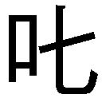

| 人類は衰退しました 03 | |
| 田中ロミオ | |
| 小学館 (2012) | |
小学館ｅＢｏｏｋｓ
人類は衰退しました ３
田中ロミオ
イラスト 戸部淑
霊長目ヒト科はもはや時代遅れな存在です。
かつて地表を埋め尽くしたという都市群は、その多くが大自然に呑まれてしまいました。ヒトの住める地は少なく、衰微は著しいものがあります。人口は減少の一途をたどり、政治とか戦争とか犯罪とか経済とか差別とか、そーいうものは全部、過去のもの。
かわりに台頭してきたのが、妖精さんという種族。人類といえば、今は彼らのことを指すほどです。
国連調停官であるわたしの仕事は、妖精さんと我々旧人類の間を取り持つこと。我々よりずっと高い科学力を持つ彼らの、心のアクセルはとても軽いのです。だからこんな世の中でも、調停官という仕事だけは残されている次第。
クスノキの里にある調停事務所には、現在三名のスタッフがいます。
語り手であるこのわたし。
ここの所長でもある、わたしの祖父。
最後に助手さん。彼に関しては妖精さんも絡んで前回いろいろありました。ややこしい出来事でしたが、うまく解決してくれたようでほっとしています。今は与えられたデスクで静かに書き物をしています。
平穏でした。
窓枠から吊られた人形が、外からのゆるい風に煽られて、首つり死体みたいにぷらぷら揺れているのが優雅でした。
「......お茶にしましょうか」
我が調停事務所では、一日五回はティータイムを楽しみます。することないから。
時は六月。あのスバラシ果実、苺の季節であります。
その圧倒的な尊さ、見る者の心を奪う豊かな表現力、赤を基調とした鮮やかな色彩感覚、緻密な構成力を思わせる名画にも似た佇まい......。そんな巨匠はそのままいただいても大変結構なのですが、お菓子の材料として用いれば千変万化のご活躍。
そんなわけで、本日のデザートも苺づくしであるのです。
分厚い古本の間に人の形をしたしおりを挟み込み、おじいさんが顔をあげました。
「茶の子はなんだな？」
「苺満載のチーズケーキです。よく冷えた」
「良さそうだな」
苺とクリームをしっとりとしたチーズケーキで挟み、上から苺ソースをかけた一品。まあ自信作。チーズケーキだけでも手にあまるおいしさだというのに、この上......。
お茶用の丸テーブルでホールケーキにナイフを入れていると、おじいさんがポットを、助手さんが人数分のカップを持って集まってきます。
「助手くん、ミルクを頼む。量はいつも通りで結構だ」
「......」
こくりうなずく助手さん。水道のところで冷水につけて冷やしていた、持ち手に人形が抱きついたデザインのミルクポットを取ってきました。
熱湯を注いだだけで割れそうな薄い優美なティーカップに、冷たいミルクが注がれていきます。ミルクの量はそれぞれのお好みに応じて。わたしほどほど、助手さん多め、おじいさん少なめ。その上から熱い紅茶をたっぷりと。
香りがぱっと室内に広がるのは、幸せな気持ちになれる一瞬でしょう。
「じゃあいただきましょうか」
「うむ」
三人で卓を囲み、あとは貪り食すのみ。
「......鳴らさないのか？」
祖父があごで示したのは、卓上にちんまり置かれたテーブルベル。天使が鐘をぶら下げている意匠です。
「ああ、そうでした。忘れていました」
テーブルベルをひとふり、瑠璃が転がるような音色が部屋を優しく満たします。
すると──
「いえす！」
窓枠から下げられた首つり人形が、突如ぴんと四肢を伸ばして、首縄から抜けます。
「すぱしーぼ！」
おじいさんの机に置かれていた書物が、いきなりばーんと開きました。ばんざいのポーズで本の中央に立っている彼は、さっきまではしおりを務めておりました。
「ぐらしぁす！」
ミルクポットの飾りをしていた妖精さんが、ぴょんと飛び跳ねました。
「まってたー！」「めるしー！」「ふぃーばー！」
コルクボードにピンで留められていた妖精さん、筒を抱えてペン立て業務に励んでいた妖精さん、ペアになってブックスタンドをしていた妖精さん、最後にはテーブルベルの天使になりきっていた妖精さんまでが、卓上に集まってきます。
「今日も賑やかだな」
人間大好き妖精さん。彼らが勝手に日用品として従事する日々が、常態化しています。
「けーき、けーき！」
「はいはい、ちゃんとありますから」
こうして今日もまた、賑やかなティータイム。
「助手くん、絵本の方はどうだ？」
「まあ、絵本って？」
「今さらだが、情操教育に良いと思ってな。描かせている」
助手さんは自分の席からスケッチブックを持ってきました。
「読むんじゃなくて描く方だったんですか」
「......」
無言でわたしに差し出してきました。
「わ、わたしに？」
絵本のタイトルでしょうか。表紙に『もりのなかまたち』と大書きされてます。
「わたしが読んでいいんですか？」
無口な助手さんは、こっくり首を振りました。
テーブルに置き、誰からも見えるように一ページ目を開きました。淡いパステルのイラストと文字が飛び込んできます。
「驚いた。イラスト、達者なんですね」
遠近を意識しない画風です。
ページを丸々大地に見立て、樹木や草花が地図のように点々と描かれています。シンプルな構図には、木石と平等の扱いで登場人物も小さく配置されているのです。キャラクターを強調しない作風というか、距離を置いた視点というか、そんな感じです。
主人公は、二羽の黄色い小鳥......ひよこのようでした。
『ひよこのササミとテバサキは とってもなかよし』
絵本は、こんな書きだしではじまりました。
「平和そうなお話じゃないですか」
細かく描き込まれた絵本は妖精さんたちの興味も誘ったようで、ケーキを頰張ったままわらわらと集まってきました。
「らくがきです？」「まんがかしら」「たのしそ」「おはなしって、おもいつかぬですよな」「ちんけなぷろっとなら」「それじゃあ、くろうとすじはゆるさぬです」「むいてないのです」「にんげんさんにしかできぬ」
そ、そうなの？
お菓子作りとかお話作りができない超科学文明というのも不思議な存在ですよね。
（二ページ目）
『ササミとテバサキ とってもはらぺこ。もりに たべものをさがしにいきました』
「そのひぐらしかー」「ひろいぐいせんもん？」「ちょっとざんねんかんただよう」
妖精さんたちのコメントがなにげに手厳しい。
（三ページ目）
『どんぐりです！ ササミはこれがだいすき！ だっておかしみたいだから！』
「あるある」「あるね」「おもた」「こうていだ」「どんぐりは、いとおしいそんざい」
お菓子にできないことはないですが、どんぐりは苦労のわりに報われない木の実ですね。胡桃に比べてしまうと。
（四ページ目）
『きのこもはっけん！ テバサキはこれにめがないようです』
「きのこみつけるたび、すわっちゃう」「いすになるですな」「つくえないが」「さんぽよう、とか？」
妖精さんなら座れるでしょうね。
（五ページ目）
『とてもおおきなたまごが おちていました。ササミとテバサキは このたまごをオムレツにすることにしました』
そこからしばらく、大きな卵を苦労して調理するまでの場面が続きます。
なかなかしっかりしたお話で、ついつい読まされてしまっています。これだけ物語が書けるなら、情操教育なんて必要ないと思えました。
（十ページ目）
『ついにオムレツのかんせいです！ おやおや？ いいにおいをかぎつけて もりのなかまたちもあつまってきましたよ？』
（十一ページ目）
『りす うさぎ もぐら とり しか ねずみ ねこ いのしし らいおん──みんなそろったので いただきまぁす！』
「次で最後のようだが......ん？」
せっかちなおじいさんは、ひとり先のページをのぞきこみました。この流れで行くとオムレツをみんなで食べてめでたしめでたしといったオチが予想されますが......なぜかおじいさんはひどく困ったような顔をしていました。
「見せてくださいよ」
最後のページを開いてみました。
「............」
そこに衝撃の場面が。
（十二ページ目）
『ごちそうさまぁっ♪』
最後に来たライオンさんが、すべての森の仲間たちを完食！
「情操教育、必須!!」
助手さんの心には、いまだ深くて暗い闇が存在しているようです！
残酷、この結末、残酷！
おじいさんが小声でわたしにだけ聞こえるように告げます。
「考えてみれば、正しいと言えば正しいがな......このラスト」
「感心するみたいに言ってしまって、どうするんですこの残虐図画？」
最後のページなんか、山と積まれた動物の骨と満腹のライオンさんだけがパステルタッチで描かれた、とんでもないシュールな構図になってしまっていますし。
「森の仲間という概念自体がひとつの壮大な欺瞞だと思わんか？」
「そういう問題は大人になってから考えましょうよ！」
「うむ。本物の子供に読ませたら大変なことになるな」
しかし妖精さんたちは、そのショッキングなオチにも動じません。
「じゃくにく？」「きょうしょく」「なるほどー」「なっとくのけつまつでは？」「らいおんさん、うまみせいぶんひとりじめってすんぽう」「りあるー」
受け入れてる？
「たのしかたですー」
「......」
妖精さんと助手さんは指先をくっつけあって、彼らにしかわからない相互理解を交わしていました。
結局、助手さんには描かせるより読ませよう、という結論になりました。
五月末到着予定のキャラバンが、実際に里に入ったのは六月も数日を過ぎてからでした。
里の広場に陣取ったトレーラーのそばでは、すでに暇を持てあましている人々が集まって宴会をはじめようとしていました。ちょっとしたお祭り騒ぎも、いつもの光景です。
とりたてて用事や必要がなくとも、里で暮らしているとキャラバンが来たら顔を出すというのは習慣化してしまうものです。人見知り気味のわたしも、配給札が余っているときはついつい立ち寄ってしまいます。
大きなテントの簡易ビヤホール。木箱を並べた露店売り。果実、穀物、乳製品、調味料、玩具に器具に食器に衣類──人の数だけ店があり。
レモンと洋梨のジャムを一瓶。夏物のブラウスとスカート。調理用ナイフを一本。カットフルーツをラム酒につけた大瓶。そんなものを手に入れて、一度自宅に引き上げようとしたところ。ひといきれの熱気がこもる広場にて、おじいさんの姿を発見しました。
キャラバンの人間と話しこんでいるようでした。邪魔しては悪いかなと思い、場を離れようとしたわたしに、向こうから声がかかりました。
「おーい、ちょっと来い」
「......はい、なんでしょう？」
年の頃は五十代くらいの、すらりとした紳士さんに紹介されます。
「孫娘です。おい、こちらユネスコの文化局長さんだ」
文化局長？ 超偉いさん？
「はじめまして、孫娘です」
「君が孫ちゃんか。 はかねがね。頑張ってくれているようだね」
はかねがね。頑張ってくれているようだね」
ＶＩＰだけが持つデラックスなオーラが、わたしをことさら緊張させます。
「いえ......滅相もない」
「フフフ、今後ともよろしく頼むよ」
というのがちと気になりましたが、とても対話できる状態ではなく。
「ははー」
「実は国連で新しい事業をはじめることになってね。その連絡と打ち合わせに来たのだよ」
「新しい事業？ まさか？」
「いや、事実だ」おじいさんが言い添えます。「ヒト・モニュメント計画という。もう何十年も前からあったものなんだが、ずっと凍結されていてな」
「よほど大がかりな計画なのでしょうか？」
「ああ、その通りだよ孫ちゃん。とても大きな計画なのだ。なにしろ世界規模でね」
世界規模！
「我々の文明についての様々な記録を、後世のために大容量記憶装置を内蔵したモニュメントに残しておこうという計画だな」
「様々な記録と申しましても、いろいろあるかと思いますけど......？」
「うむ。全部だ」
「は？」
「ヒトの総括をすることになるのだね。モニュメントは我々がいなくなってしまったあとでも残るものでなければならないし、地球の新たな支配者となる種族がより成熟した時、良い指針となるものでなくてはならないわけだ。ゆえに文化・科学・歴史あらゆる方面の全情報を集積することが理想とされているのだよ、孫ちゃん」
孫ちゃんって呼び方、いやだなあ。
「実現が難しいように思いますが」
ヒトのすべて。絵空事のようなヒトのすべて。
「全記録というのはあくまで理想だ。実際は、近い形で可能な限りデータを編纂するという作業になるだろう」とおじいさん。
「書物にするんですか？」
「いや、現在でも残っている技術をかき集めて、記録用の特殊な構造体を作る。そこに集めた情報を片っ端から入力するという流れだ。構造体がモニュメントになるわけだから、そうとうに頑丈なものになる。現在考案されているのはモノリス型でな」
モノリスというのは、広義には石碑っぽいもの全般を指す言葉ですが、なぜか黒い直方体が特に強くイメージされるようです。先の話に出ていたモノリスも、後者でしょう。
「人間の科学技術だけでですか？」
引退してからの道楽としては、なかなかに骨のある話ですよね。
「モニュメントの完成までに数年以上かかるだろうがな」
「妖精さんの力を借りたらいかがでしょう？」
「......設計通りのものができると思うのか？」
「確かに......」
妖精さんのテクノロジーは、ノリ重視ですから。
「君は妖精さんとじっこんの間柄だとか。私どもの方でもになっているよ」
「なっちゃってましたか......」
「だが今回は遠慮しておこう。情報の収集は全地域で行うのでね。ただクスノキの里は、近くに都市遺跡も多く残っているし、先生の知識や経験、蔵書なども含めて、とても有望な情報発掘予定地でね。もちろん、孫ちゃんの能力にも期待しているよ」
「はあ......」
「都市遺跡の調査を、里からも協力をつのって行うことになりそうだ」
「本当に大がかりなんですね」
いつのものかも定かではない都市遺跡群は、その多くが森林に侵蝕されています。必然、調査は労力がかさみ、見返りは乏しいものとなるでしょう。
「せめて電気が通っていればマシなんですが」
今の人間には、必用最低限をまかなう発電能力しか残されていないのです。
「それに関しては心配いらん」おじいさんは言い切ります。「機能している衛星がずっと以前から確認されててな。制御コードも判明しているので、集電アンテナさえ稼働すればすぐにでも利用できる目処はついている」
「電気が使い放題になると？」
「いや、調査用だな。世界の調査予定地で順繰りに利用されるから、民間には提供されん」
「なんだ」
安楽ライフの幕開けかと期待してしまいました。
「そういうわけでね、孫ちゃん。調査の際には、君も是非協力してくれたまえ」
「はあ」
生返事をすることしかできませんでした。
だってねぇ、面倒そうな大仕事ですよ、これ。企画倒れにならなきゃいいんですけれど。
里の若者がひとり、息せき切って駆けてきました。
「あのー、先生がた、ちょっといいっすか！」
「どうしたね」
「なんかあっちの畑に隕石が落ちたって！」
「で、これが問題の隕石ですか」
おじいさんはあの局長さんと話の続きがあったそうなので、一足先にわたしと助手さんが派遣されてきたのです。もっとも命じられたのが現場確保だけである点で、信頼のほどもしれたものですけど。現場確保というのは、おじいさんが来た時に調査ができるよう、野次馬を近づけないようにしてくれということです。
いざ来てみれば、思ったほど深刻な被害はないようでした。
郊外の休耕地。見物人もほとんどなく、火災もなし。仕事はあってなきに等しい。
「それでも一応、確保はしておきましょう」
助手さんとふたりで現場を杭とロープで隔離しました。
「しかしまあ......これ......」
その直径十メートルほどのクレーターの中央に、傾いた状態で突き刺さっている全長三十センチほどの黒い金属板らしきもの。
「モノリスに見えますが」
触れてみると熱がまったくないことに驚かされます。大気圏外から飛来してきたものなら、摩擦熱で高熱を発していると思うのですが。
「人工物ですよね、これ」
助手さんも力強くうなずきました。
人間もかつては高度な科学を発達させていたと聞きます。
「そういうものが衛星軌道上あたりを彷徨っていて、最近になって落ちてきた？」
妥当な考えだと思えました。とはいえ、わたしたちの知恵では結論なんて出せません。宇宙のこととか全然知りません。どのみち、おじいさんを待つことになるのです。
背の低い草原を揺らしながら魚雷のように迫り来るものがありました。それは蛇行しながら高速で接近してきて、目鼻の先まで来ると垂直にぴょんと飛び跳ねました。
「ぼーん！」
妖精さんでした。
「おつかれさま」
「なんか、おちてきたです？」
「みたいですよ。ほら？」
「おー、これはこれはくろぐろとして......」
物怖じせず、ぺたぺたと表面に触れます。
がさがさと音がして、四方から新たな妖精さんたちが顔を出します。
「はろー」「きちゃった」「なんかおちてきたです？」「まぜてー」
「むう、点呼」
五人の妖精さんが横一列に並びます。
「いちばん」「にばん」「さーど」「れふと」「らいと」
五人の息はピッタリ！（噓です）
「このモノリス、妖精さんたちの手によるものだったりしますか？」
五人は相談しました。代表がひとり前に出ます。
「これ、はじめてみたです」
「そう......」
ならやっぱり人間テクロノジーの産物？
手に持ってみると、思いのほか軽いものです。五キログラムくらい。
「............んー」
振ってみます。カラカラと音がしました。空洞？
「からからゆーてます？」「おまけいり？」「あげぞこ？」「おまけちいさく、はこでかく」「しょうぎょうしゅぎてきー」
「いったいどの時代なら理解できる会話なんですかそれは？」
「はて？」
「この軽さ、この音。どーもガラクタっぽい気がしてきました」
興味と関心は、しぼみ放題です。
「おーい、どうだー？」
「あ、おじいさん。これなんですけど......」
「おまえ、触ってしまったのか？ 現場を確保するのなら......いや、まず見せてみなさい」
わたしに先を越されたのが少し悔しい様子でした。
「モノリスだと？ 隕石という話だったが......これが空から落ちてきたというのか？」
「クレーターができてるでしょう？ 真ん中に突き刺さってました」
「......軽すぎる。なんだこれは。存在の耐えられない軽さだ。誰かの悪戯なのではないのか？ 普通はだな、隕石といったらＫ─Ｔ境界（白亜紀と新生代第三紀の境目のことです）あたりに落ちて地球上の恐竜を小粋に絶滅させたりするものなのだ。それが......この軽さといったらどうだ？ まるでクッキー缶だ」
「少なくとも、妖精さんの悪戯ではないようですよ」
「......人間の悪戯か」
裏返したりさかさまにしたりして、間近からモノリスを徹底検証していたおじいさん。しかしやがて興味ごと引き剝がすようにして、金属板を遠ざけました。
「本当にそれが落ちてきたとするなら......」
「無理だろう。大気圏で燃えつきてしまうはずだ。宇宙を渡ってきたというスペイシーなシビアさがこの金属板からは感じられん」
おじいさんは、モノリスをクレーターの中央に放り捨てました。
「......悪戯だな」
「でしょうね」
「帰るか」
おじいさんは歩き出します。
「助手さーん、帰りますよー」
「......」
助手さんはなだらかな丘の向こう、山のふもとにこびりついたように目立つ緑の濃い一帯に目を奪われていました。彼が没頭しているものが、わたしにはすぐに理解できました。
「都市ですよ、あれ」
「......？」
助手さんはひどく無口な分、濡れがちの瞳や物腰、ジェスチャーなどでものを語ることが多いのです。
「ええ。古い都市。いわゆる遺跡ですね。今では誰も住んではいません。野犬などもいたりしますし、危険なことが多いから」
「......」
「え？ おもしろそう？ 都市に興味があるんですか？」
幼少期をひとりで生きてきた助手さんにとって、都市というのはある種の憧れをもって眺められるものなんでしょうか。
「ほう、助手くんは都市遺跡に興味ありか。ちょうどいいな」おじいさんは、例のモニュメント計画について思いを巡らせているようでした。「興味があるなら来るかね？」
「......」
助手さんはおじいさんをじっと凝視して、小さくうなずきました。
「おまえも来るんだぞ」
「......覚悟はしてましたから構いませんけどね」
「おでかけですかー？」「ぼくらもいきたーい」「ついてっちゃだめです？」
わたしに接する時とは異なった態度で、おじいさんは言いました。
「すまないね。人間だけでやらないといけない調査なのだよ」
「......そっかー」
つぶらな瞳はいつもと変わりないようですが、こころなしか寂しげに揺れていました。
「調査中にいつもみたいなオイタをしないと約束してくれるなら、代表者をひとりだけ連れて行ってあげてもいいですよ？」
「いいのけ？」
「おとなしい方なら」
「うわーい」「せんしゅつするです」「はなしあうです」「だれがおとなし？」「さあ」
まとまりそうにない話し合いがはじまりました。
「このモノリスはどうします？」
「ほっとけ」
放置して、事務所に戻ることにしました。
妖精さんたちは結論を出すこともなく、唐突に姿を消していました。
また何日かが過ぎ、隕石騒ぎも記憶の彼方に飛んでいった頃。
夕方前に事務所を出て自宅に帰ろうとしたわたしは、少し配給所でもひやかしていこうかと里の目抜き通りに向かったのですが──
「こ、これは......？」
お祭りのような賑わいでした。
見慣れない顔の人々があちらこちらを無秩序に往来し、表通りの家屋を覆うように高い足場が組まれていました。地面だけではなく空中にも、その足場を利用して男衆が行き交っているのですから......一種異様さを感じてしまうのもむべなるかな。
よくよく見ると、荷物を満載した馬車や荷車がそこここに止まっています。その中には屋台としても使えるものもあり、このあたりでは珍しい自動車まで停車しています。
活発に作業が行われている中央広場を横切っていいものか迷っていると、ちょうど向こうから歩いてきた配給所のおばさんを捕まえることができました。
「あの、これっていったい何の騒ぎなんでしょう？」
「あら先生のとこの。なんでもお祭りの準備だって話だけど」
「お祭りの予定ってありましたっけ？」
「なんでも突然決まったことだそうよ」
奥さん自身、料理係にと頼まれて調理場に向かうところなのだとか。礼を告げて彼女を見送った後、朝の出勤時からがらりと雰囲気の変わった周辺をぼんやりと眺めました。実に急なお祭りです。してみるとこの見知らぬ方々の素性というのは、準備を手伝いにやってきた近隣の村民や、関係者であるということでしょうか。
普段は聞かないような大声が飛びかい、広場はいつになくにぎにぎしく、地元の人間より客人の方が多いのではないかというくらいの活況です。
しばらく見守っていると、束ねた黒いロープのようなものを担いだ男性が、仕事仲間のところに駆けてきました。
「ケーブルってこれでいいのか？」
「ああ、こいつだ。これで繫げてるのを二十年前に見たことがある」
どうやらそれは業務用の電線束のようでした。
また別の男性が、ひとかかえほどもあるボビン巻きのケーブルを転がしてきます。
「なあ、これは違うのかねぇ？ 指定のソケットがついてたが」
「ああこりゃただの電飾だ」
「電飾ってなんだ？」
「光る飾りだ」
「......どうすんだそんなもん。照明とは違うのか？」
「こんな色つきの電球じゃ照明がわりにゃならんべ」
「ふーん。じゃこいつはいらんのか？」
「いいんじゃないか？ どっか飾れば。局長さんもありったけの電化製品を出してくれって言ってたべ」
「じゃ適当に家にでもひっかけとくか」
ケーブル類を担ぎ直して、静まることのない活気の中に消えていきました。
『あーあー！ マイクテスッ！ マイクテスッ！』
「きゃっ」
割れた爆音が、あたり一帯に鉄槌をくだすように響き渡ります。物理的に爆音だったので、わたしだけではなく大半の人が言葉を失っていました。でもそれも一瞬。
「壊れてるんじゃないのか今のは？」「いや、ありゃただの音割れだ」「ちゃんと祭りまでに使えるようになるのか？」「だから故障じゃねって」「鼓膜が破れたかと思ったぞい」「びっくりしたわ」「もっと高い位置に取りつけろ。かなわん」
音源であるスピーカーは、広場の地面にじか置きされていたのです。数人の若者が、ユリの花にも似たホーンスピーカーをいずこかに持ち去ります。
普段、あまり使うものじゃないですからねぇ。
「やあ孫ちゃん、ごきげんよう」
「局長さん......どうも」
不意をつく上司の登場に、少し緊張します。
三つ揃いを着込んだ紳士は、今日ばかりはハットではなく安全メットをかぶっています。
「今日はお帽子ではないのですね」
「そう、こういった現場において真なる紳士はこのSAFETY+FIRST（安全+第一）の理念を体現した特製ヘルメットを着用したというのが紳士学における定説だからね」
そんな学問あったんだ......。
「このお祭りは、例のモニュメット計画と関係が？」
「ヒト・モニュメント計画。君の言う通り、都市遺跡への電力供給をするにあたって、調査の前線基地となるこの里にも余剰電力をしばらく供給しようということになってね」
「里の方でも電気を使えるんですか？」
「付け加えるならば時間制限もなしだよ。静止軌道上から送られてくるエネルギーは無尽蔵だからね。せっかくの電力、調査だけに費やすのはもったいない。そこで今回の〝来て見てシビれる夏の電気まつり〟を開催しようということになったのだ。我ら霊長類の文化といえばこれはもう電気をおいて他にはないのだからね」
「ぶ、文化......？ 壮大な話になってきましたね」
「わずか数日ではあるがね。文化生活の復権ということになるね、フフフ」
「文化生活」
なんともありがたいお言葉ですこと。
広場の有様に目を戻します。
「それでこの騒ぎ」
「通電はいましばらく先のことになるが、それだけに充分な準備期間を用意したよ。大きなフェスティバルになる。周辺地域の方々にも通達し、移動手段も用意したのでね」
ＶＩＰ局長のやることはスケールも大きいものですね。
「確かにこの里には空き家も多いですから、宿舎や施設として提供できる場所はたくさんあります」
「そうだろう？ とても誇りある仕事になるはずだ。若者もたくさん集まる。騒ぎに騒ぐだろうから、そう、君に彼らの面倒を見てもらうのもいい。いかがかな？」
「あの、わたし調査の方にかかりきりになると思いますので......」
「おお、そうだったね。孫ちゃんは妖精さんの加護を得ているそうだしな。調査隊に加わるが正しいか。残念」
ＶＩＰ局長にとっては、遺跡の調査より祭りの方がよっぽど大事そうでした。
「局長～」
里の若者がやって来ました。
「なんだね？」
「少年少女科学俱楽部の方々がいらっしゃいました」
「こちらまで案内してさしあげてくれ。孫ちゃん、君は私が祭りばかりに気を取られたと思っているだろうが、こうして調査に参加してくれる若者たちも忘れずに呼び寄せてあるのだ」
「はあ......」
しばらくして、老人団体がやって来ました。
「局長さんはどちらに？」
「あー、失礼だが、あなた方は？」
代表の老人が、髭を揺らします。
「少年少女科学俱楽部」
半世紀くらい昔の若者を、局長さんは呼び寄せてしまったようです。
日が経つにつれ、仕事は慌ただしくなっていく一方でした。
当面仰せつかったわたしの仕事は、調査に向けておじいさんの身の回りのものを調達するという作業。つまりはおつかいだったのですが。
使用するテントや消費する食料など物資の調達、必要とされる機材や人材のリストアップ、出発まで里に滞在する際の宿舎と食事の手配、里から寄せられる様々な苦情の窓口、ありとあらゆる会議の書記、ありとあらゆる挨拶回りの補助、ありとあらゆる管理表の作成と提出、ありとあらゆるお茶くみ──
調査が滞りなく進むよう、しなければならない準備は山とありました。おそろしいことに大勢の人間が絡むこの仕事において、わたしが必要な連絡を欠かすとたちどころにトラブルが連鎖していくわけです。休むことが許されない小さな歯車。大変な仕事。
「おい、例の件はどうなってる？」
事務所に顔を出せばこれです。
例の件とは？ あれとは？ それとは？
「......例の件に該当する案件が二十件くらいあるんですが～」
「調査スタッフ総数の件に決まっとる」
「ああ、それ......そう言ってくれればいいのに」
用意してあったリストを探して、おじいさんに渡します。
参加するメンバーは何十人という規模です。都市ひとつを丸々調べようというのですから、考えてみれば当然のことなのかもしれません。
調査隊のリーダーはおじいさんです。出来レースのように決まりました。その下で従事するメインスタッフは、少年少女科学俱楽部の面々。彼らはあれで全員学位持ちなんだとか。
「平均年齢の高い調査団ですよね。大丈夫なんですか？」
「あの中では私でさえ若輩だが、若いアシスタントも連れて行くさ。おまえさんとかな」
「こういう調査ってわたし、はじめてですよ」
「苦労した分、良い勉強になるぞ」
あまりしたくないなぁ......。
「ああ、勉強といえば」
助手さんは祭りや調査が近づいているというのに、毎日絵本を読んでいるだけです。今も自分のデスクに背筋を伸ばして座る助手さんは、擬人化された動物たちがたわいない日常を通じて教訓を得るタイプの物語を黙読している最中でした。
机に積まれた絵本の山は、ここ数日で何度もおかわりをされ、すでに何百冊の夢物語を読破したのか予想もつきません。彼には一度仕事を命じると、誰かが止めるか仕事をこれ以上はないくらいやり遂げるかするまで、黙々と続けるという気質があるようです。
つまり今のわたしがしている仕事のうち、彼に任せることができるものもたくさんあるということです。名簿作りとか苦情処理とか募金活動とか。
「......募金活動なんてしとるのか？」
「そうやって古い硬貨を持っている人に資料提供を依頼してるんです」
「ああ、古銭な。そういう情報もあればあるだけだな。しかし非効率だな」
「ヒトのすべての時間のすべての情報を集積する計画自体が根っから非効率だからでは？」
「......いや」
なかなか痛いところを突けたようで、おじいさんはむっつり押し黙ります。
「ということで手が回っていないのが正直なところなので、彼には絵本業務を中断していただいて、お手伝いしてもらえたらなと思うのですけど」
「うむ、ＮＯだ」
申し出はしごく妥当なもののはずでしたが、おじいさんは問題外とばかりに手をひらひらと振ります。
「せっかくだから苦労をしておきなさい。おまえが、存分に。その方が責任を背負う怖さも見えてくるだろう？」
「でも本当の調査日には......」
「ああ、本番の調査にはもちろん参加してもらうが。ただその前に、彼には憶えてもらわないといけないこともあるしな」
「憶えないといけないこと？」
ついついと袖を引かれ、助手さんが近くに立っていることに気付きました。
「......」
「え？ 読み終わったんですか？ まあ」
「おお、読了か。これで手持ちの絵本や童話類はすべて履修したことになるな」
「全部？」
「うむ。五百冊はあったろうな。私もその速読ぶりには驚いた。基礎としては充分な数に達しただろう」
「そんなにたくさん」
「読んだものは意識に刻み込まれ、すぐには変化に繫がらなくとも、いつしか糧となって実をつけるだろう。情操教育はひとまず終了だな」
「ああ、ではお手伝いを？」
「いや違う」
おじいさんは隣の書庫みたいに使われている部屋から、別の本を十冊ほど持ってきました。どれも難しそうな専門書です。
「助手くんは、今度はこれを読むように」
「それって......！」
背表紙に書かれたタイトルを見て絶句。
『三歳からの古典情報工学』『わかる！ 情報理論』『六十分でわかる積層プログラムモジュール～リサーチャー構築の基礎と応用～』『これからはじめるCOBOL～学べば一生飯が食える～』
「いきなりそれですか！」
「彼の理解力ならこのくらい読めるはずだ」
「そもそもそんなものを読ませてどうするんです!? ......はっ？」
そのとき、わたしは唐突に祖父の意図を察知してしまいました。
「ま、まさか、調査で？」
おじいさんの目が、危険な輝きを宿します。
「気付いたか......」
「助手さんを、情報工学のエキスパートに仕立て上げる気ですね？」
古典情報工学は、非常に難しい分野であると言われています。
時代によって根幹から技術革新が起こって、それまでの常識が通じなくなるからです。情報は断片的にしか残りません。世代交代を重ねてきた情報技術について調べるのは、大変しんどいことなのです。特に古い世代のものほど、調査は困難になります。
過去に幾度かあったといわれる、情報の大断絶。ですが都市遺跡を調べることで、複数の世代にまたがった情報をいくらか回収できるかもしれないのです。
そのためには専門知識が不可欠なのですが、わたしやおじいさんにとっては畑違いの分野です。少年少女科学俱楽部の中には専門家がいるそうですが、厄介な分野だけにごく少数だと聞きます。若い学習能力を保っている助手さんに、そうした分野を専攻させようとする気持ちも、あながち理解できないことはありませんが。
「にしたって付け焼き刃にもほどがあるでしょう」
「まあそれはそれだ。彼にとってもプラスになると思うがな」
「探検家には必須の技能ですけど......」
将来、ムチを腰に巻いて危険な都市遺跡群を舞台にスペクタクルな探検稼業に精を出す助手さんを想像しようとして、失敗しました。
「だが良い機会だ。他の学者との接触も増えるだろう。本人があの調子なのだから、こちらで導いてやった方がよかろう？」
「あのおじいちゃん博士たちとの接触で、得られるものがあるといいんですけどね」
おじいさんは窓枠に両手をついて、どこか遠くを見るようにして言いました。
「駄目で元々」
「......投げやりですね」
ひとりでフル回転する日々が続きそうです。
ガリ版で刷ったばかりの連絡プリントをひと束抱え、遺跡調査グループに開放されている公民館にいそいそ向かう途中、妖精さんに声をかけられました。
「もしもしー？」
「まあ、こんにちは、妖精さん」
「ごそうだん、よろしいです？」
放牧地帯と道路をわける石塀の上に、立っていたのはただひとりの妖精さんでした。
どことなく殊勝な態度で、おずおずといった感じで頭を低めているのが可愛らしく、遊んであげたい気持ちに駆られますが今は仕事中です。
「ごめんなさい。また今度」
ポケットから一センチ四方の小粒なミルクキャラメルを出して、彼に渡します。
「............」
受け取りはしたもののあまり反応がなく、ほへーっとわたしを見上げていました。顔にあまり感情が出ない人たちです（いつも笑顔に見えて、実はそれが普通の顔つきです）。
「......ごめんなさいね」
少し気になったのですけど、仕事を優先します。指先で頭をひと撫でしてやって、道を急ぐことにしました。
しばらく歩いて妖精さんのいたあたりをかえりみると、すでに姿はありません。
「次ね、次」
ちくりとするほどの、わずかな罪悪感でしかなかったのです。
「疲れました」
数日後、急ぎの連絡や細々とした作業に忙殺され、ようやく仕事を終えることができたのは午後七時。事務所の窓から見える風景は、すでに暗色にくすんでいました。
「そ、外が薄暗い......気付かなかった......」
伝令に駆け回り、事務所では書類とにらめっこ。一杯のお茶を楽しむ余裕もなく、ずっと没頭して、気がついたらこの時間です。
考えてみれば、この数日はずっと似たような感じでしたね。仕事はいくら片づけても終わらず、ともない帰宅時間も一日一時間ずつずれ込んできてしまいました。でもティータイム抜きで夜まで働きずくめだなんてのは、はじめてです。
帰れば夕食の頃合。どうしようか迷いかけます。
「......いや、今からでも淹れましょう。そうすべきです」
このまま帰宅したら負けた気分になりそうですし。一杯ひっかけてから、帰ることにしましょう。
「おじいさんは......いない、と」
あれでなかなか忙しい身らしく、日中はほとんど事務所にはいなかったようです。今日は直帰コースでしょう。
頭がどんよりと重いのは、糖分が枯渇しているせいに違いなく。
「ジャム入れて飲もう......」
ストロベリージャム。これは神の域にある食物のひとつ。イチゴのことは愛しています。お菓子に添えても良し、ジャムやソースにしても良し、そのまま食しても良し。あればあるだけ使ってしまう、禁断の果実です。
ぱらり......。
ここでやっと紙をめくる音を聴覚が聞きつけました。助手さんが、自席で読書にふけっていました。あの拷問めいた専門書をずっと読み続けていたのでしょうか。記憶をたどってみると、事務所に来るたびに彼の姿が視界に入ってたような気がしました。
思えば彼とは、まだじっくりと会話したこともないのです。
親しくない人と会話する時、緊張しすぎてたまに平常心のネジが消し飛ぶことってありませんか？ 心のタービンがフル回転してしまうというか、自分を自分で制御できなくなる感覚。話せば話すごとにどんどんボロが出てしまい、このタービンが恥の上塗り装置の原動機であることを思いしらされるという......。
「ねえ、お茶にしませんか？」
なぜか助手さんだけは、そんなに緊張をしないですむのです。ありがたいことです。
「............」
ちょっぴり濁った瞳がわたしを見上げました。
あ、疲れてる。
わかってしまいました。ほとんど外面には出ないものの、澱のような疲労は確かに彼の体内に積もっていたようで。どんよりとした雨雲が、まぶたの上にかかっているみたいな雰囲気でした。
「きゅ、休憩......した方が良いと思いますよ？」
疲れたら自分で休めばいいのに、命じられたことを黙々と続けていたようです。ふらつきながらティーテーブルの椅子にすとんと腰を落とします。
「ジャムを入れて飲むとオツですよ。あまり好きではなければ、こちらのクリームをどうぞ」
「............」
助手さんは少し逡巡して、両方の瓶から山盛りにすくいあげ、それぞれ胡桃大のかたまりを迷うことなくカップに落としました。
「おいしいですか？」
「......」
濃厚な味わいであろうその一杯を口に運び、満足そうに息をついています。
「お茶うけのお菓子は朝のスコーンの残りだけです」
おじいさんの分もあったので、ちょうど六つのスコーンがあまっていました。三つずつわけることにします。夕食前にお腹に入れるには少し多いかなと思わないでもないんですが、疲労と空腹の相乗効果には絶大なものがあって、ふたりとも一瞬でたいらげていました。
「でもあまり生き返ったという気は、しませんね......」
「......」
疲労が深いということなんでしょうね。
「帰りましょう。その前に──」
妖精さんに帰宅の挨拶をしようと、ハンドベルに手を伸ばしますと。
「おや？」
ハンドベル係の妖精さんが、いません。部屋の各所におもいおもいの方法で付着（？）していた妖精さんたちも姿を消していました。
「ひきあげちゃったんですか？」
助手さんはわかりませんと首を横に振りました。
「どうしたんでしょう......」
気まぐれな彼らのことですから、またひょっこり姿を見せるでしょう。いくらでも。
と、この時は、そう考えていたのです。
慣れない人間同士の調停仕事、ようやくの目処がついたは数日後のことです。
「......組織を動かすのって大変なんですねぇ」
つくづく実感します。
残りは段取り通りに事が進むよう監督することくらい。どちらかというとこちらが本番なのですけど、わたしの受け持ちは一段落です。そうなるとがぜん気になるのは、姿を消した妖精さんたちのことでした。
「......」
助手さんが、わたしの袖を引きます。見れば帽子をかぶったおでかけルック。
「さがしに行きたいんですか？」
こくり、栗色の前髪が揺れました。
情操教育の成果が出ているような気がします。
「本業はそちらですものね。わかりました、さっそくそのあたりの原っぱをさがしてみましょう」
すると助手さんは、備品の虫取り網と虫かごを身につけました。
「......友達を、虫取り網で？」
「なにか問題でも？」といった感じで、首だけをかしげていました。
妖精さんは、どこか特定の場所に必ずいるというものでもありません。どのような場所にも現れる可能性があります。傾向として人間の少ない場所や、楽しそうな場所に現れるくらいのものです。だから適当に気楽に闇雲にさがすのは実は理に適った方法です。
「いましたか？」
助手さんは「いません」と身振りで示します。
いつもだったら、すぐに姿を見せてくれるのに......。
何日か前、妖精さんから相談を受けたことがありましたね。忙しくて断ってしまいましたけど、もしかしたらとても重要な内容だったのかも。
「しまったかしら......でも忙しかったし......そんな深刻な話だと判断できなかったし......でもねぇ......」
わたしはうじうじしました（得意です）。
助手さんはバッタみたいな虫をゲットすることに夢中で、もはや戦力ではなくなっていました。
「うーん、どうしたものでしょうね......」
普段は聞こえない工事の音が、里から離れたこの場所にも届いていました。金属を叩く音や車輛の音、あのおそろしいチェーンソーも使われているようです。ときおり、かすかに笑い声が聞こえてきます。宴会のような。
大勢の知らない人間が集まって、大きな仕事をする。そのことに皆が浮かれているようでした。すでに電力供給は一部開始されていて、作業は夜間になっても照明を駆使して続けられるのです。まったく別世界みたい。
「にんげんさーん」
「あ！ 妖精さん！」
足下に大勢の妖精さんが集まっていました。
「いったいどうしちゃったんですか？ えっと......その荷物は？」
全員が大きなふろしき包みを背負っていたのです。旅の荷物かとも思いましたが、どう見ても穏便ないでたちではありません。家出とか夜逃げをしようとしているという感じです。
「かなしいおしらせです」
さして悲しいでもなさそうな顔で、先頭の妖精さんがいいます。
「へ？」
「いとまごいに、きたです」
「暇乞い？ お別れの挨拶ということですか？」
「......？」
助手さんも心配そうな様子でやってきました。
「おわかれ、しちゃいます？」
「お別れ？ どうして？」
「......やつが、くるです」
「やつ？」
「でんじはのやつが」
電磁波。
「電磁波とは、あの電磁波のことでございましょうか？」
「はい、でんじはです」
妖精さんはぶるっと体を震わせました。
「あいつ......あいつ......が......きたら......」
「電磁波、いやなんですか？」
「いきてはおれぬです？」
死の影がちらついてしまいましたよ。
「どういうことなんですか？ 電磁波浴びるとだめになっちゃうんですか？」
「そんなかんじ」「あれはくるです」「ひかりとかはへいきなんだけど」「でんじばにはいられぬですな」「むりむりだー」「かきみだされるゆえ」「くるおしくなることも」「いきるちからをうしなうとのこと」「かなしみをもたらしすぎます」「こまるー」「だから」「にげなきゃです？」
電磁波を浴びると死ぬ。だから逃げる？
「それって......」
詳しくはないんですけど、ひとつだけ記憶に残っていることがあります。
「これでしょう？」
左手の三本の指（親指・人差し指・中指）をそれぞれの軸に向けて伸ばした形。フレミングの左手の法則と呼ばれるもの。確か電流が流れた時、力と磁界の方向について示す形。フレミングさん左手から磁界を発する特殊能力者だったという話です。
「あ、それは」
わたしの左手の形を見て、妖精さんは嬉しげに伸びあがるのです。
「らっぷみゅーじっく？」
「違いますって」
左手の法則を地面に向けると、ラップとかいう古い音楽のポーズの再現になります。
「よーよー？」
「はい」
「よーよー、よーめん？」
「......は、なんです？」
「らっぷです。ＹＯ─ＳＡＹ？」
「唐突......」
妖精さんたちはそのまま踊り出しそうな勢いでしたが、はたと我に返って背筋を伸ばします。
「......おわかれます」
「本当に行ってしまうんですか？」
「あい」
「でも、どこに行くと？」
「さー？」
やっぱり知らないし......。
「でも電磁波がなくなったら戻ってきますよね？」
「どーだろー？」「なんとなくそんざいしてるのでー」「わすれちゃうかも」「ぼくら、げんじつとゆめのあわいにすむものっぽいです」「ふぁんたじーだ」
当人たちはのんきに話していますが、わたしは不安になってきました。
「ねえ......今回のことって、かなり深刻なことだったりするんですか？」
「そんなでも」「でもです」「しちー（都市）にひがはいると......」「ずっとぴかぴかしてると」「ぼくらでてこられぬですよ？」
「都市遺跡の調査の一件ですね」
調査のための送電。大きな電気の流れ、火が入った都市で休止状態から復帰する無数の電化製品──
周辺空間に電磁波が張り巡らされて、そして妖精さんが住めなくなる。
調査のための送電は、成果次第では年単位に延長されることもありえます。ヒト・モニュメント計画は急ぐ必要のない、納期のない仕事だからです。
そして長期間住めなかった土地が仮に元通りになったとして、気まぐれな妖精さんは波が返すように戻ることはないでしょう。
「そんな、もっと早く相談してくれれば......」
「しましたけど、できませぬでした」
そうでした。
自分の仕事を優先して......。完全なミス。どれほど急ぎでも、自分が調停官であることを忘れてはならなかったのに。
「少し待ってくださいません？ 避難場所を用意しますから」
「たのしいひなんくんれん？」
「避難訓練は楽しんだら駄目で......ではなく、本当の避難です」
「あー......」
妖精さんたちは互いに顔を見合わせます。だけど、
「でもあいつ、もうきてます」
そうだった、予備送電──
調査と祭りの準備のため、配電ははじまっているのです。
「このくらいまでがげんど」「もういかなきゃです」「びりびりきてる」「じばじばきてるね」「あやぶまれているです」「ほんかくてきにくるとやばいです」
「調査が終わったら、」
言葉が出ませんでした。
どちらにしてもここから先は、希望的観測でしかないのです。
「......っ」
助手さんが心配そうな目線を、わたしと妖精さんたちの間に渡していました。いつものことですが彼もまた、語る言葉がないようです。
「ごちゅうこくです」
いつもたわいない質問をしてくる時とまったく同じノリで、リーダー妖精さんが手を挙げました。
「忠告？」
「ぼくらなきあと」「けが」「びょうき」「じこ」「みなげ」「そういうことに」「ごちゅういなさるです」
「......どういう意味？」
「じかんないですので」妖精さんが豆本を差し出してきます。「まぬある（マニュアル）にて、どうぞ」
別の妖精さんは、こよりを編んで作ったようなペンダントを抱えていました。
「おまもりなにとぞ」
「お守り......」
受け取っても、素直な喜びが出てきてくれません。お別れの品？ 冗談めいています。
引き止めることはできません。頭でそれを理解していても、心はざわめいたままでした。折中できない自らの両面を、わたしは持てあまします。
「あー！」
悲鳴は、妖精さん全員の口から飛び出しました。
「きたー」「きたかー」「もー」「だるーい」「でんぱって、いつもくうきよまぬね？」「あんなだからぺーすめーかーとめるよです」「すいっちおふになるです」「ぼくらもおふになりそうだ」「にげよう」「にげにげ」
妖精さんなりに辟易とした口ぶりのようでした。ほんの少しずれた言い回しに、いつものように笑ってつきあうことはできませんでした。
「おるぼあーる」
ぴょん、とノミみたいに跳ね、空気にとけこむように搔き消えました。
「あろはん」「つぁいつぇん」「さいならー」
それぞれの挨拶を残して、同じように草むらの向こうに消失していく彼ら。全員いなくなってしまうと、初夏の空気はことさらひんやりと肌を冷やします。
「......っ」
助手さんがおろおろうろうろしています。
彫像のように停止していても、内心ではわたしも負けないくらい動揺しています。
それにしても──ああ、なんということでしょうか。
妖精さんが、退去してしまいました。
たぶん、彼らのグループだけではなく、里の周辺に住んでいたすべて......。妖精さんが忽然と霧散していく様子を白昼夢と称するなら、本件の不注意の一端がわたしにあることは悪夢のようと言うほかありません。
「......こんなこと、どう報告したらいいのやら」
あれだけ沸き立っているイベントですし、報告してすぐに送電が止まるとは思えませんでした。
手に残された豆本とお守りだけが、夢の残り香です。
「......？」潤んだ瞳が問いかけます。
「え？ この本は何かって？ 見てみましょう。新しい妖精さんを作るレシピが載っているかもしれません」
ないない、と助手さんは手をパタパタと振ります。いや、わたしだって魂が半分くらい抜ければ、適当な物言いのひとつくらいはします。
妖精さんのまぬある（マニュアル）は、小さすぎて非常に読みにくいものでした。持ち歩いているコンパスに付属するルーペを使い、たんねんに文字を追っていきます。
このような内容でした。
【この本の見方】
地域でもっとも妖精さんと親しい人物をひとり選んでください。一日に訪れる妖精さんの人数を計測し、妖精密度（妖精さん版の人口密度）を概算することができます。
単位はｆ（Fairy）を用います。
たとえば１ｆならば、一日でだいたいひとりの妖精さんと出会う環境です。
妖精さんは数が増えると厳密性が損なわれる傾向があり、計測は無意味になります。そこで本数値は15ｆを上限とし、それ以上は過密状態をあらわすＦで示します。
「......？」
「つまりですね、妖精さんが地域にどれだけいるのかなかなか数えられないので、もっとも親しい人間をカウンターがわりに使って目安を出しているんでしょうね」
問題はその妖精さんの密度を測って、どういう判断をするかなんですけど。
数値ごとに細かく記載されているんですが、要所のみを抜き出しましょう。
【～Ｆ】
解説
妖精さんだらけ、妖精さんまみれ、妖精さん濁の状態です。
極めて危険な反面、極めて安全です。
あなたはひどい目に遭うでしょう。
でもまず死ぬことはありませんからご安心を。
状況例（目安です）
『高層ビル二十階から落下する』→生存確率は極めて高。空中でヒーローにキャッチされる。あるいは飛行生物にすくわれるなど。生存率を高めるため、序盤にペガサスなどを見かけたら手なずけておきましょう。
『至近からの銃撃を受ける』→大切なペンダントで弾は止まります。
『人食い怪物の襲撃』→怪物の頭上に大岩などが落下してくるでしょう。生存確実です。
『ライバルとの最終決戦』→あなたは秘めたる力に覚醒するでしょう。あなたの勝ちです。もしライバルが肉親の場合、相手は死にます。救う方法はないので諦めましょう。
たいそうおふざけになっておられる状況例の部分はもう突っ込まないとして。
「......なぜ死なないんでしょう？」
ぱらぱらめくってみますが、その説明はありません。
この表記からだけだと、妖精さんが飽和状態にあるとトラブル発生率が極大になるという意味にも取れます。
「絶対に死なない」という部分は意味不明。
なんらかの反作用が因果に干渉しているのかもしれません。
【10ｆ～】
解説
相当数の妖精さんがいるこの状態でも、前項【～Ｆ】に準じた混乱と安全が予想されます。
トラブルの発生率だけは、妖精さんの数が少ないためいくぶん抑制されるでしょう。
ただ安全面は万全ではないため、注意一秒怪我一生であることを意識しましょう。
状況例
『高層ビル二十階から落下する』→基本的には生存可ですが、トラバサミからペガサスを助けるなどの事前準備が不十分な時など、場合によっては仮想的に顕現した神〝あたり〟に「このまま落ちて死ぬのは不憫だ」なる理由で鳥とか星座に変えられてしまう、といった根暗な文学や神話のような結末を迎えてしまうことがあります。
『至近からの銃撃を受ける』→あなたを想う人が盾となり死んでしまうことがあります。
『親族間の遺産トラブルに巻き込まれる（ついでに殺人事件も起こる）』→遺産に執着しないことが肝要です。調査にやってきた探偵などに「わたしはお金などいらない」などと清貧ぶりをアピールすることによって、民俗学における末子成功譚の恩恵に与ることでしょう。
『人食い怪物の襲撃』→食べられた後、人食い怪物の体内でもう十年も脱出できぬまま暮らしている老人などと出会い、新たな冒険がはじまってしまう可能性があります。
「......ちょっとしんみりしている時に、こういう文章読むのつらいなぁ」
「......」
助手さんが慰めるような潤んだ瞳を向けてきます。
【５ｆ～】
解説
あなたはかなり現実味のある状況に置かれています。
危険に遭遇すれば怪我をすることもありますし、場合によっては命を落とすこともあるかもしれません。
ただ５ｆ以上というわずかな数値であっても、あなたの生存確率は大幅に高められていることは確実です。常に冷静に行動することで、危機を乗り越えることができるでしょう。
状況例
『高層ビル二十階から落下する』→厳しい状況です。この危機を脱するために、自力で迅速にワイヤーフックなどを射出してください。その行動を取ることができれば、フックは必ず神業レベルでしっかりと係留されます。また多少厳しい方法ですが、落下中に秘められた力に覚醒するという荒技もあります。あなたが少女で、いわくありげな指輪やペンダントなどを所持しているならこちらをオススメします。
『謎の怪人に追い回される』→長時間逃げ回ることになるでしょう。しかし最後には、機転をきかせて撃退することもできるはずです。相手がチェーンソーやかぎ爪を所持していることもありますが、頑張って生存してください。印象ほど絶望的な状況ではないはずです。ただしあなたが素行不良の若者である場合、死亡率は跳ね上がります。素行にはご注意ください。
『ライバルとの最終決戦』→順当に相打ちになってしまうでしょう。それはそれで美しい結末になりそうですが、命が大切な方はご注意ください。
「だんだんと言いたいことがわかってきましたよ......」
このマニュアルがいつの時代に執筆されたものかはわかりませんが、まあ人間の手によってしたためられたものでしょう。それを妖精さんが発見して豆本化したのでしょう。自分たちの取扱説明書として。
妖精さんの存在が、いかにデタラメなのかわかろうというものです。
５ｆ以下は効用の精度の違いが厳密に出るのか、１数値ごとに解説されていました。
途中を飛ばし、１ｆの説明に目を通します。
【１ｆ】
解説
わずかひとりの妖精さんしかいないという状況です。
「これでは現実となんら変化はない」と思うかもしれません。
その予想は半分は正しいといえます。事実この状況では容易に死の影がちらつきます。あなたは普通の死因で落命することがありえます。１ｆ以下の世界は極めて現実的なのです。物語めいた麗句に彩られた自分を夢想できる時ではありません。
妖精さんがひとりでも希望を捨てることのないよう。とにかく悲劇ではなく喜劇的な方向を目指してください。肉体を酷使することになると予測されますが、ここを先途と駆け抜けましょう。コロコロと方針を変えてはなりません。初期の確信を貫くようにしましょう。たとえば錆びた剣を手にしたなら、それをみだりに投棄したりしないことです。そのような奮闘によって〝童話的災害〟が〝伏線効果〟の働きによって事象をプラスに転じさせることもあるのです。状況例は割愛します。
【０ｆ】
解説
冷たく過酷な現実です。わたしたちの生きる世界です。
起こるべきことが起こります。
事故や病気に気をつけて、天寿をまっとうできるよう頑張りましょう。
状況例
『高層ビル二十階から落下する』→潰れます。
『至近からの銃撃を受ける』→死にます。
『人食い怪物の襲撃』→いただかれます。
『ライバルとの最終決戦』→負けます。
本を閉じました。
「......なんとまあ」
地球がミステリアスに変質してしまった（わたしの周囲に限定しているのかもですが）理由が、なんとなくわかった気がします。
どんな理不尽なからくりが世界を支配しているのだとしても、今地球で彼らなりの考え方を差し止める権利はヒトにはないのです。むしろ、どちらかというと──
遠くの方から、空気が震える音が伝わってきました。
助手さんが指さす先で、花火が打ち上げられているようでした。景気の良い快音が、続けざまに青空を震わせています。
「......？」
「お祭りの開会式用の花火ですよ。あれ自体は予行の打ち上げですけど」
本番はあさって。調査行と電気まつりは同時に実施される予定です。
里の誰もがうきうきと待ちわびていた催しです。幾日も続くお祭り騒ぎのはじまりで、文明という昔日の残像を透かし見ることのできる、一生に一度の祭典。
なんだかんだ言って、わたしだって楽しみにはしていたのです。自分が馬車馬となって仕込んだ大きな大きな仕事。そんな自負だってあって。
「......うーん？」
草葉に消えた妖精さんたちと一緒に、わたしのハッピーも逃げ出してしまったんじゃないかとさえ思えました。
『大変お待たせいたしました、紳士淑女の皆様方。どうぞお近くのお飲み物をお取り下さい。よろしいですか？ それでは〝来て見てシビれる夏の電気まつり〟開催を宣言いたします』
局長さんの宣言が終わるや否や、大勢の歓声が広場に弾けました。
いよいよ電気まつりのはじまり。
それにしても、なんという人の数でしょうか。
当初、老人ばかりが集まってしまうのではないかと危ぶまれたお祭りも、蓋を開けてみればこの有様。人、人、人の大混雑。もちろん里の人だけではありません。他の土地から訪れた人人でごったがえしているのです。
タバコやお酒や食べ物などの屋台が建ち並び、求める人々に浴びせかけるように手渡されていきます。人が集まっているだけでなく、そうした屋台などからバケツリレー状に物資が運ばれていく物流ができているため、広場には渦状ベクトルが形成されていました。
「すいません、通してください......通して......ああうあーっ!?」
渦巻きの外縁に少し触れただけなのに、仮借ない人波の濁流に搦め捕られて中心部へと引き込まれる羽目になったのでした。
「で、出られない!?」
立すいの余地もない、超過密地帯でした。
そもそも調査行に参加しなくてはならない身で、広場を通り過ぎて自宅に立ち寄ろうとしただけなんですが。
そして気がつくとわたしは、飲み物とホットドッグを持たされていました。
「いや、あの、抜けたいんですけど......」
物情騒然たる時代を再現するに足る広場の熱狂に、わたしの主張は虚しくかき消されてしまいました。
『かつて天に地に海に、人は栄えたと言います。そうした高度な都市文明を支えたもの......それは偉大な電気の力です。今までの私たちの手には、わずかな科学の残滓しか残されてはいませんでした。しかしもはや忍耐の時は終わりました。電気の力は復活したのです。我々、ユネスコからこうした恩恵を最初に受けるクスノキの里の皆さんに最大限の祝福を送るとともに、霊長類の老後がいっそう豊かなものにならんことを祈って──』
そしてまた、盛大な声と爆音めいた拍手。
「うわ......」
耳を押さえて、ただただ圧倒されてしまうわたしです。
『それでは給電を開始いたしましょう。諸君、よろしく頼むよ』
壇上で技師さんがたが機材を操作しました。マイクロ波給電網が作動すると、広場にかけられた電飾や電化製品の数々がいっせいに動き出しました。モニターが光を灯し、洗濯機が空回りし、調理器具は震え、清掃器具が跳ね回り、電気式玩具はうなりをあげ......。
「ぶ、不気味すぎません？」
機械的な動きが無意味に連なると、こんなにも得体のしれない印象になるとは。まるで前衛芸術のよう。ですが広場の人々には、そんな細かいニュアンスは関係ないようです。いっそうの叫びを発しつつ、手にした酒類を景気よく喉に流し込んでいきます。
「た、ただの宴会ですねぇ、これ」
しかも何日も続きます。想像しただけで気疲れしてしまいそうです。
「逃げましょ」
人波の隙間をぬってなんとか渦のふちまで脱したものの、そこで力尽きます。
「......ぐったり」
こんな場所で倒れ伏していたら踏まれて死んでしまうかも。大地に還るには早すぎるわたし、不幸。などといじけていると、羊が背中を踏みつけて通りすぎていきました。
「うう......」
そのままいじけ消えようとしていたわたしを引っ張り起こしたのは、助手さんでした。
「......」
従順でよくなついている上、相対する人にプレッシャーを与えないという特異な才を持つ、素晴らしい人材。いいタイミングで発見してくれたものです。
「良き働きです、助手さん......賞をあげたい」
「......」
ふたりで広場を離れ、通りを逆に歩いていきました。人混みから離れると、いくぶんか気分も楽になります。
里の大通りにも屋台が軒を連ねていて、広場ほどではないものの大勢の人が行き交っていました。しかし何より気になるのは、ふわりと漂うあたたかい食べ物のにおい。
「助手さん、この食べ物は全部タダなんですよ。自らの欲するところを行うべきですよね」
こくこくとうなずく彼の口元に、すでにバジルがひっついていました。
さっそく手近な屋台に立ち寄り、チョコレートムースを薄手のワッフルで挟んだ食物をわけてもらいます。
「おいしい！」
わたしの知らないお菓子がいくらでもありそうな気がしました。期間限定で。調査なんか休んでしまって、ひたすら屋台巡りをしてみたい衝動に駆られます。といったことを本気で考えていたわけではないものの、通りにざっと目線を巡らせてみると......ひとりの少女が目に留まります。
年齢は十二～十五歳の間くらい。変わった格好をしていました。
変わった格好というのは、主に猫耳のことを指します。
娘さんは人間の分際でありながら、猫の耳をぴょこんと生やしていたのです。わたしはなんだかそれを許せそうにありませんでした。
他の特徴を見ていきますと、全体的にススっぽいというか、薄汚れていました。しかし疲労している様子は見られず、アーモンド形の猫目をギンギラに見開き、口元をぎゅっと引き締めて、首だけを動かすやり方で機械的に周囲を見回し続けています。
壁を背にした首振りは前方百八十度をカバーし、通りを歩く人々すべてに意識を向けている様子は、まるで人間レーダーみたいです。
自分以上に挙動不審な人間を見ると、少しほっとした気持ちになりませんか？ ならないですかそうですか。まあいいんですけど。
微笑ましい気持ちで視線を注いでいたら、相手から逆探知を受けてしまいました。
「しまった......」
彼女の目線がひたりとわたしに固定されます。すごく見返されてます。ガン見です。目をそらしかけた時にはすでに遅く、少女の気配はこちらにずんずんと歩み寄ってきたのです。な、難癖をつけられる？
「今、貴女は自分のことを解析していたであります。理由をお教えいただきたい」
解析？ 見ているだけで解析？ こんな難癖つけられたのはじめて！ しどろもどろに説明します。
「えと......わたし、この里の先住民なので、知らない人だなって見てただけで......その」
「現地スタッフの方ですか。それは失礼いたしました。自分は......ぴ、ぴ、ぴおん......」
「ぴおん？」
「ぴおんです......たぶん」
「たぶん？」
「アメリカ国籍であります」
「は？ あめりか？」
話についていけないわたし。
「じゃああなたはアメリカ大陸からいらしたと？」
「わかりません」
しゃんと背筋を伸ばして少女は言います。
「でも、アメリカ人なのはこれ確実なのであります。そう記録にも残っているのであり......その......なんとなく。なんとなく、確実に、そうなのであります」
ああ、そういう心境の時ってありますよね。なんとなく絶対にそう、という。
「えてして、そういう時にこそ痛恨の勘違いをしていたりするものですが」
「そうなのでありますか？ 自分は、自分は根無し草なのでしょうか？」
「わ。わたしに聞かれても......」
予想以上におかしな娘さんです。はやくも逃げたい。
「自分はもっと賢い子だったはずなのですが......なぜか、頭が働かず......」
「お祭りに観光でいらっしゃったんじゃないの？」
「はあ、お祭りに出くわしたのは偶然でありまして、この土地に来たのは別の目的によるものであります」
「わたしたちは里の調停官をしている者です。もしよろしければ、話をうかがいましょうか？」
「僭越ながらお尋ねいたします。調停官とはどのような役職でありましょう？」
「そうですね、妖精と人間の間をとりもつ、夢の架け橋です」
「............」
「国連ですよコクレン。アメリカさんとは持ちつ持たれつだったのでは？ 調停官というのは国連所属の学者のはしくれのようなものです」
少女の頭から「チン！」という大きな音がしました。
「え？ 今のなに？」
「国連でありますか！ 自分の記録にも、その組織についてはログが残っておりますよ！」
「ん？ 記憶をどうされたんです？」
「はい。実は自分は現在、記録喪失の身の上なのであります」
助手さんと顔を見合わせます。
「それをおっしゃるなら、記憶喪失では？」
「そういっていただいても差し支えありません」
「......大変な状況でいらっしゃる」
記憶を失っているとなれば、今までのとんちんかんな会話も理解できます。
「幸い自分には自己修復機能がありますので、時が解決してくれることでしょう」
「治癒力のことですよね？」
「そういっていただいても差し支えありません」
人の形をした違和感みたいな女の子です。
「では、なぜここにいるのかもご自分ではわからないとか？」
「いいえ、目的だけは見失ってはおりません。仲間を、さがしているのであります」
「お仲間さんというのは、どちらに？」
不安げに目を伏せ、ついでに猫耳もぺたこと伏せます。
わたしはうめき声をあげます。
「う、動きおったです......」
「は？」
「いえ、個人の自由ですよね......」
猫の耳をつけるのも、ピアノ線みたいな仕掛けで動かすのも......自由ッ、自由です！
わたしの漏出した内的葛藤に少し首をかしげながらも、娘さんは話しはじめました。
「通常、共有空間にいる限り問題なくデータリンクが成立するはずなのですが、シグナルが途絶えたままなのです。原因不明の途絶であります。そこで直接接触をすべくこの通りに立って監視活動を」
「はあはあ、事情はわかりました......で、そのお仲間さんというのは、どのような方で？」
「あの者は......お、お、おやじ......」
「は？」
「たぶん、おやじです」
「............」
沈黙が訪れました。
「そ、そうですか。まあ結構です。自由ですから。自由の国あめりかですから」
主権国家万歳。
「で、調停官閣下、本件について、なにか有用な情報はいただけるでしょうか？」
閣下って呼ばれたのはじめてー（少し楽しい）。
「......いえ、残念ながら」
「そうですか......残念です。自己診断と並行して、調査を継続することにいたします。何かありましたら是非自分までご一報を」
「そういたしましょう」
記憶喪失というのも大変なものですね。
「失礼いたします」
踵をつけて敬礼、反転して元の位置に戻っていきます。
助手さんがすぐに袖を引きます。
「はい？」
スケッチブックに、猫耳のイラストがさらりと描かれておりました。
「......いや、わかってますよ。突っ込めないでしょう、あれ......こわくて」
助手さんも気になっていたんですね。
「見なかったことにしましょう。お祭りにはこういうことがあるのです、きっと」
「またなにかやらかしたのか？」
「ふひゃあ」
いつもの白衣ではない探検ルックに身を包んだおじいさんが、背後に立っていました。
「出発の時間だというのに一向に戻ってこないからさがしに来てみれば......助手くんを連れ回して遊び惚けていたな？」
「戻る途中だったんですけどね......」
「車で移動なんだから急げ。もうあまり時間がないのだ」
「はい......あの、ところでおじいさん」
「ん？」
「オヤジってわかります？」
「古い言葉で父親のことだが、それがどうした？」
父親？
話がまったく繫がらないような。
「もうひとつ質問ですが、娘の名前にぴおん、どう思います？」
「胸が痛む」
「ですよねー」
「だから、なんなんだ一体？」
「たいしたことじゃないんですけど......着替えてきます」
「荷物も忘れるな。助手くんもな。私は先に集合場所に行っているから、準備が終わったら寄り道せずに来なさい」
妙にハッスルしているじーさまに、助手さんが無言で敬礼を返していました。
たっぷりの機材と人材を乗せ、一群の大型車が荒れ道を走破していきます。
これは実に壮観な眺めと申さざるを得ません。マイクロ波受電ユニットを備えた無燃料車を雑多に集めた結果、トラック・バス・自家用車・クレーン車・特殊車両などの混成部隊となってしまっているのです。わたしたちが乗ったのは、民間の観光用大型バス。道が悪いだけあって、揺れること揺れること。その速いこと速いこと。
給電によって無燃料で高速移動が実現できるのです。徒歩で数日かかる位置にある大方の都市遺跡まで、わずか六時間の旅。下手をすれば徒歩にも遅れるキャラバンに比べると雲泥の差と言えましょう。
悪夢めいた乗り心地に我慢できれば......ですけど。
「うー」
窓際に座らせてもらっているのに、気持ち悪さうなぎ登り中。
「......」
「え？ 大丈夫かって？ ううん、だめです、死にます」
「......っ（おろおろしている）」
心配してくれるのは隣に座った助手さんだけです。
おじいさんをはじめ、少年少女科学俱楽部の人たちは楽しそうに談話中。
「風、風に当たりたい......」
窓を開けると、冷たい空気が流れ込んできます。新鮮な空気きもちよいです。無意識に上半身を乗り出そうとすると、後ろから助手さんに引き戻されます。
「......」
「え？ 乗り出したら危ない？ でも乗り出さないと別の意味で危ないんです」
せめてあごだけを窓枠に乗せて、
「王様の耳はロバの耳、バスの中はマジックペンみたいなにおい～」
風景に向けて告発してみたり。
「......」
ずっと引っ張られ続けていたといいます。
「着いた......」
バスから降りて、愛しい地面にじかに腰をおろし、平衡感覚の回復に努めます。
「満腹だったら食べ物が返品されてくるところでしたよ」
「一番若い者が一番へばっているのか」
おじいさんは元気いっぱいですね。
「車内で一番頑張って戦っていたのはわたしなんですから、そこはもう勘弁してくださいませんか」
「どういうことか？」助手さんに尋ねます。
「......」
「なに？ 敢闘賞？」
そう、敢闘したんです。
「つまり酔ったわけだな」
「もうめろめろ......」
今でも油断してると喉の奥にある流行発信源からムーブメントの小波がやってきそうです。でもこのブームは絶対に阻止したい。
「キャラバンでは酔わなかったのか？」
「速度と揺れがダンチなんですよ......」
「仕方ない。私たちはすぐに初期調査に向かうが、おまえたちはここで休んでいろ。地図はわかるな？ 体調が良くなったらこちらに合流すれば良かろう」
「はい、そうします」
どこかの誰かが張ってくれたテントのひとつに、よつんばいのまま逃げ込みます。今はとにかく横になりたい。ゆうに八人くらい寝られる大きなテントには、すでにマットレスが人数分用意されていました。ひとつを占拠して四肢を伸ばすと、テントの外から学者さんたちが民族大移動せんとする気配が伝わってきました。
皆さん元気ですよね......。
心で見送りつつ、浅い睡魔に身を委ね──
寝ていたのは一時間ほど、でしょうか。
どうやら平衡感覚のくるいも矯正され、問題なく回復できたようです。テントを出ますと、無人の調査キャンプの静けさは皮膚に張りついてくるようです。
遊牧民の村落の様相で、乱雑に張られたテント群。折り畳み机に並べられた数々の計器。地面を蛇行するとりどりの電源コードの束。トレーラーの上でごっつい重機が出番待ちのまま待機しています。
「呆れた、冷蔵庫まである」
しかも業務用。中身──肉、魚、卵、野菜、酒。
飽食時代の幕開けを予感させます。酒の量は明らかに宴会を想定していました。
と、テントの森（まさにそんな感じです）のどこかから、白い煙がたちのぼっているのを見つけます。ちょっとした広間として残された空間で、助手さんが携帯コンロを使ってお湯を沸かしているところでした。とろんとしたのんきな目をわたしに向けます。
「......」
「え？ お茶の時間だって？ それはありがとう、いただきます」
手渡された素朴なプレーンティーの香りが、鼻先をくすぐりました。
たっぷりと時間をかけて一杯を楽しんだのでした。
「さて、それじゃあ都市遺跡に向かうとしましょう。この重いのを背負って」
二人分の背負い袋に満載された、物資の数々を身につけます。
中身は食料と水、携帯用コンロ類、サバイバルキットや薬品、ナイフや懐中電灯などのツール類、わずかな着替え。特に食料については一週間分以上、水については大げさにもひとり四リットル（うち一リットルは水筒）を持っていきます。
もっともこの大げさな量の水は、茶葉やコーヒー粉を布で包んだ手作りティーバッグ用でもあるのですが。
......妖精さんの警告がなかったら、こんな重い荷物を持っていこうとは考えなかったはずです。どうも今回は、いやな予感がしますよ。
キャンプの設置されたこの小高い丘からは、件の都市遺跡が一望できました。
緑に芽吹く丘陵地いっぱいに、巨人が仰臥するように都市は広がっています。
都市は大きくふたつのエリアにわかれていました。
異彩を放つ都心部と、よく見るタイプの平凡な市街の外縁部です。
遠方から眺める都心部は、ガラス板に落とした薄い水銀の盛り上がりを思わせます。そこは都市の中核にあたる、いわゆる都心部でした。水銀のふくらみが単一であるように、都心部も複数の建築物ではなく、ひとつの巨大な構造体によってのみ構成されています。その高度は五百メートルはありそうで、見ていて寒気がするほどの巨大さです。最初からひとつのドーム状区画として建造されたのか、無数の建物が蝟集して結果的にそうなったのかは不明。いずれにしても建物ひとつで都心をまかなうのだとすれば、内部構造は複雑の極みにあることでしょう。今回はそこまで調査は行われませんけど。
建材自体が持つ金属質の色合いが、統一した様式を強く印象付け、そのメタリックな質感は光の加減によってくすんだ銀色とも鮮やかな鉛色ともつかぬ霊妙な色合いを見せるのです。本当に水銀みたいな都市です。
都市遺跡のご多分に漏れず、外縁部には風雨と植物による侵蝕が見られます。草木の合間に朽ちかけた木造建築の名残を多数見ました。それでも、この都市の保存状態は最高に近いものがあります。普通都市は、半ば森に食われていることが多いので、ここまで侵蝕が遅れている場所はそうはありません。
調査は、外縁部からはじまります。
打たれたみたいに、助手さんは都心部を見つめていました。
「助手さんも興味ありげですし、そろそろ行ってみましょうか？」
問いかけると、力強くうなずいたのです。
「物理的な発掘の必要性はほとんどないようだから、このまま情報収集に入ることした」
外縁部の大通りにさしかかったあたりで無事、合流。すでにメンバーはそれぞれの調査をはじめていることを聞き、わたしたちふたりだけが改めて説明を受けてます。
「中央の巨大な建物が気になるだろうが、今回はそこまでは調べない。外縁部から地道に調査を入れていく。書籍や書類でも良いが、本命は電子情報だ。いいな？ 調査はふたりひと組で、担当区画を決めて行う。何か発見がある場合は、協議の上で人員を調整する」
「どのあたりが担当になるんですか？」
「重要度の低い区域を用意してある。見習いが万一ミスをして情報機器を破壊してしまったとしても被害がそう大きくならないような」
「......信頼度０ですね」
「安全面を考慮した結果でもある」
「今ぶっそうな単語を聞きましたよ？」
安全面？ 危険性？
「見ての通り、電力供給によって自動的に稼働している機械類が多い。場所によっては危ないこともあるだろう。特に未知のメカニズムに相対する際はいくぶんの注意が必要になる。だがおまえの担当区に限っていえばその心配はない」
「なぜです？」
「ほとんど施設のない安全な地域を選んであるからだ」
「む......」
半人前扱いということですか。
「不服のようだな。なら希望くらいは聞いてやろう。どこに探求のメスを入れたい？」
「あっち」
迷わず都心部を指さします。おじいさんの顔が失望に歪みました。
「......見た目の派手さに惑わされているうちはまだ甘い」
「遺跡調査でしょうに、もう。あのあたりには手柄いっぱいありそうなのに」
「いかんいかん。建物が脆くなっているかもしれんのだぞ。高層建築物には限定的にしか接触しないし、おまえに任せられることじゃない。それと、まさかとは思うが、郊外の集電施設には決して行かないように」
「それはどういう？」
「高出力のマイクロ波を受け、配電する施設だ。場所によっては触れずとも高圧電流を受けることがある。危険だ。また集電施設そのものが、長年手間暇かけて調査・維持された重要施設だ。計器をいじっただけでも問題が発生し、最悪衛星との通信が遮断されることもある。二重の意味で危険なので、立ち入りは禁ずる」
「ならどこだったら遊んで良かったんでしたか？」
捨て鉢気味に尋ねると、
「ここだな」
地図上で示されたのは、ほとんどスリットみたいな、狭苦しいエリアでした。
略称としてＷマークだけが印されています。
「このマークはなんでしょう？」
「昔の公衆トイレだ」
古さと新しさの混在した街並みを、わたしたちは歩いていきます。
石でも木でもない建物が、道路の両端に整然と並んでいました。分類上、高層建築物には入らないそれら一般建築であっても、三～五階分の高さはゆうにありました。
「......ほとんど建物に入ることはできないんですね、つまり」
気長な調査になりそうです。
倒壊に巻き込まれないよう、わたしと助手さんは道路の真ん中を歩いていきます。
道幅は二十人が横一列になって歩けそうなほど広く、道というより広場が横長に続いているようでした。
「よっぽどたくさんの人が住んでいたんでしょうね」
「......」
「え？ なんです？」
助手さんが地面を指さします。白骨化した人が転がっていました。
「あれは人違います。元ヒトです」
「......」
「え？ ああ、あれは......清掃車だと思います。似たようなものが古い映画で」
大型の清掃車は道ばたで横転していました。いったいどういう状況で、これほど巨大なものがひっくり返ったのかは謎です。
「しかし遺跡というより廃墟と言いたいくらいの保存度ですよね」
全体にくたびれてはいても、致命的に壊れたものがないのです。かろうじて過ぎ去りし時を偲ばせる痕跡はといえば、腐食でひしゃげて路面に張りついた標札くらい。これはつまり末期にも暴動が起こらなかったことを意味しています。
「興味深いんですけど、ひとまずは自分の仕事に集中しますか」
目的地に到着しました。
「............」
もう一度地図を見直し、改めて確かめます。
「間違いない、ですよね」
わたしたちの担当区画には小さな公園があったはずです。
いいえ、ありませんでした。消滅していたのです。
かわりにそこにあったのは、都心部と同じ色をした、水銀をそのまま固めたような小山だったのです。小山のそばには、地面から突き出た太いパイプが露出していました。パイプは溶けた金属を撒き散らすためのもので、結果固められたのが小山だと思えました。
「何のための処置でしょうかね」
埋め立て、という単語しか思いつきませんが。
調べようにも、金属部分は固まってしまって、もはやどうすることもできません。都心部から跳ねた、水銀の雫みたいなものでした。
わたしと助手さんで、反対方向に回って調べていきます。
助手さんが手招きしてきました。
「何かありましたか？」
「......」
「え？ これって......」
小山の一部に、昇降機の入り口が埋め込まれていたのです。
扉は開いたままで、大人四人くらいが乗れる小さな空間が見えます。ふたりで入ってみました。途端に扉が閉まり、わたしたちは閉じこめられました。
「助手さん......それ？」
操作パネルのスイッチがぺかぺか光っているではありませんか。
「押したでしょう？」
にこやかに尋ねます。
「......（うなずく）」
「知らない機械にみだりに触ってトラブルに巻き込まれたら──」
個室が移動をはじめました。
「遅かった......」
巻き込まれ済みだったとは。
窓がないのでどう移動しているのかはわからないのですが、体が下に押しつけられる感覚からすると、急速に上昇しているのだと思われました。
「ははあ、昇降機ですか、これ」
助手さんは自分の指先を一心に見つめています。
指一本で大きな結果を呼び起こす科学の力が、彼を誘惑しているのかもしれません。
「ちょっといいですか？」
昇降機を止めようと思ったわたしは、パネルのボタンを適当に押していきました。だけどどのボタンを押し込んでも、動きは停止しそうにありません。
「目的地に着くまで止まらないみたいです」
上下左右どの方向にも動くため、昇降機は複雑で立体的な軌跡を描きます。移動方向が切り替わるたび、わたしたちは斜塔のように傾き、ふわりと浮き上がりそうになり、ぎゅっと押し潰されたりしました。
「あ、水平移動に切り替わった......あ、今度は下に......うっ......ま、また上に？」
密閉空間ごと攪拌され続け、車酔いが再燃しそうでした。狭苦しいのがまたつらい。
「うっ、まずいかも」
口を押さえて壁にもたれかかります。助手さんが背中をさすってくれますが、おさまってくれそうにはありません。エチケット袋もないこの状況で「楽になる」ような行為は我慢したいところ。頑張って内圧の高まりと戦っていると、ようやく限度線の手前で昇降機は停止してくれたのです。
「長い、長すぎる......」
ポーンと高級感漂うセレブ音（ブザーのビーという音は反対に安っぽい大衆的な音ですよね）がして、扉が左右に開いていきます。
そこは密閉された室内でした。
「まっくら」
照明もなければ、窓もないのです。昇降機から室内に流れ込むかすかな光だけでは、広さをはかることもできそうにありません。
地上なのか、それとも地下なのかもわからない暗闇を調査するのは、とても恐ろしげな行為に思えました。
「戻った方がいいような気がしますね。酔うのつらいですけど......」
いずれかのボタンを押せば、元の場所に戻ることができるはずです。
パネルに向き直ると、数字とアルファベットと漢字を組み合わせたハイブリッドな暗号表めいたボタンが、数十個配置されていました。
「細かっ！ も、元いた場所って、どのボタンです？」
「......？」
ぽけらっとした顔で、首を左右に振るだけです。
「わからないのに押したんですか!?」
どうして怒られているのかわからない顔をしていました。チャレンジャーすぎて......。
「下手に間違ったボタン押したら、もっと変な場所に連れて行かれたりして」
......ありそう。
どうしよう。ここを調べて、自力で戻る方法を探すか、イチかバチかで動かしてみるか......そこまで考えた時、通信機の存在を思い出します。今回の調査では、スタッフに通信機が配られたのです。
「通信機。これぞまさに文明の利器。万歳」
板ガムほどのそれを指で挟むと、ヒンジが働いてたちどころに名刺大に展開します。使い方は簡単。登録された短縮ボタンを押して、相手が出たら耳に軽く当てて話すだけ。
「............繫がらない」
発信音らしきものはするのに、なかなか通話状態になってくれないのです。かわりに、おかしなメッセージが流れはじめます。
『現在お繫ぎすることができません。恐れ入りますが、しばらくしてから改めてお掛け直しください』
「ちゃんと機能しているはずなのに、なぜ？」
ところがよく見ると、電波状態を示すアンテナ表示は一本も立っていないのです。
「電波状態が悪いなんて......ないはずなのに」
混線するほど大量に帯域が混み合っているなんて......あ、給電マイクロ波と干渉してる？
いやまさか。そもそも通信機自体、送電環境下で使用することができるものなのに。
「とりあえず、今ここでは繫がらないわけですか」
理由は不明ですが、そういうことのようです。ともすれば動転して転げ落ちそうになる額を指で支えながら、わたしは熟考しました。
「とりあえず光」
次に懐中電灯の出番です。持ってて良かった。さっそく暗中に投光。
「広い場所です」
ちょっとした小屋なら三軒は並べられるくらいの、ホール状の大広間でした。
調度らしいものは何もなし。あるものといえばフロアを支える何本かの太い柱だけ。ですがたんねんに光線を巡らせていると、ひとつだけ立ちはだかるものを発見しました。
「石板みたいですね」
近くに寄ってつぶさに観察しました。
高さは二メートルほど。形状はまんま大きめのモノリスでした。天井との間にはなおも一メートル以上の隙間があり。最初からここに据え付けられたものではなく、他から持ってきて設置した模様。材質は石材。ただ置物としての作りは粗く、いかにも急造という感がうかがえました。切り口なんかもギザギザ。
「どうもモノリス付いている気がしますね......流行してるとか？」
そんな馬鹿な。
根本から上に向け、光をスライドさせていくと、中央付近に文字が刻み込まれているのをさらに発見。
「えーと......これは？」
『オヤジ』
そう読めます。どこかで聞いた響きですね。
さらに電灯を上に。
「......！」
すごいものを発見。
モノリスの天頂付近、ちょうど文字のしばし上あたりに、白骨死体が巨大な画鋲で打ちつけられていたのです。こ、これは──
「......警告」
ここから先に進むと俺たちのテリトリーだからユー命なくすよ、といったアレです。
「いつの時代の警告かは知りませんけど、治安の悪い時代もあったものです」
背後でポーンと音がしました。慌てて振り返ると、昇降機の扉が自動的に閉まっていくではないですか。
「あ、ちょっと......」
小走りに外部パネルにとりつきますが、もう昇降機は移動を開始していました。
「ここに呼び戻すには......」
闇雲にボタンを押し続けてみますが、入力を受け付けたことを示すランプが、いっこうに点灯しません。どうもこの外部パネル、壊れているのではないかという気がしてきました。
「......なんということでしょう」
先に進むしか選択肢がなくなってしまったようです。
「しかし進むとしても、このホールから出るには......どこから？」
光を暗闇に投げかけても、向こう側の壁まで届かないのです。深くて濃密な闇。息を吸ってモノリスの向こう側に踏み込みます。昇降機を背後にずんずん進むと、たちまち闇がわたしたちふたりを押し包みました。
幸運なことにすぐに壁に突き当たりました。右にビームを差し向けていくと、古びた金属扉が半開きになっていました。
「のぞいてみましょう」
扉の隙間はほんの少しだったので、そのままでは通れません。ふたりで力を合わせて、鉄扉を引っ張ります。歪んだ扉の下端が床を削る大きな音が、ガリガリと鳴り響きます。誰もいないとわかってはいても、奥にいるモノリス王国の誰かに気付かれるのではないかとヒヤヒヤしてしまうものです。
扉は床に接している摩擦で、開いたままに固定されました。
上半身だけ向こうの空間に突き出して、懐中電灯で照らします。
そこは、おそろしく狭い廊下でした。
人がすれ違うのにも肩を触れさせる必要があるくらいの、異様な廊下。建材むきだしの壁や床は大ホールと同様。ただ廊下の天井には、無骨な鉄パイプ類がぎっちりと埋まっていました。そして案の定、奥は闇にまぎれて目視することはできません。
「あまりホイホイ探検したい場所じゃないですね」
ホール内を調べてみても、他に扉はないようです。つまり行くしかないということです。
「行ってみましょうか？」
そう尋ねた時、彼の腹部から異音が響き渡りました。
くー。
助手さんはお腹を両手で押さえると、静かに語りかけるような瞳を向けてきます。
「......（くー）」
「お腹、すいてしまいましたか」
「......（くー）」
もう鳴りっぱなし。
さっきまで酔いかけていたので気にならないのですが、わたしも肉体的には少し空腹状態にあるようです。
「食事をしてから出発しましょう」
おのおの荷物を開き、缶クラッカー三枚と塩漬けささみ数切れの簡単な食事をすませます。温かい食べ物や食後の一杯も欲しいところですが、煮炊きする余裕もなく、事務的に水だけを含んでおきます。
助手さんは味気ない食事（それでも頑張ってまともな品を揃えたつもりです）には文句ひとつ口にしませんでしたが、不思議そうな視線だけはときおり向けてきました。
「わざわざ携帯食料を用意してきたのは、こうなることがわかっていたからなのかって？ いいえ、まさか。たまたまですよ」
「............」
なおも疑問は漂ってきました。わたしは先輩ぶって（実際には助手さんの方が先輩です）綺麗事を告げます。
「わたしは調停官です。そして日常的に妖精さんと接するということは、いつだってトラブルに巻き込まれるということです。万一の出来事が起きた時、自分で自分を守れなければどうなりますか？ わたしは当たり前のことをしただけです。いつだって保険というのは自力でかけるものなんです。それができてはじめて社会人と言えるのです」
「......（ぱちぱちぱち）」
惜しみない拍手と称賛の眼差し。綺麗事を話すって気持ちいいですね。本当の理由は保身の一語に尽きるので少しばつの悪さもありますが。
だって今回、妖精さんたち助けてくれなさそうなんですもの。死んだり怪我するのイヤだから、死にたくないから長生きしたいから（数々の本音）。
ついでに申せば遠回りもしたくはないのですが、さすがに今回は諦めます。
「さて、出発しましょう。現在位置を確認して、一度本体と合流するんです」
漆黒の廊下を進行中です。
ハンディライトははかなり強力なものを借りてきました。十メートル先くらいは難なく照らし出せる、心強い光源です。ですがそれをもってしても、四方の押し寄せる闇は圧倒的で、心細さを感じます。廊下は想像以上に長く、複雑でした。
途中幾度か道は折れ曲がっていて、部屋はひとつも存在しません。でたらめとか、いい加減といった形容がしっくりくる構造です。建材で作られた洞窟のような場所です。
わたしたちはかなり長い時間、人工の洞窟を彷徨いました。途中、通信を試みても電波状態は不通のまま。ふたりが踏みつぶす砂利の音を、立ちこめた静寂がことさら大きく響かせたりもします。
「不思議。どうしてこんなつくりになっているんでしょうね」
狭い廊下。人口が過密する都市で、スペースを大量にロスしてまでなぜ入り組んだ道のりが必要とされたのか？
過剰に改築されたため？
繰り返すうちに都市計画が破綻して、結果こういうことになった？
「階段がありました。助手さん、足下に気をつけて」
階段をおりると、またカクカクと入り組んだ一本道が続いています。
「植物みたいに、自力で成長してるわけじゃあるまいし」
「............」
ずさんさにぶつくさ文句を垂れながら、わたしは歩き続けます。
「あ、光です」
角を折れ曲がった直後、すぐ前方に、天井から降り注ぐ強い光を発見しました。真下まで移動してみると、それは照明ではなく陽光でした。
「あたたかい......」
初夏の午後のにおいがしました。暗闇にいたのはわずか数十分ほどのことなのに、外界がひどく懐かしく感じます。
何らかの落下物によって天井にあいた大穴。それが光の通り道でした。本来はただの天井だったのでしょう。破壊の結果によって穿たれた直径は一メートルほどで、具だくさんのサンドイッチみたいに積層された断熱材やら金属板が、厚さ五十センチほどの断面に確認できました。それは地層にも似ていました。
「特殊な素材が使われているみたいですね。強度を上げるためのものでしょうか？」
床には落下物が突き刺さった跡と、放射状に走るヒビも見られました。鉄槌を地面に打ちつけたみたいな痕跡です。落下物自体は見当たりません。すでに誰かが持ち去ったと考えられます。今から数十年、あるいは数百年は昔のことでしょう。落下物の正体までは予測することもできません。
天井の穴までの距離を目測すると、嘆声が漏れました。
「ここから脱出できたらいいんですけど、とっかかりも何もないですね。手が届きません」
手は届かなくても電波は届くかも。電波状況を示すアンテナ表示が、小型ディスプレイの片隅に一本だけ立っています。繫がるか、どうか。淡い期待をこめて通信機を耳に当てます。
「おまえか。どうし──」
繫がった、と思った瞬間、強烈なノイズが通話を遮りました。おそらくおじいさんがなにか話しているはずなのですが、まるで聞き取れません。何度か掛け直しても結果は同じ。
「他の場所より多少はましなようですけど......これではまともに会話はできそうにありませんね」
陽光の下から離れることに抵抗はありますが、わたしたちは廊下の奥へと進むことにしました。地上がすぐ上にあると思えば、いくぶんは気も楽なものです。幾度か角を曲がり、階段をのぼり、階段をおり、やがてはじめて現れたＴ字路に歩みを止められました。
「いよいよ迷路の様相ですね。助手さん、そちらの鞄に入れてある銀色の缶ケースをいただけますか？」
受け取った筆箱くらいの缶には、棒状のゼリー状物体がぎっしり詰められています。ケミカルライトといって、強く曲げると内部で反応し長時間光を発します。一本を不等号の形にへし折り、発光がはじまったことを確認してから地面に置きます。
放射性物質の半減を利用しているので、半永久的とは言わないまでも十年くらいは光っているそうです。電気があるとこういう便利なものが万能プラントでいくらでも生産できていいですよね。
「......」
「え？ ぴかぴかしててきれいだって？ 目印ですよ。またここに来ても迷わないように」
その後、右手の道を選択。しばらく歩くと、途中の壁に大きな観音開きの扉を発見。電気式の扉ではないようです。助手さんとふたりで押し開けることができました。
「どうやらここは、倉庫のようですね」
なかなかの広さの部屋でした。懐中電灯の光がかろうじて壁にかすっていることからして、十メートル前後の奥行きがあるようです。室内には調度も窓もなく、背の高い鉄の壁がずらりと整列していました。すでに錆びて自重で足下を歪めはじめているそれは、要するにキャビネットです。
「一応、少し見てみましょうか？」
「......」
それぞれ適当なキャビネットに取りつくと、正しき盗人の作法に従い下の段から棚を開けていきます。こうすると棚を閉める必要がなくなるので、時間短縮になるのです。歪んでしまって開かない棚は飛ばせば良いでしょう。どうせ厳密な調査ではないのです。
一段目はからっぽ。二段目はネジだけがぽつんと入っているのみ。三段目にボロボロに崩れかかった衣類が、四段目には簡単な工具類が放り込まれているだけでした。
「まともに利用されていた場所じゃなさそうですね」
普通、こういった場所には重要書類があってヒントを与えてくれるはずなのに。
「そっちはどうでした？」
少年は動作だけで何もないことを示します。
別の段も淡々と当たっていきますが、やはりめぼしいお宝はないようです。助手さんが小走りに近づいてきました。
「......？（ちいさなめだるみたいなものがあったよ？）」
「いりません」
捨てます。
「............（悲しげ）」
「だ、だって子供銀行って書いてあったから......玩具、玩具ですから！」
こんなことで多感な少年時代のトラウマとか作られても困ります。
部屋中を調べ尽くして、結局収穫なし。
「こんなもんですかね。先を急ぎましょう」
階段を上下し、時には梯子を利用し、長い廊下を延々と進むうち、そのうち自分がどの方角に向かっているのかもわからなくなりました。
ひとつ感じたことは、このモザイク都市の混沌具合は、わたしの想像を遙かに上回るものだということでした。外観はもちろん、内部構造の奇怪さがまともではありません。探索を続けるうち、その思いはますます強くなっていきます。曲がりくねった廊下にはいくつか部屋や倉庫を見つけることはできましたが、廃墟に転がるガラクタ以上のものは見つかりません。
廊下の無軌道な錯綜ぶり、部屋部屋の不気味で唐突な配置。まともな都市計画の産物とは思えません。この都市が生きていた時代、住民はいかなる意図でこんな迷宮じみた建物を生み出したのでしょうか？
生活するための設備がほとんど見当たらないというのもおかしな話です。単に作りかけなのか、もともと利用されていなかったのか、別の理由があったのか。
疑問を抱えたまま、わたしたちは歩き続けます。
六時間後、わたしたちは歩みを止めることになりました。はじめて点灯している照明に出くわしたのです。
「やっと......まともに動いている設備が......」
広大なホールを利用した、室内公園と思われる場所でした。
そうとうな広さがあるようです。少なく見積もっても最初のホールの数倍以上はありそうでした。外に出ればいくらでも自然があったでしょうに、なぜ息苦しい室内に公園をと思わないでもありませんが、もはや室内に置かざるを得ない状況があったと考えるほかないでしょう。
違和感はあるものの、地面に敷きつめられた人工芝の足触りは、実際気持ちを癒してくれます。ちょうどひとつだけ光っている街灯の下には、ベンチも埋め込まれていました。長時間、かたく冷たい廊下を歩いていたせいで、わたしたちはへとへとでした。
助手さんと並んでベンチに腰を下ろすと、全身から力が抜けていきます。
「これ以上歩いたら、足が痛んできそうですから、出発は明日にしましょう」
「............」
ひさしぶりにまともに見る助手さんの顔も、疲労で少々青ざめているようです。
通信機は変わらず不通。一晩連絡が取れないことでおじいさんに心配をかけてしまうことは確実ですが......前例もあるし、冷静に対処してくれることでしょう。
「でも救助隊がやってくることなんて望めないでしょうし......自力で、抜け出さないと」
いくら広かろうがしょせんは建物の内部。明日一日をかければ、脱出するルートなどすぐに見つかるという楽観も、この時はまだあったのでした。そう、今のところわたしは冷静に行動できているのですから。
「気が弱った時は食事でしょう」
荷物をといて、今度は少し豪華な夕食を摂ることにします。この場合、煮炊きさえされていればゆうに豪華の範疇です。
「腐るものから食べていきましょうかね」
携帯コンロで湯を沸かし、飲み物分をカップに移してから携帯食料バーを放り込みます。バーを固めているラードとバターが溶けて、栄養満点の肉野菜汁ができあがり。ぎとぎと。でも疲れているからおいしいのです。軽く焙ったクラッカーやソーセージと一緒に華麗にたいらげましたよ。バー一本で千五百キロカロリー。ぎとぎと。むちむち。
こんなものを常食していたら、体形が大変なことになってしまうことでしょう。菓子好きとしてそのあたりは注意していきたい。
食後、マシュマロを放り込んだコーヒーをすすりはじめると、弛緩も極まってどっと睡魔が襲いかかってきました。
ふたりで芝生の上に場所を取り、横たわりました。
懐中電灯のレバーをぐるぐる回して、消費したバッテリーを少しでも充電しておきます。
「一分回して三十分点灯......四分回して百二十分点灯......」
明日も一日うろつく可能性があると考えれば、たっぷり二十分は回しておきたいところです。ですが不覚にもこの手回し行為には、羊計測効果があったのです。
「すー」
安眠。
朝七時、わたしは太陽ではない冷たい光で目を覚まします。
「ん？」
寝起きの判然としない頭では、街灯の下で寝そべっている自分を理解することができません。半身を起こして周囲を見渡し、ようやく自分が遺跡調査に来ていたことを思い出します。
「......しょっぱい朝ですねぇ」
昨夜はあれほどありがたかった光も、今は閉塞感を強調するだけでした。
近くで、自分のシュラフにくるまって寝ていた助手さんが、身を起こしはじめました。
「おはようございます」
「......」
ぺこり、と頭だけを動かす助手さん、まだ少しぼんやり。
「今日こそここを脱出しましょう」
「......」
拳を弱々しく突き上げて賛同の意を示す助手さんは、いまにも二度寝しそうな線の目をしていました。
「眠そうですね。夜更かしでも？」
「......ん」
「えっ？」
黙って懐中電灯を渡してくれます。昨日の時点では、わたしの手にあったものでした。充電は満タン。すぐに寝落ちしたわたしにかわって、彼が回しておいてくれたようです。
「まあ、ありがたやありがたや」
気配りのできる素敵な助手さんに、東洋風に手を合わせます。
助手さんは困っていました。
「お礼もかねて、朝食はオートミールを作りますよ」
助手さんは嫌そうな顔をしました。
自然な反応です。オートミールを好きな子供はいません。コーンフレークの方がおいしいと思うのは当たり前のことです。わたしもそうでした。
でもミルクなんてそうそう持参できませんから。
「これでも慣れると、けっこうオツなものなんですよ？」
学舎ではほとんど毎日出ていたものですし、いずれ慣れるというか諦める時が来るものなのです。湯とまぜてアツアツのオートミールに、せめてもの味付けであるレーズンを落として完成。
「この際、オイルサーディンも始末しときましょうか。もしかすると長い道のりになるかもしれませんからね」
どうせ余るものと覚悟して、大量の食料も持ってきているわけで。
缶をこじ開け、オイルでひたひたに青光りするいわしを、付け合わせのスライスオニオンといっしょにクラッカーに乗せます。それだけ。
「はい、いわしのオープンサンド」
助手さんはおそるおそる口に運びますが、一口目をかじると驚いたように目を開き、あとはもう旺盛な食欲を発揮してそれをたいらげました。
「朝は紅茶がなければならない。これは法の定めるところの義務とさえ言えるものです」
ティーバッグもふんだんに持ってきているので、惜しむこともありませんし。
「ミルクかレモンが欲しいところですけど、まあ、贅沢は言いますまい」
そこそこ優雅な朝食をすませると、わたしたちは荷物をまとめいよいよ出発の準備に取りかかります。
そうしてまた、暗闇に向かってふたりだけの探検隊は歩を進めるのです。
奇々怪々な構造は依然変わらず、上下左右と無秩序にうねる廊下が、わたしたち探索者から完全に見当識を奪っていました。
歩いて進んで、のぼっておりて。
行軍中は体力を温存するため自然と無言になっていくのですが、靴音が刻む単調なリズムだけが響くことになり、わたしたちの意識は幻惑されていきます。
靴音なんて普段は意識もしないのに、歩けば歩くほどボリュームが増大していくように感じるのは、おそらく錯覚でしょう。苛立ちはひそかに意識を蝕み、得体のしれない搔痒感めいた心労がわだかまり、感覚を肥大化させているようです。そこに冷えた闇とのたうつ時の流れが混交したとき、時間と音と闇の区別は不確実なものとなっていくのです。
長い......。
ふと喉の渇きを覚えて、機械的に水筒を口に運んだときでした。ちゃぷ、という心許ない音。したくなくとも、残りの水量を意識させられます。
水について考えると、じわりと心臓が締めつけられる不安があります
水場には今のところ、一度も出くわしていません。これから先、補充できるかどうかもわかりません。食料はまだ心配ないとしても、これからは飲む量を減らす必要がありそうです。
そのことを助手さんに告げると、彼はなんてことのない顔でこっくりうなずきました。
大物です。運命を従容と受け入れるタイプです。
もし装備なしでここに放り込まれていたと思うと、ぞっとするものがあります。自己防衛しておいて本当に良かった。
「手抜かりは方眼紙を持ってこなかったことです」
「......？」
「方眼紙というのはですね、遠い昔、地下洞窟で地図を作製するために用いられていた目の入ったノートなんです。なぜかはわかりませんけど、入り組んだ洞窟の地図を作製するのに方眼紙は欠かせなかったそうです。方眼紙だけなら復元されたものが手に入るんですよ」
「......」
助手さんはふむふむと納得していました。
「また一説によると、さらに後世ではタッチペンなるもので地図を作っていたとか。こちらはどういうものなのか伝えられてはいませんけど」
そんな聞きかじりの雑学を披露していると、ごちゃついた眩暈感は搔き消え、平常心が戻ってくるのを感じました。
押し黙っているより話している方が、心の安定には良いのでしょうね。
歩き続けて夜八時。わたしたちは探索を中断し、廊下でそのままキャンプすることにしたのです。照明もなしなので暗中のビバークとなりますが、思いのほか疲労と空腹に蝕まれていたようで、座ったっきり動けなくなりました。水平移動ならまだしも、十時間以上も梯子や階段を上下していれば、力を使い果たしてしまうのも当然でしょうね。
「大冒険になってしまった......」
悔恨しようのない現実にひたすら耐えます。
現時点では、脱出ルートも確定できない有様です。出口に近づいているのか、遠ざかっているのか、それさえも判じようがないのです。こうなると悪い想像はいくらでもできて、壁一枚を隔てて出発地点のそばに戻ってきているということもありえました。
「コンパスもくるってるだなんて......」
困ったものです。
ピクニックシートの上に食料を並べ、ふたりでもりもり食べ、交替で充電器を回し、水のいらない石鹸で身を清めてから寝袋に身を滑りこませました。通信機、変わらず不通。
翌日、軽食その他身支度を整えて出発。
ここまでくると早く脱出しようという焦りは抜け、多少時間はかかっても着実に抜け出ようという意識が強くなってきました。
気合いが幸運を呼び寄せたわけではないのでしょうが、三十分ほど歩いていると変わり映えのない廊下に、かすかな変化の兆しがあらわれるようになりました。
廊下の右手がいつの間にか、壁から手すりになっていたのです。
手すりというのは、向こうに落ちていかないようにするためのもの。試しに手を伸ばしてみると、あるはずの場所に壁はなく、指先は乾いた空間を縦横に引っかき回します。
「わたしたち、キャットウォークの上を歩いているんです」
「......？」
「え？ ここは高いのかって？ はい、おそらくかなりの高所でしょうね。都心をひとつの巨大な塔に例えるなら、ここは内壁に取り付けられた螺旋階段です。この空間はたぶん吹き抜けになっているんでしょう。壁も空間も、同じ暗闇だから気がつかなかったんですね」
で、問題はそういった足場が、どういう意図で設置されるかなんですが。
「わたしたちが彷徨っていたのは、だから作業中の区域に違いありません。こうした通路は管理用のものですから」
「......」
返事を待たずに続けます。
「住居に適さない荒れ具合だったことは、それで説明がつきます。だからこのまま先に進めば、確実に実際に人々が暮らしていた区画に入れるはずです」
助手さんがケミカルライトを一本取り出しました。
わたしもすぐにその意図を察します。
「どうぞ、やってご覧なさい」
彼はライトをぺっきり折ると、手すりの向こうに放り投げました。青い光を発する棒っ切れはどこまでもどこまでも落下していきます。光が遠ざかり、やがて粒ほどの大きさになっても、地面に落ちた音は聞こえてきませんでした。
「......深いですね」
助手さんもうなずいて同意します。
「でもひとつ情報が手に入りました。建造物のかなりの高い位置に、わたしたちはいるということです」
「......」ぱちぱちぱち。
「いざ進みましょう」
しなびていた気力に喝が入り、わたしたちの足取りは早まります。
手すりに手を乗せたまま、通路を先に向かっていきます。四十分か五十分か、かなりの距離を歩かされたその終端には、上りの階段が待ち受けていました。
「行くしかないですね」
他に選択肢はないのです。階段をのぼって、折り返しの通路を逆の方向に進んでいきます。助手さんが板チョコを割って、ふたつの欠片を作りました。ひとつを自分の口に放り込むと、残りをわたしにくれました。
「いよいよ冒険ムードですよね」
飾りも工夫もないチョコの一片を舌に乗せました。痺れるほどの甘さが口内に広がります。昼食を抜いているので、こうして行軍の最中にエネルギーを得ていきます。
また三十分ほど経った頃でした。
今度は吹き抜けの反対にある壁側に、無骨な鉄扉が見つかったのです。
「かなり厳重な扉ですね」
扉をしっかりと固定するためのハンドルが、かたくしぼられていました。
「ひとりじゃ無理そうです。お願いできますか？」
舵輪みたいな取っ手をふたりがかりで回し、手前に引っ張ります。ベーコンの塊のように分厚い扉が、壁面からすっぽ抜けます。
「──！」
閃光。
光の爆発が、網膜を焼きます。
それはほとんど物理的な苦痛となって、わたしを闇に突き戻しました。
後ろに下がろうとするあまり、しらず体を手すりに思いっきり押しつけてしまっていることに気付き、わたしはぞっとしました。
もし手すりが外れたり、体が乗り越えてしまったりしたら──
「助手さん、気をつけて。あまり暴れたら落ちますよ」
少年の気配が、すぐそばで身動ぎするのがわかりました。
長いこと闇に浸かっていたせいで、眼が光に対応できなかったのでしょう。暗闇の世界でわずかな光にも敏感になっていた網膜が、急激に押し寄せる光を許容しきれなかったんです。
そう、扉の向こうは......外界でした。
日の光に目を慣らす時間も惜しんで、わたしは向こう側に身を乗り出します。
ただの青空が、目に痛いほど眩しく感じました。
数日ぶりの空を一心に眺めるのに夢中になっていると、助手さんが袖を引いてきました。
「......はい？」
わたしの視線を鷹揚に瞳で受け止めて、足下を指さします。
誘導されるままに目線を移すと──
「わ」
わたしたちのいる場所は都心部。
それも危険だから近寄るなと警告されていた、かつてわたしがバウムクーヘンと称した、高層建築物の超過密集合体......そのちょうどてっぺん付近の外壁だったんです。
「た、高い......！」
おおよその高度、約五百メートル。
外壁にステッチ状に取り付けられた階段の踊り場。
「しかも、へし折れてる！」
階段は高さから考えると実に貧相な作りで、ジグザクに折り返されて上下を連絡するためのものだったのでしょうが、途中で千切れて垂れ下がっていたのです。
「こんな風雨にさらされる場所で、こんなぺらぺらの階段なんて......！」
わたしは助手さんの手を引いて、闇の立ちこめる通路に後ずさりします。
キャットウォークの作りの頑丈さは、外壁階段の比ではありません。そちらに体重を預けてやっと人心地を取り戻します。
「せっかく外に出られたのに」
「......」助手さんが、静かに一方を指さします。
その方角には都市の外縁部が広がっているわけですが。
目を凝らすと、たくさんの小さな粒のようなものが動いているような気がしました。そうそう、小型のスコープを持ってきていたんでした。
「あら、調査隊の皆さん」
拡大されたつぶつぶは、それぞれが人間だったことが判明しました。どうも特定の調査区を測量しているようでした。
視線の届く範囲に仲間がいるのは心強くて結構。問題は叫んでも届かない距離だということと、仮に連絡ができてもここまで救助に来ることができるかどうか。
笑うしかないような状況ですが。
「とりあえず通信を試みましょう」
電波状態は良好。ノイズのないコール音。ほどなくして通話状態に入り、おじいさんの声が聞こえました。
『どこにいる』
いきなりの詰問口調。
肉親レベルの心配とか、案ずる気持ちの発露とか、優しさとか、そういうの必要かと。
「説明すると長くなるんですが」
『短く』
「迷って都心のど真ん中」
簡潔な説明のはずでしたが、おじいさんは獣のように唸って黙り込んでしまいました。
「自力で脱出は困難です。今すぐ救助ヘリを飛ばすよう手配願います」
『......おまえさんには妖精さんがいなくてもトラブルに巻き込まれる特別な才能がおありのようだな』
「皮肉はやめてください。リアルで困ってます」
『ならヘリなどという冗談はやめんか。あるわけがなかろう。早く戻ってこい。そのあたりは初期調査もされてない。遺跡の状態を乱すな』
もしわたしに子供ができたら絶対に優しくすると誓うに足る、肉親からの仮借ない言葉の暴力でした。
「......迷路ですよ、ここ。ずっと彷徨ってたんです。端的に申しましてヘルプミーです」
盛大なため息が聞こえてきました。感度良好。
『......私とて、そのあたりについては何もわからんわい』
「たいそう奇抜な作りになっていまして」
『めぼしいものはありそうか？』
「いえ、開発途中で放棄されたみたいに、見事に何もないようです」
『ルートはどこから入った？』
「昇降機で劇的に運ばれました」
『それは昇降機じゃない。主要な都市交通手段と見なされているものだ。残念ながら山ほど稼働していて、特定は難しいぞ』
手懸かりになるようなものはないのでしょうか？
「......入り口のところにでっかいモノリスが立ってましたよ。人骨が張りつけてありまして」
『なんだそれは？』
今までのいきさつをかいつまんで話します。
『興味深い報告だが......その状況で救助隊を送りこんでも二重遭難になりそうだな。今まで通信しなかったのはどうしてだ？』
「建物の内部じゃ通信機は使えないようです」
『......都心部が密閉されたひとつの巨大構造体になっている理由について、こちらでは議論百出だったんだが、どうやら電磁波対策説が有力になってきたな』
「おじいさん、事情聴取はあとにして、脱出するヒントをください」
『......今日ばかりは出してやりたいところだが、なんとも言えん。自力で脱出してもらうほかないな。いちおうは人の住んだ居住施設だ。そう難しくはないはずだが』
ピッ、と電子音。
「おじいさん、バッテリーが消えそうです」
『行動しろということだな。すぐ切って動けば、もう一度くらい連絡が取れるだろう』
「あ、あの、手持ちの水が少なくなっていて困ってます」
『気密されているわけではないはずだ。下に向かっていけば雨水の溜まりが見つかることもあるだろう。あとアレだ。なんというか......汚水でも蒸留すれば飲めないこともない』
「それは最後の手段で......」
『なら迅速に行動だ。バッテリーがもったいない。一度切るぞ。健闘を祈る』
通話終了。
やっぱり自力で脱出しないといけなくなってしまった......。せっかくこうして外界に接しているというのに、またあの暗闇に戻らないといけないだなんて。
この、世の中のつらさたるや。
「というわけで、また迷宮に戻ることになりました」
助手さんは予想していたのか、あまりショックを受けた顔ではありませんでした。
「ここから数時間ほど引き返して、下に向かって移動していきます。水を節約しながらなのでけっこうつらいと思いますけど、頑張りましょう」
助手さんは力強くうなずきます。
実際、つらい道のりになりました。
時間をかけて引き返すという行為は、今の状況ではじりじりと不安をかき立てます。最後の階段に引き返したところで二時間ほどが経過していました。ここでお茶と行きたいところですが、足を止めずに先を急ぐほかありません。
喉は渇いていました。飴玉を舐めて（文字通り）お茶を濁します。
狭く暗い廊下は、蟻の巣を思わせました。
ここには様式の古雅もなければ、機能性さえも存在しません。逃げ込む穴蔵をくりぬいたみたいに病んだつくりです。だとすると何から、人は隠れねばならなかったのか。
森と融合しつつある住宅地の木造家屋はもちろん、広々とした都市部の景観にだって、思いを馳せるに足る古都の美観というものがありました。もっとも技術と計算の集積するべき都心部にだけ、そうした香り高い文化の面影がないのはなぜなんでしょう？
パッチワーク。都市を一望したときの記憶とあいまって、そんな単語が浮き上がります。
四時間、六時間と進むうち、体の熱と渇きで意識がもうろうとしはじめました。せめて本当の洞窟であれば、湧き水を期待することもできましょうが。
後ろを歩く助手さんの息遣いも、苦しげです。
三日かけて蓄積された疲労は、いよいよこれから襲いかかってくる気配を見せはじめていました。
廊下に変化なし。水源もなし。
階段があれば下に、梯子があれば下に、機械的に選択していきます。
袋小路に当たって引き返す無念も、まだ余力があるうちだけのものでした。
精神が鈍磨してくると落胆さえもメカニカルな運動に組み込まれるということです。無言で引き返し、無言で最後の分岐路に戻り、無言で梯子に足をかける一連の行動に、いちいち肩を落とすというロスを差しいれる余裕がなくなるのでした。
傍目にわたしたちの姿は、ブードゥーの秘術で使役されるというゾンビに近かったに違いありません。
ときたま、渇きによる苦しさを紛らわせるため「うーうー」唸っていましたからね。
ああ、こういった迷宮にはモンスターがつきものなのでしょうね......。
学舎時代の友人から、紙とダイスと会話で進める珍妙な卓上ゲームによく駆り出されたことを思い出します。古代戦士や呪術師に扮して、迷宮の奥に隠れる怪物を倒して財宝や経験点を得るという......よくわからない遊びでしたね。
個人的には、ひとりで遊ぶ本のゲームが好きでした。学舎の図書館にたくさん置いてあったなぁ、あれ。まだ数冊ほどクリアしてないんでしたっけ。卒業までに全部終わらせようと思っていたのに、心残りでしたねぇ。
また学舎に顔を出すようなことがあれば──
懐中電灯の光が照らし出す場面に、かすかな変化が見られ、思考と足を止めます。
「......こほっ」
助手さんに話しかけようとして失敗。喉が渇きすぎて声が出ません。水筒を口につけ一口分だけ喉を潤します。一気に流し込みたい衝動を必死でおさえ、蓋を閉めました。
「少し道幅が広くなってますね。このあたりで休憩しましょう」
ちょうど九時でした。
告げると、崩れ落ちるように助手さんは座り込んでしまいました。
野菜とジャーキーとコンソメで作った飲みやすいスープに、そのままではとても喉を通りそうにないクラッカーを浸しながら食べると、ようやく渇きもおさまりました。
水の残量は、持参してきたふたつの革袋の残量、あわせて一・五リットル。これに水筒の残量がそれぞれ半分ほどでした。
切りつめに切りつめて明日一日保つかどうかでしょう。
「明日は勝負日ですね」
食料品には水気のある缶詰などもありますから、かろうじてその次の日まではまだ動けるはず。しかしその翌日か翌々日かで、おそらく身動きは取れなくなってしまうでしょう。自分の極限状態での限度線がどのくらいか、わたしも助手さんも知りません。都合二日の間で水源を見つけることができなければ、それを知ることになることでしょうが。
「......冷たい紅茶、飲みたいですね」
助手さんは真剣極まりない表情で、大きくうなずきました。
「キャンプに戻ったら用意してもらいましょう」
四日目。
ひたすら下に潜っていきます。
コースの決定に迷う必要がないのだけはありがたいことです。知恵も回らなくなっているのでね。
行動するエネルギーを得るため、日中は練乳を容器からすすりました。クラッカーにつけて食べるはずが、とんだ使い方ですよね。気休め程度でも液状のものはありがたいものです。唇はおろか口内もカラカラになってきていて、固形物はなかなか飲み込めないので。
階段や梯子には、およそ三十分に一度くらい遭遇したはずです。
〝下山〟速度はせいぜい五メートルほどでしょうか。
一日だいたい十四時間くらい歩いているはずです。
下りコースに入って一日半くらいです。まあ二十一時間としましょう。今日の夜の時点で、五百メートルの高度からマイナス二百十メートル。現時点で少なくとも地上から三百メートルほどの高さにいることになっちまいやがります。
気が遠くなるような絶望感。
「ううう......」
妖精さんの加護がない今、わたし史上最大のピンチであると言えました。
ああ、水さえあれば！
水っ気たっぷりの食べ物でも良いですとも。プラムとか、苺とか、ピーチとか、イチジクとか......ああイチジク食べたい。香りをたっぷりと楽しんでから、一気にかぶりつきたいものです。
妥協案としては、プディングやゼリーなども良いですね。シャーベットなどがあれば最高なのに。他に水分たっぷりの食べ物って何がありましたかね。
なんでも人体の大半は水分だとか。
わけても頭部......つまり脳はプディングみたいなものですね。このむごたらしいメニューの名は、そうですね、知性たっぷりのグレイプディングとでも。灰色の脳細胞と申しますからね。
......いけない、人間の脳に食欲をそそられるのは完全にゾンビならではの価値観です。実に末期的ではないですか。もうそろそろ汚水の蒸留も考えないといけないんですかね。
ああもう、疲労と渇きで暑苦しいというか暑くるおしいというか。
最後の固形燃料を使った、最後のスープが今日の夕食でした。クラッカーはもう食べられません。わりあてのわずかな水は、涙が出るほど命の味がしました。
そして渇きかけた泥のように寝たのです。
激しい渇きで自然と目が覚めた翌日。
「だる......」
わたしは体調の崩れが寝起きの気分に出るたちで、自分がいかに疲弊しているのかよくわかりました。全身が気怠くて、唇はカラカラ。喉の渇きは当然として、食欲もやや低下しているというところです。
「初期症状でしょうねぇ......」
脱水は悪化すると、水を飲むだけではなかなか回復しなくなると聞きます。
頭痛やめまいくらいならまだ動くことはできるでしょうが、それ以上の症状が出てくると危険で、脱水というのは早め早めに対策していかないといけない状態です。
対策というのは失われた水分をきっちり補給することで、とにかく一刻も早く水源を見つけないといけないわけです。
助手さんはすでに起きていて、ぼんやりと闇の中に上半身を揺らしていました。
「うわ、体調悪そう......」
シュラフにくるまったまま、立ち上がろうとしません。今はわたしにもその気持ちがよくわかりました。だるい。圧倒的にだるい。
「昨日、水を温存しすぎたようですね」
朝晩の調理に少量を使い、途中で何度か水筒に口をつけただけ。節約はできていても最低摂取量を下回ってしまい、結果体調が崩れかけているのでしょう。連日の疲労もいよいよ牙を剝いてきた気配で。
「どのみち、今日を越えたら限界に挑む耐久レース......」
水の残量は革袋にわずか。水筒はほぼ満タン。
少し迷って、革袋の残りを鍋とふたつのカップに注ぎました。それでも、渇きを満たすにはまだかなり不十分。
今までの倹約ぶりからすると大盤振る舞いな注ぎ方に、助手さんが目をぱちくりとさせています。
「しっかり水分をとって、今日も頑張りましょう。体力の低下は少しでも先延ばしにしたいですしね」
塩の錠剤を半分にわって、カップに混ぜます。ちょっぴり塩辛くなるのはがまんがまん。
時間をかけて朝食を食べ、出発の準備を整えました。
「いざ」
助手さんは活力が戻った顔で、力強くうなずきました。
急ぐ必要がありました。
時間はもうさほども残されていません。今までは途中に興味を引くものがあれば、少しは調べてきたのですが、もうそんな余裕はありません。スルー力全開で素通り。
要は、水に関わるものだけを見逃さなければいいのです。
問題は飲用可能な水源が、この都市内で発見できるかどうかですが......。
一応、簡易浄水器を持ってきてはいます。でも、どーなんでしょうかね、あれ。今の時代のつくりなので、どの程度の浄化能力があるのやら。飲用に適さない水から毒性を抜くのは、なかなか大変なことなんですよ。
毒性といっても、砂利みたいな大きなものから有害菌や化学薬品みたいな微細なものまでありますものね。
蒸留と併用すればなんとかなるのかしら？
もし今、便座に溜まった汚水（おそらくヴィンテージ物の）を見つけたら、わたしはどうするのか？
「............」
自分でもわかりませんや、そんなの。
うう、髪の毛が少し臭う......。そんなこと言ってらんないんですけど、助手さんの前は歩きたくない感じ。
「......助手さん、水を飲みましょう」
水筒。出発時には単なる用心以上のものではなかったこのアイテムが、今はなんという価値を持っているんでしょうか。今日の命を明日に繫いでくれる、最後の砦です。
「ひとくちだけですよ？」
しっかり者の助手さんには、わざわざ確認するまでもない言葉でしょうけど。
ふたりは立ち止まり、水筒に唇を近づけます。
ポンド法で言うと一クオート。約一リットル入る水筒です。おじいさんが言うには、むかしむかしの軍用品だとか何とか。真偽のほどは定かではありませんけど、事実それは命のガソリンを預けるに足る頑丈さと容量を備えているのです。
水筒を選ぶ時、これと五百ミリリットルしか入らないキャワイイ系との選択でした。よくこっちを選んだものだと自分を誉めてあげたい気分。神のようなわたし。わたしは神。
十分に注意して。用心深く自制して。本能に支配された一瞬で、命の水を飲み干してしまわぬように。まさに精密機械をいじる者の心境で、ぬるい闇の中、無色透明な水ドロップのおおつぶひとつを喉に押しやったのです。
あああ......
なんというか......
こう......
うまくいえないんですが......
やったねって......
やりとげたねって......
そんな感じで......
水玉がするすると食道を通って、胃壁に落ちて割れて、飛沫になって広がっていく感覚がわかるというか......
とてもひとことでは言いあらわせないこの気持ち......
激ウマ、と......（ひとことです）
もし通貨制度が残っていたなら、わたしはきっとこの教訓を生かして砂漠で水を高額で売りつけるビシネスに走るはず......
そのくらいの、水でありまして......
つまりわたしは、みずのたまもので......
まぶたに克明に映し出されたビジョンでは、わたしは水の恩恵を受けた大河大文明の鼻高々女王として輿に乗っていて、それを担ぐ若者たちのエンヤートットエンヤートットの掛け声とともにデンデデデンデデあそれデンデデ──
「......む！」
妄想から戻れたのは、すぐ間近に負の念波を検出したからです。
空気の読めないわたしですが、ひとつだけ敏感に察知できるものがあります。
諦めのオーラ。あるいは堕落とも。人が打ちひしがれるあまり、それまで守ってきたものを手放す瞬間の「もういいや」という自暴自棄の気配。わたし自身がしばしば発しているであろうそれが、あろうことかすぐ間近から発せられたのです。
自分以外には、ひとりしかおりません。
「助手さん......？」
ライトで照らし出すと少年は、水筒に口をあてたまま停止していました。
彼も、飲んだはずです。
ウォーター様の恩恵を一身に受け、命の重さとありがたさ、そして終わってしまった砂漠ビジネスの深奥とやらを感じ取っていたはずです。
そうやって自分を散らせば、まだ辛抱できるのです。
なのに──
「いかんのですよっ！」
飛びかかるわけにはいかない。水筒の中身がこぼれてしまうから。手をかけて、そっと引きはがそうとしました。けど駄目でした。
「......っ！」
助手さんは水筒を手放そうとはしません。一度傾け一度おろして、それでおしまい。水分補給のルール。彼が破っているルール。
「全部飲んでしまったら......！」
片手を水筒に、片手を少年の額に当て、向こう側に押しやる......熱いっ......熱でも出ているんじゃないかという額の熱さ。熱の塊みたいな少年の頭部が、飲み口をがっちりと挟んで離そうとしません。
喉が鳴りました。
一度、二度──
「や、やめなさいっ」
二度、三度──
「やめて！」
お腹の底から声が割れるほどに叫ぶと、動きが止まります。素早く水筒を奪取。
中身は？
「ああ......」
半分。あの数秒にも満たない時間で、一気に半分。
「なんてことを......！」
「............」
自分のしたことが信じられないような面持ちで、突っ立っています。構うことなくぶしつけにライトを当てると......どうやら理性も戻ってきている様子。
「いつもおりこうさんなあなたですけど......今のは、良くなかったですね」
口元に手を当て、目線をそらした少年のかしいだ面に、まつ毛だけが震えていて。
それで許してあげたい気持ちにもなったりしました。
「命なんですよ、これ？」
さっきまでみっちり詰まっていた水筒が、今は頼りない水音を立てます。
「同じ飲むにしても、あんな......我慢できなかったら言ってくれれば............」
言葉が、なくなりました。
渇くつらさはわたしだって同じだから。もしひとりでここにいたら、同じようなことをしていたかもしれない。自分の弱さを鑑みるに、ありえることでした。
もし彼が限界を口にしたとして、渇きを癒す妙案があるのかといえばないわけで。
「......気持ちはわかります。でも、もうちょっとだけ。無茶をするのはもうちょっとだけあとにしましょう」
迷って、ためらって、水筒を返します。
「......？」
助手さんはひどく驚いていたようでした。
わたしに一時没収されるとでも思っていたのでしょうね。普段だったらそうしたかも。
「あなたの水です、預かることはできません」
理由があるのですよ、助手さん。
もしわたしが持っていたら、なにかのはずみで手をつけてしまわないとも限らない。今はかろうじて先輩ぶって（正確には彼が先輩です）いられるだけ。限度線を越えた自分の頑張りになんて、わたしはまったく期待しちゃいないのです。
「じゃ行きましょう。きれいな水を見つければ、こんな葛藤ともオサラバですよ」
そう、たいしたことじゃない。乗り越えられる問題。きっと助かる。
言い聞かせながら、再び足を前に出します。
助かるに決まってます。
明日には水も漏らさぬ警備態勢の庶民に大きく水をあけた贅沢なつくりのＶＩＰルームでウォーターベッドに身を預け、大瓶に満たした水をらっぱ飲みしながら水パイプをふかし、一粒の麦も生み出さぬ無為な水掛け論に明け暮れ、相手に水を向けたり話題に水を差したりと翻弄する様が魚の水を得たようでありながらも、最後には冷水を浴びながらお互いの失言を水に流すという神々しい計画。
......まあ無理としても、この半分くらいは手配していただきたいものです。
ほとんど助かる見込みのないこの冒険から見事に生還したご褒美としては、しごく妥当なんじゃないでしょうかね。
胸元に下げた妖精さんのお守りを握りしめながら、そう己を激励しました。
ひたすらの進軍が続きます。
午後を回ると、かすかな頭痛が出てきてしまいました。
いよいよ本格的な脱水の諸症状に襲われるのかと思うと、気が重くなります。しかも頭痛以外にダメージがないのかとそんなことはなく、記録してないだけで実はかなりコンディションは低下しているのです。
口内はひりついて話すことも億劫ですし、全身は重く、空腹で腹部はキリキリと痛み、足の裏はとうに悲鳴をあげております。完全に要メンテナンスです。
がぶ飲みをしてしまった助手さんの方も、とても楽そうではありません。
背後から苦しげな呼吸が途切れなくなって、かなり時間が経ちます。ふたりとも歩く姿勢は崩れ、ほとんど足をするようにして移動していました。
終わりの見えない探索。正直、水を探すという意識さえほとんど失われていました。
ただ下に向かう。それだけ。
数え切れないほど角を曲がり、引き返し、階段を下りました。
もう今がどのくらいの高度なのか、推測する材料もありません。
固形物を食すのもほとほと億劫なので、どうしても行動中に食べ物を口にするのも遅れがちになりました。唾液の助けもなく、ビスケットなどはとても食べられませんでした。甘ったるい蜂蜜を舐めながら、清水の味に思いを馳せるのみです。
この頭痛......糖分を摂りすぎてのものかも。いや、脱水で頭痛は普通にあるはず。頭に埋め込まれた疼痛は、ガンガンという耳鳴りも誘発していました。
やがて夕方になり、夜の時間。
休む場所などどこでも良いのです。わたしが座り込むと、助手さんも背後でぐったりと横たわり、身動きひとつできなくなりました。
「夕食......水分......」
なんということでしょう。調理用の水はもうなく、残されたのはふたつの水筒のみ。
計算します。
一杯分のスープをふたりでわければ水は残る。カップ二杯......いくぶんは飲まなければならない。そして明日、出発前に体を湿らせると......もう尽きるのです。
「あっちゃー......」
重い現実がのしかかります。
再計算。
一杯分のスープ、カップ一杯の水をふたりで分配。固形の食物には余裕があるので、滋養面では問題なし。こうすれば水はそこそこ残り、明日の朝も喉を潤すことができるはず。その場合、移動中に飲むための水も、水筒の底を隠す程度は残り──
「......よし、これで」
足りないこともきついこともわかっていましたが、他に手もなく。
食後、助手さんは昏倒するように眠り込みます。そのまま起きないんじゃないかと少し不安で、ふわふわだった──今は脂と汗と水気不足で乾いた──髪を、そっと手で梳きました。
「......すぅ」
寝息。
良かった、生きてる。
わたしも生きねば。
懐中電灯をしっかり充電して、腕がつるほどになってから、わたしも気絶するみたいな速度で眠りの中に落ちたのでした。
翌日。
朝食時にわずかな水を飲むと、助手さんの水筒はもうカラになってしまいました。
「今日が勝負ですよ」
不安そうな助手さんにそう声をかけますが、反応はありません。座ったまま、床の一点をぼんやりと眺めているだけです。うるうるしていた瞳も、今は落ち窪んで精彩を欠いています。なんとか、しないと。
移動開始。
闇の迷宮をさまよう行為に、わたしはもうなんの思考も付随させることはできません。無心に歩くだけで、心はからっぽでした。
もし心象風景を表示する装置があったなら、きっと苦痛や渇き・麻痺した不安や恐怖・諦念や苛立ちなどが強烈なモチーフとなって描き出されたはずです。
今日は起きた時から頭痛がしています。どんなに静かに踵をおろしても、そのたびに耐え難い痛みが頭部を打ち叩きます。
渇きも無視できないレベルです。
口内から唾液が引いてしまったのか、下あご全体が炎症を起こしたみたいに痛みました。
途中、行動食として余ったクラッカーを口にしようとして、断念しました。
わかっていたことですけど、とても無理。飲み込み不可。
「この際、便器にたまった汚水でもいい......のかしら？」
いや、便器は良くないですよ。善なるわたしが言いました。
しかしすでにえり好みなどできないでしょうお飲みなさいな。悪のわたしによる反論。
善。悪質な病原菌がいたらどうするのです？ 今日を忍んで明日を生きるべき。
悪。どうせ死ぬのに明日もあさってもありゃしません。快楽にふけりましょう。
善。なりません。きっと希望は残されています！
悪。そんなものは天地開闢以来一度たりとてあったことなんてないのです！
善。なんとした頽廃！ 誰が排出したかも知れぬ汚れた水など飲めるものですか！
悪。なら、いっそ自分の体内から排出された水分でも試してみては？
......という、いらない妄想だけはなみなみと心から れだしてきます。
れだしてきます。
ちなみにあの某〝体内から排出された水分〟について触れておくと、軽い脱水に陥った今、濃度が極めて濃くなっているはずですから、おそらく簡易浄水器では飲用レベルまで浄化することはできないでしょうしね。
時計は十一時を示していました。
まだ十一時！
時間の進みがひどく遅く感じられます。これを主観的に寿命が延びたとするか、苦しみが長く続くと嘆くかは人によりけりでしょうね。
懐中電灯が、通路の真ん中に立つ何者かを照らしたのはその時でした。
「............」
そいつは、犬に似ていました。
でもおかしいのです。食べるもののない都市遺跡の中枢に、犬が棲んでいるはずがないのです。でもいるのです。今、目の前に。
「ウー」
唸りました。
もし幻覚だとするなら、幻聴とセットで登場していることになります。
中型犬、くらいでしょうか。よくは確認できませんけど、ドーベルマンとかあんな感じに見えます。戦闘的というか......。
幻覚なのは確実ですが、途切れぬうなり声は枯れかけていたわたしの生存本能を呼び覚まします。手が自然と腰に伸び、ナイフを引き抜きます。ずっしりと重い刃物を前方に掲げ、犬に向けました。
「......な、なんですこれ？ ワンちゃん？」
「ウルルルル」
いまだ確実に実体化している犬。こちらに敵意を向け、いつ飛びかかってきてもおかしくない......理不尽な攻撃衝動のカタマリ。
「さ、刺してしまいますよ？ 本気ですよ？」
「ウルルル......」
にらみ合うことしばし、犬は頭をひょいと下げ、通路を向こう側へと去っていきます。
「げ、幻覚ですよね？ あはは......」
いや、たとえどんな理由によって見えた犬だとしても、今ので完全に気力が尽きてしまいましたよ。この先、進行方向であの犬が待ち受けしていないとも限らないのですから。
十一時。まだまだ頑張らねばならない時間。だけどわたしは、ほとんど垂直に崩れ落ちてしまいました。
わたしも助手さんも、もう──であるならば。
「......ねえ、助手さん」
伝わってくる苦しげな喘ぎ声に、甘く語りかけます。
「ふたりでお茶、飲みません？」
苦しそうな息遣いが、ぴたりと止んだのです。
後生大事に温存していざという時に倒れるより、動ける状態を維持する方が良いはず......というのは建前で。
「最後に飲むお紅茶......」
「......？」
「いいえ、なんでもありません」
お茶に使う水は、もちろんわたしの水筒の中身でした。カップ二杯分お湯を沸かすと、ほとんど空っぽになってしまいます。
ティーバッグを放り込んで、じっくりと待ちます。なにしろラストティーですから。最後の聖戦ですから。やがて香りが立つと、狭い通路のすえたにおいはすぐに追い払われます。ひび割れていた心がみずみずしさを取り戻すような一瞬です。
「さ、どうぞ」
「............」
助手さんはわたしの顔とカップに交互に視線を移してから、ためらって、申し訳なさそうに口をつけます。
じゃ、わたしも......と口元に持ち上げたカップに、遺物が混入していました。こよりをねじって作ったお守り。首元に手を当てるとあるはずの紐もなく。知らないうちに切れてしまったようです。
「よ、妖精さんのお守りが......」
密かな心のよりどころをカップから取り出そうとして、硬直します。
一瞬目を離した隙に、こよりは驚くべき吸水性を発揮し、カップ一杯分の紅茶をすべて吸ってしまっていたのです。最後の紅茶が！
だけど異変はそこでは終わりません。
お守りが変わり果てたもの......カップにまるっと居座るマフィンみたいな物体が、むっくりと身を起こしました。
「きゃあ」
投げ捨てました。
カップから抜けた緑色が、ぽてっと床に落ちて扁平に潰れています。
「紅茶を吸って......生きてる！」
自分でも意味のわからない言葉だと思いました。
「犬の次は、変な緑色のぽよぽよですか......」
ああ、前述のゲーム形式の文庫本ではそういう展開がたくさんありましたね。ダンジョンの内部で怪物と戦うとかそういうの。でもわたしは今、ダイスを持っていないんです。戦闘はお断りです。だけど今度の相手は小粒。もしかしたら楽に勝てるかも？
どきどきしながら光を向けました。
「はーい」
緑色のまるまるぽよぽよは、身を起こして妖精さんの形になっていました。
「......つまり、お守りに変身して？」
「はい、めたもるしました」
ふくふくと水気たっぷりの妖精さんが答えます。
「ど、どうやって？」
「ついすとして？」
ツイスト。
そりゃ水分を搾り取るイメージはありますが......。
「こよりになるまでツイストして？」
「かしじょうたいに」
仮死状態になってまで......。
でもそうすることで、マイクロ波がだーっと放射されている世界でも、存在することはできる耐性を得るわけですか。
「いろんな環境に生きられる微生物に、そんな性質をもったものがいた気がする......」
「おほめにあずかり、おそれいるです」
「あれ？ でもあなた方、マイクロ波は危険だとか言ってませんでしたか？」
それで里帰りするという話だったはず。
「へいきみたいな」
「なぜ？」
「でんぱありませぬ、ここ」
「ああ......そうか......なるほど」
通信も繫がらなかったんですしね。
その息苦しい場所を、妖精さんは興味深く見渡します。
「せまきばしょです？」
「ええ、思いっきり狭いんですよ。野犬みたいなのもいるし。水もなくなりましたし」
「いぬころ」
「こらこらっ」
「ぼくらてきに、いぬはたべられやすいいきものですが」
「捕食されてるんですか!?」
「ねこはかむだけかんでたべなかったりする......」
けっこう悲しい歴史をかいくぐってきてるんですね、この人たち。
「......いけない、話し込んでる場合じゃないんですよ」
妖精さんのセラピー効果が高すぎて、つい今ここにある危機を忘却してしまいました。
「ぼくらごときとはなしてると、じかんのむだです？」
「言ってない、言ってないそこまで」笑顔で自虐はやめていただきたい。「あのですね、飲み水がないのです」
「みず？」妖精さんは首をかしげます。「さんそとすいそがゆめのこらぼれーしょんしてできるあれです？」
「たぶんそれです」
「どこにでもありますが？」
「......地球上のどこにでもあるというのはわかるんですけど......ここにはないんです」
「あー」言葉を選んでいる様子で「みずのにおい、しますが？」
「え？ におい？」
今、水の匂いを感知できるとおっしゃった。
「こっちかも」
歩いています。
さっきの犬が去った方角です。少しイヤイヤです。でも。
「行きましょうっ」
選択肢はひとつでした。荷物を担いで、すんすん鼻を鳴らしながら進む妖精さんについていくと。
「このへやなどいかがでございます？」
軋む扉を開けると、廃墟のような部屋でした。
窓ひとつない閉塞感いっぱいの部屋に、計器らしき機材が大量かつ乱雑に投げ込まれています。どれも古い時代のもので、稼働している機器は見当たりません。当然ですが、この部屋に水があるだなんて思う人はいないでしょう。
妖精さんはガラクタの山を身軽に飛び越え、てっぺんに立ちます。
「残念ですけどここには水なんてありやしませんよ」
「ちかいですぞ？」
「そんなことは、」
小さな体は、ガラクタの隙間に飛び込んで見えなくなりました。
「はっけーん」
「噓ですよ」
「ふたあかないです、あけたらよいです、のめるです」
妙に確信めいた言い方じゃないですか。気になります。けどこのガラクタをどかすのは骨でしょう。体力ももう限界っぽいですし。
「機材が折り重なってフタが押さえつけられているんでしょう。残念ですけどとてもどかせそうにありません」
「あるのになー、ここ」
もしかしたら本当に水があるのかもしれません。忘れられた水筒とか、そういうのが。でもこの山と積まれた計器をどかすのはちょっと......。
「......」
助手さんが前に出ます。わずかな表情の変化を読むに、策ありという顔をしています。
「ど、どうするんですか？」
彼はそこらで調達した頑丈そうな鉄パイプを手にしていました。そしてガラクタ山に近づき目を凝らして周囲を回り、やがておもむろに深々と突き立てました。
「ああ......てこの原理で？」
少年は肯定に親指を立てます。そんなうまく行くものでしょうか。
「妖精さん、ちょっとどかしてみますから出てきてくださいな」
「あいあーい」
ノミみたいに跳ねて、わたしの肩に着地しました。
「......紅茶くさい」
「たいしゅうきつめです？」
いいですけどねこの際......。
「いいですよ。でも気をつけて」
助手さんがパイプに体重をかけると、頂上付近の計器類が傾き、あっけなく崩れ落ちたのです。そのうちのひとつを妖精さんが示します。
「あけるがよいぞよ」さりげ王様口調で妖精さん。
「開けると申しましても......」
問題の計器らしきものの裏側にフタがあります。押してスライドさせたら簡単に開く仕組みでした。中には、黒い小箱がすっぽり収まっていて、それは一般的なバッテリーと似た形をしています。
で、黒バッテリーだけを手にしてみると、かすかな水音がするのです。
「助手さん、いれものをひとつお願いできます？」
反射的に出てきたカップに、こじ開けた排水口らしき穴を傾けると......水が出てきました。
「んまっ！」
カップ一杯分にも満たない量でしたが、確かに水でした。
「嫌な匂いもしませんね」
「きれいですゆえ」
「......」
助手さんが簡易浄水器を持ってきました。
念のため浄化しておくべきでしょうか。浄水器の筒に水を注ぎ、注射器の要領でフィルターを通過させます。すぐに完了。
「さて」
正直もう、変な微生物とかいても構わないというか、今だけの快楽に没入させていただきたい。ぐっとあおって、中身を喉に送り込みます。
「............」
感動が、盗まれていたのです。
水を飲むという当たり前の行為。それを剝奪され、わたしは正当な喜びを喪失していたのです。体がいかに枯渇していたかよくわかりました。半分助手さんにわけてあげようと思っていたのに、そんな気づかいも吹っ飛んで、一気に飲み干してしまいました。
「......おいしい、すばらしい」
「にんげんさんは、みずがごしょもう」
「その通り。ねえ妖精さん、こういうものは他にはないんですか？」
「ここにはないみたいです、しかしながら」
肩から飛び下りてカラになったカップに着地。
「肩に乗っていていいですよ？」
「もし、おそろしいことがあったら......」
妖精さんの無表情な笑顔がかすかにかげり、恐ろしい秘密を告白するように言います。
「......すいぶんを、ごていきょうできるかも？」
「某〝体内から排出された水分〟のことを示唆しておいででしたら結構ですから、どうぞ垂れ流してくださいな」
「のめるんですがねー？」
「いえ、もっといい方法があると思うのです」
紐に結びつけた妖精さんを懐中電灯の先に吊っています。
「ゆらゆらとゆられるみのうえ」
歩くごとに、妖精さんは前後左右に振り子のごとく揺れるのです。
「水はありそうですか？」
「......なさげー」
ダウジングというのは、地下水や金鉱を見つけるために金属棒や振り子の動きで地中を探るという、カガク的な技のことです。ダウジングはお世辞にも有用なものではなかったそうですが、わたしが考案したこのフェアリー・ダウジングに限っては、子供のケンカに親が出るくらいの高い信頼性があります。
「こっちがいいかも」
妖精さんの指示に従い、分岐路を曲がっていくと、すぐに階段が現れました。
「いいものですね。正解ルートを確実に辿っているという安心感とは」
「......」
体はまだ少々だるいままでしたが、気力だけは亢進しています。頭痛もなんとかおさまって、吐き気や下痢などの症状も出ていません。妖精さんがいてくれる限り、まだまだ生存の目はありそうでした。
「つぎこっちです？」
「こっちですね」
もはやルート選択ミスはありえません。妖精さんのすることに、致命的ミスはないはずです（と思っておきたい切実に）。ただひたすら進んで、豊かな水源を見つけるのみです。
「大きな水たまりとかあったら、優先して知らせてください。さっきみたいな電池の水も大歓迎です」
「おやくにたててこうえいです」
妖精さんと仲良くしていて良かったと、今ほど思ったことはありません。
わたしたち一行は、今までにないペースで下降を続け、ついに新たな展開を眼前に引っ張り出すことができました。
「まあ！」
思わず叫び声を上げてしまいます。
最後の階段をおりて二百メートルも歩かないうちに、とある巨大なフロアに出たのです。最初に通ってきたベンチと芝生だけの公園を憶えておいで？ あれと同じ間取りの空間です。いや、まったく同じ規格のブロックと断言してしまっても良いでしょう。
ただひとつ相違するのは、明々と照明がついていたことです。
わたしたちの来た通路とはフェンスで遮断されていたようですが、錆びついて腐った金網はすでに崩壊してひしゃげていました。易々と乗り越えます。
「............？」
「ほら、どうしたんです？ やっとで文明の恩恵ですよ？」
フェンス跡をまじまじと注視している助手さんに呼びかけると、観察を中断し背筋を伸ばして駆けよってきます。
「消耗しているんですから、走らなくても結構ですよ......」
......前より従順になったような。ただでさえお人形めいていたのに。
照明が生きているだけではなく、公園には生活臭の残滓を見ることができます。
打ち捨てられた自転車や、変質して床に癒着した包装材、横倒しになった立ち売り用のワゴン、片方だけ放置された靴や、時間が経ちすぎて錆びだけになってしまった空き缶──
「かつて人が暮らしていた場所に違いありません」
歩み出て、開いたまま捨てられている文庫本を拾おうとしました。紙の感触はせず、綿を引きちぎるような手触りがしました。組織がボロボロになっていた本は、触れた部分から呆気なく崩れてしまいました。
「......古い」
どれだけの時間が過ぎ去っているのやら。
形だけを残し、触れれば崩壊してしまうほど乾くまでの時間が、わたしには想像できませんでした。
たぶんこちらの公園の方が、最初のものより古いんでしょう。向こうは明らかに作りかけで、こちらは実際に使われていた痕跡があります。
「そうか、都市全体がブロックを連結する構造になっているんですね......」
積み木みたいなものと説明するのは乱暴でしょうが。
施設ブロックを積んで、廊下となるパイプを縦横に走らせる......思えば昇降機もそういった技術の延長線上にあるような気がします。
いや、考えるのは後にしましょう。
「妖精さん、水はどうですか？ できたら今日中にいくらか手に入れたいんですけど」
「ちかくでうごめいてますが」
「蠢く？ 近く？」
「あい、うごうごしてます、うごくみずです」
「動く水」わたしはこの簡素にして素晴らしい言葉を繰り返さずにはいられません。「それは川か......水道なのでは？ どっちの方角です？」
「あっちです」
「行きましょう！ 助手さん、水と光ですよ！」
公園を横切って、妖精さんガイドに従って突き進みます。
車輛二台くらいは並んで走れるくらいの幅の大廊下。数日にわたって息詰まる通路を歩かされてきたわたしたちにとって、のびのびと歩ける爽快感には格別のものがありました。
嬉しいことに、照明も生きていてくれます。壁や天井にくまなく内装が施されているのも、ほっとするような安心感をもたらします。
「でも緑がないのが、どこか物足りない気もします」
「みどり」
ダウジングから解放された（もう必要なさそうなので）妖精さんが、自分を指さします。
「色の緑ではなくて......けほっ」
気力は充していても、口渇は耐えがたいものになっていますね。でもじき水源に出ると思えば頑張れる範疇です。
「助手さんも、もうちょっとの辛抱ですか──それ、どうしたんです？」
「......」無言で一方を指さします。
「え？ あっちに転がってた？ それが？」
彼は三十センチ大の黒い石板を抱えているのですが......どこかで見たことがあるような？
「......前に草っぱらに、落ちてませんでしたか？」
まず考えたのは、助手さんがずっとそれを持ち歩いてきたということ。でもすぐに否定されます。彼の荷物だってわたしが用意したんですから。とてもザックにモノリスを入れるスペースなどなかったはず。
本当に落ちていた？
「ちょっと見せてくださいます？」
似ている......。
都市内にある以上、これは今の時代に作られたものではないはず。同じようなものが、遺物としてあちこちにあって、そのひとつが草原に突き刺さっていた......うーん。
モノリスの底に、よく見ないとわからないくらいの幾何学的な窪みが穿たれていました。
「なんでしょうねこれ......偶然ついた傷ではないみたい」
いくら考えてもわかりません。調べ終わったモノリスを、助手さんがするすると引っこ抜いて腕の中に取り戻します。
「持っていくんですか？」
「......」
助手さんはおっかなびっくり問いかけるような瞳を向けてきました。
「......ご自由に。重いものでもないですし」
「みずですー？」
数メートル先の通路で、妖精さんが小さく飛び跳ねていました。すぐそばの壁際に、科学的残骸が「ここは粗大ゴミ置き場です」とばかりに集められています。
「え？ その、どこに？」
視界内には水に関わりあるものはひとつも存在しないはずです。
「あれに」
妖精さんが指さした先に、それは蠢いていました。
割れたモニターにへばりついていました。若草を抱きかかえる青虫のように。
アメーバという単細胞生物の図だの実物だのをご覧になったことはおありですか？ よく幻覚などにも登場しますよね。あれと少し似ているかもしれません。ゼリー状の体組織をソラマメの形にひきしめて、プルプル震えています。色は半透明の緑色。体の中心にテニスボールくらいの球体を抱えていました。
水分の塊ということでは間違いないところでしょう。でもなんというか、完全に間違いです。「水をどうぞ」といってこれが出てきたら誰もがそう思うはずなのでは？
「な、なんですかあれは？」
「ぼくらてきには、みずものですが？」
「絶対に水じゃないと思いますよあの人......もっと危険でワイルドでかつてこの都市を滅ぼしたりした宇宙的恐怖の一端とかですよ......邪神とかそういう感じの」
「さようかー」
すっごく落ち着いてますね！
緑色の怪物が、弾けるような跳躍を見せてわたしたちのそばに着地しました。ぺちょり。
「きゃー、きゃー」
こけつまろびつ、ほとんどよつんばいの格好で距離を取ります。しかし怪物は再び宙に躍り出て、わたし目がけて飛びかかってくるのです。
「ノ───！」
自分でもありえないくらいの超反応を発揮、間一髪で横転、脱出。
ナイフを抜き放ちます。
またフライングボディプレス攻撃。
「ひ─────っ！」
あたふたとするばかり。
怪物は一定時間ごとに身を震わせています。見た目に変化がないようでも、液体と固体の両方の性質を持っているらしく、身震いによって体内に瞬発力を蓄積しているような感じでした。
だからジャンプは震えが止まった時に来るのです。
着地した直後なら！
四度目の攻撃。思い切って前に転がって回避し、すぐに態勢を立て直し、両手で持ったナイフを怪物に突き立てました。
つぷん、と刃物は怪物の体内に。絶対に触れたくなかったので、つい手離してしまいました。半透明の体にナイフだけが浮かびます。
わたし、もう武器なし。
「......ええと」
向こうもびっくりしているのか、動きが止まってます。観察してると......刃物の周辺から細かい気泡が発生しはじめて、あれってもしや融解しているのではないかと。酸で鉄片を溶かす実験を思い出します。
ああ、握りの部分、もうドロっと崩れちゃってますね。はい、溶けてます。アメーバとかもそういう性格してますよね。体内で溶かすとか。人を襲うってことは......お肉とかも溶かしたいわけですよね？
考えて、ぞっとしてきました。
妖精さんが気楽に言います。
「わー、たくさんでてきたー」
通路の各所に設けられた格子状の鉄板から、無数のお仲間が集まってきました。
「逃げましょう」
助手さんの手を摑み、通路の向こうにダッシュ。
公園に引き返さなかったのは、我ながらナイス判断でした。でも体調のこともあって負担は激しく、息が詰まり、吐き気がして、全身の血がさーっと引いていく不快感が増大していきます。でも止まれない。
走って、走って──
「うううー！」
途中、どうしても我慢できず、道ばたに吐いてしまいます。
ああ、わたしの水分、わたしの電解質......
ギリギリだった精神状態、このショックで力尽きて倒れなかったのは幸運でした。
吐き終わってチラ見すると、壁やら床やらに緑とか黒とか赤とか青とかカラフルな発疹がたくさん震えているようで、もう心臓が止まりそうでした。
口内の気持ち悪さを我慢して、再び走り出します。
「ふにゃ、へにゃ」
どういう声出してるんですかわたしは。
そのうちつらさだけがかき消え、体が軽くなったという錯覚に陥ります。貧血特有の視野狭窄が起こり、胸にはしこりのようなものがつっかえました。膝が支える力を失い、下半身が沈んでいきます。当然、意識の方も途絶寸前でして。
気絶しますね。
仰向けざまに倒れて天井の方を向いているという事実に、なかなか気付けなかった不覚なわたしです。
「......はて？」
気怠く、指一本動かせそうにありません。
通路で倒れて、それから？
あの怪物たちは？
溶かされている様子はないようですけど......？
ああ、とても天井が低いですね。通路とは違うような。違う場所に運ばれでもしたんでしょうかね。そう、助手さんどうしたんでしょ。妖精さんもいたはずですけど。通信機とか。水とかもいるなぁ。枕硬いですー。やわっこい枕が好きなんです。思考ぐらぐらで。照明なんですかね？ 天井全体がぼんやり光ってる。不思議。でもいささか眩しい。
目を閉じました。
靴音が近づいてきます。どんどん接近してきまして。すぐ横に誰か立っている気がしました。ＳＯＳしないと。まぶたはもう持ち上がらない。誰かはわかりませんが、震える唇で告げます。
「そぉす」
ちゃうですがな。見捨てられたらどうしますか。
そもそもＳＯＳってどんな意味でしたか。えーと、そう、救援ですよね。もしそばにいる人がおじいさんだったら助けてくれるかも。
「おじいさん......水......」
駄目、もう喋るの無理。落ちたい。落ちます。
唇に硬い何かが押し当てられて、ちょっとイヤだなって思って、でもすぐに冷たい液体が滑り出てきて、意識を手放しながら喉を開いて必死で──
「......お」
次に目覚めた時には、意識もスッキリとしていました。
「体調も、戻ってる......」
頭痛なし苦痛なし吐き気なし。渇きは少しありましたけど、以前ほどではありません。ひどく空腹でしたけど、危機的なほどでもありません。
半身を起こして状況を把握してみましょう。
まず、わたしは大きな机に寝かせられているようです。人はいません。住人はもちろん、助手さんも、妖精さんも姿が見えません。
だからなのか広々とした印象の部屋です。内装は木目柄。家族数人で暮らせそうな大空間をカーテンレールのようなものが区分けしていたっぽいですが、布製のパーティションは腐り落ちて床でこんもり黒ずんでいました。
「これが都市の生活空間ですか......」
壁際に木棚がいくつか並んでいます。中身はほとんど空っぽ。扉は大小ふたつあって、それから棚とは反対の壁際には、上階に食い込んでいく短い螺旋階段が見えます。
「察するところ、住居でしょうか？」
事務的な場所ではありません。可能な限りあたたかさを追求した、そんな空間です。
小さい方の扉を開けます。水洗トイレと浴室でした。
水を流すレバーに触れただけで、ぽっきり折れてしまいました。貯水タンクの中はカラ。試しに便座を上げてみると──
「堆積物！」
衝動のままに叫んでやります。
「カンブリア紀！ オルドビス紀！ シルル紀！ えーとそれから......白亜紀？」
便座を下ろしながらいろいろ叫びますよ。
歴史を感じたのです。長きにわたって凝り固まった、堆きものを見て。
その......化石のような、ね？
感動の叫びだったとでもしといてください。
つらい現実は忘れて、室内を物色することにしました。
「何もないです」
ほとんどの器物は脆くなっていて、使えたものではありません。美しいティーセットがいくつか棚にはありましたけど、割れていたり欠けていたりで個人的な収穫もなさそうです。
電化製品もいくつかありましたけど、動いているものはありません。
照明だけ生きているようです。
大きな扉を開けてみました。
「うわ、暗い......」
向こうは最初にうろついていたのと同じ作りの廊下でした。照明はほとんど死んでいるようです。
「住宅地っぽいですね」
廊下の左右には、かなり狭い間隔で扉が並べられていました。マンション的な区画みたいです。一件一件見る余裕もないので、いったん室内に戻ります。
寝ていた机の上にある寝具がわりの物体がふと目に入ります。
「枕、硬いと思ってたら......」
わたしはあのモノリスを枕がわりにしていたようです。
何気なくそれを手に取り、一休みしようとの椅子に腰を下ろそうとして......底が抜けて床に尻餅をつきました。
「いたたたた......！」
オーガニックなアイテムは脆くなっていて駄目ですね。いい加減、気をつけましょう。
となると、二階に続く階段も木製なので少し怖い。片足を乗せて体重をかけてみたところ、いきなり軋む音がします。慎重に強度を確かめながら上っていきました。
上階の雰囲気はまた違うものでした。
たいそう狭い。小部屋です。
三箇所にある扉は、一箇所はお手洗い、一箇所は待合室らしき場所、一箇所は奥にある棺桶サイズの（たぶん）医療機器の部屋に繫がっています。
壁があるだけで、間取りは下階と同じみたいです。
「じゃここはさしずめ診察室ですね」
病院の雰囲気だけは、いつの時代でも変わりませんね。
室内に転がっている椅子やら瓶やらアンプルやらにまじり、叩き折られたストレッチャーが悲しげでした。最後に利用されたのはいつだったのか......。
物質化した歳月ともいうべき埃のコーティング（一センチ厚）が施されたスチール机に、薄型モニターが当時を思わせる佇まいで残されています。
すぐ隣にハンディサイズの黒い立方体（キューブ）ユニットも置いてあって、これが恐らくコンピューター本体でしょうね。漆塗り、和風テイストの一品。
たいして期待せず、コンピューターのスイッチをオンにしてみます。
反応なし。
「ですよね」
外見が無事でも、中身が寿命というのはよくあることです。
「あ、コードが抜けてるんですか」
ユニットから延びた電源コードをたどっていくと、コンセントから抜けていました。
差し込んでみると、
ピッ──
「......ついちゃった」
やってみるもんです。
ピポッ──
ついでモニター側にも、自動で電気が入ったようです。
「おー、自動でリンクしてしまうんですね」
モニターとコンピューターは物理的には接続されていないというのに、昔々のすごい科学はさすがです。無線か類する技術によって、室内に検出された対応モニターにアクセスする仕組みと見ました。キューブマシンのランプが、せわしなく瞬いています。
「さて、どんな情報があるのか」
モニターの前でワクワクしながら待つのですが、一向に起動画面は表示されません。
「............ん？」
「もどりまー」
ちょうどそこに、妖精さんと助手さんが戻ってきました。
「あ、ふたりとも......良かった」
助手さんがわたしのそばに身を寄せてきて、瞳で問いかけます。
「......（意訳：もうへいき？）」
「ええ、ありがとう助手さん。助かりました。スタンプカード、今度花丸あげますね」
嬉しそうでした。
「あ、ふたりとも......今までどちらにいたんですか？」
「みずまで」と妖精さん。
助手さんが水筒を差し出しました。手に取るとずっしり重い。
「こんなに......わたしが気絶しているうちに、水をさがしてくれたんですか」
「......」
「え？ 飲んでって？ わたしが先に？」
まだまだ満たされない渇きに、喉が痛みます。でも。
「助手さんもひどい顔ですよ。わたしはまだ我慢できそうですから、お先にどうぞ」
水筒を押し返します。困った顔をしていましたが、わたしがにこにこ笑って見守っていると、おずおずと口をつけて幾度か喉を鳴らしていました。
助手さんが半分ほど飲み、残りをわたしがもらいました。体じゅうに水が染み渡る恍惚の時間が終わると、どうにかまた探索に行こうという活力を取り戻すことができました。
「ふう、落ち着きました」
「もういいとしです？」
「その落ち着き方とは少し違いまして......妖精さんはお水は？」
「とくにたしなまないです」
魔法世界の住人はこれだから。
「......おかしなら、たしなむかも？」
「はいはい」
どのみち今のわたしたちには乾物はきついので、ビスケットを一枚まるっと進呈しました。水の報酬としては格安どころの騒ぎじゃありませんが。
「まんぞくゆくほうしゅうです」
大喜び。ひたむきに食べはじめました。
「......」
助手さんはモニターに興味を引かれているようです。
「ああ、それはですね、動いたんで調べられないかと思ったんですが、映らないんですよ」
いまだ画面は暗いままです。
「............」
助手さん、しばらく考え込んだかと思うと、モニターの下部に横並びに配置された端末類に手を伸ばしていじりはじめます。迷いのない手つきは、おじいさんに読まされた情報工学の書籍による成果でしょうか。画面に青い画面が表示されるようになりました。
「おや、さすが」
設定の問題だったようですね。
「中身を調べることはできそうですか？」
「......」
どこかにあったらしいキーボードを引っぱり出し、操作を試みます。さすがに軽やかに......とはいかず、拙い手つきでした。でも的確にコマンドできたようで、素っ気ない青い画面が消え、デザイン的に洗練された背景が緑色の画面に切り替わります。
洗練されたはいいけれど、情報量は一気に増えました。
「とても複雑そうですね」
感覚的に操作がしやすいシステムになっているようですが、コンピューティングに必要な手数の多さからくる煩雑さだけはどうしようもないようです。操作をかけるごとに画面は細かく分割されていき、それぞれの画面にさえ膨大な情報が縮小表示されていました。
サブ画面は拡大させたり、好みのサイズや位置に表示したり、一部を切り出したりできるようで、こうした複数の表示枠を激しく行き来しながら並列的に作業をするためのシステムのようです。
なんとまあ、慌ただしいったら。昔の人はよっぽど時間がなかったんでしょうね。
やがて特定の画面で表示は固定されました。
「......？」
「どれどれ」
コンピューターの持ち主さんが、個人的に気になる報道をピックアップしてまとめたページみたいでした。新聞記事のスクラップの電子情報版。
政治がどうの医療技術がどうのという話が主で、前後の文脈や同時代の知識もないわたしにはまったく理解が及ばないものばかりで、読み進めるのに苦労しました。見出しとわかる部分だけ意味を拾っていく読み方で、なんとか大筋は摑めました。
「巨大ですから国と呼ぶべきかもしれませんけど......この都市では増築することで居住スペースを増やすのが当たり前のことだったみたいです。無茶な建て増しによる問題はやはりひととおりあったみたいですけど、それでも建築物を外に外にと重ねていった......」
街があり、都市化が進み、ついには高層化。
都市の拡大というのは、広大な山野を切り開く形で進むもので、パウンドケーキにクリームの層を塗りたくるようにして肥大化するものではないはず。
わたしたちの彷徨った迷宮は、増改築の結果、都市自体がひとつの巨大構造体となってしまった結果生まれたものでした。
スクラップにも、内部から建て増すための新技術の記事や、巨大であるが故につきまとう増大する荷重と構造強度への不安、迷走する都市計画への声高な非難などが見られました。
「でもひとつわからないんですよね？」
「ゆうてみ？ ゆうてみ？」
「......言ってみればインドア国家だったわけですよ」
「まちぐるみでひきこもりかー」
「そのことに対する疑問が、ひとつも出ていない......そちらのスクラップの中にはないみたいなんですね。遷都するとか近くに用地を確保するとか、そういう運動がまったくない。これは疑問です。まるで──」
「......？」
「外に出ることを恐れていたみたい」
そのとき、表示がプッツリと消えてしまいました。
「どうしました？ 寿命？」
少年の指がキーボードの上を狂奔するものの、回復の兆しは見られず。モニター下部の動作状態を示すランプも消えていました。
「電源自体が切れているみたいですね」
コンセントから外れたかしたんでしょうか？ 身を乗り出してみました。変な物体が床に居座っていました。さっきまではなかったものが。
「......はて」
大きさは丸まった猫くらい。色は黒。球体を押し潰した形をしていて、できた窪みにものを収めることができそうな形です。
で、なぜかその台座（？）から延びた電源コードが、コンセントを専有してしまっているのでした。
「妖精さん......コンピューターのプラグ抜いて、かわりにへんなもの突っ込んだりしましたか？」
「いいえー」
「本当に？」
「はいー、ひしょのきおくにございません」
秘書ですかい。
それにしてもコンピューターの電源コード、単に抜かれただけじゃなくて、プラグのあった先端部分が三十センチほど焼き切られていました。
じゃそのプラグ部分はどこに消えたのかというと......なぜか、台座とコンセントを繫ぐコードがちょうど三十センチだったりするのですよね。
何者かが、コンピューターの電源プラグを焼き切って、この台座に繫ぎ変えた？
あの一瞬で？ まさか？
妖精さんならできるかもですけど、
「ひしょにふー・あー・ゆー？」
何が言いたいのか。
ひとりしかいない妖精さんは、ご自慢の超科学も発揮しようがないはずです。数が集まらないと知的な瞬発力が出ないわけですから。彼は下手人ではない。
「こころもち、ぷにっとしてますね」
台座は、少し弾力のあるプラスチックの手触りでした。
「あまりぷにっとしてると、いじめられますが？」
「どういうイジメ方ですかそれは」
『充電できます。お近くのクレードルの上に、本体を乗せてください。充電できます。お近くのクレードルの──』
ポケットに突っ込みっぱなしだった、通信機のボイスメッセージでした。
「クレードルって？」
電源から繫がっている機器がひとつしかないことを考えると......
「これ？」
妖精さんが、黒い台座の上に着地しました。
「ですかね。この窪みに本体を乗せればいいんですかね......」
試してみました。
バッテリー残量を示すゲージが、みるみるうちに回復していきます。近しい時代のテクノロジー同士だけあって、かなり高い技術的親和があるようですね。
充電は数分で完了しました。
「いつ通話可能になっても安心です」
コンセントから抜いて台座......クレードルを持ちあげて調べてみますが、製造メーカーのロゴやプレートの類いはなにひとつ見当たりません。
「不思議......」
まさか自分で歩いてコンセントに接続する機能があるとか？ このインドア文明の技術力を考えると可能そうですけど......まさかね。
誰がコンピューターの電源コードを引きちぎり、クレードルを繫いだか。
「みっしつさつじんでは？」
「言わんとしていることはわかります」
謎は唐突に解けました。
次の瞬間、わたしの腕の中で、クレードルが硬度を失い、ぐんにょりゲル状に融解したのです。ぷるぷる震える不気味な姿、忘れるわけがありません。ぷるぷるが許されるのはゼリーとかプリンだけです。
「さっきの怪物じゃないですかー！ 皆さん逃げてー！」
放り出して駆けます。同時に待合室ドアに向かった助手さんと激突、転倒。黒いゲル状怪物がこれを好機と空中に躍り出ます。
「ッ!?」
ほとんどスローモーションで飛来するゼリー怪物。手近なものを拾い、無我夢中で振り回しました。素晴らしい偶然の力が、鈍器を怪物に引き寄せたようです。見事、命中。
鈍器を身に突き立てたまま、黒い怪物は激しくのたうちます。壁際に向かってじりじりと這っていき、すがりつくようにプラグをコンセントに挿入......力尽きました。
「た、倒した？ 倒せた？」
「......！ ......！」
奮闘を見て、助手さんが激しく手を叩いていました。
「ははは......どうも......」
「にんげんさんのかがくも、おもしろ」
妖精さんは怪物に興味しんしんでした。
「それほっといてくださいね、お願いですから......」
完全に死んだとも限らないんですし、わざわざ撃退できたものにトドメを刺す根性も武器もありません。
「武器といえば......わたしったら、あんなもので戦ってたんですね」
怪物にはモノリスがぶっ刺さっていたのです。あんなものが頭に刺さったら、普通の人だったら死にます。怪物といえども、自分より大きなものをナイフみたいに〝ごっくん〟することはできなかったようですね。
「はあ、体を張る仕事はたいへん......」
もう休まないと一歩も動けそうにありません。
助手さんが下の階から荷物を持ってきて、わたしたちはそこで食事をしました。
「さっきの水、少し取っておけば良かったですね」
妖精さんったら怪物の死骸を指して、
「あれもせーぶんてきにはすいぶんですぞ？」
とおっしゃいますがね......
渇きも餓えも癒えて、いよいよ気力も甦ってきました。
「じゃ出発しましょうね」
懐中電灯を指揮棒のように掲げ、宣言します。室内に一陣の風となって何者かが跳躍してきたのは、その瞬間でした。懐中電灯に、ごつんという鈍い感触。
「あら？」
「......っ！」
助手さんが、声にならないか細い悲鳴を発しました。
犬？
確かに犬でした。
部屋の中央に四つ足で立ち、着地したままの方向でこちらに尻尾を向けています。立派な尻尾でした。槍のかわりになりそうなくらい鋭くて。ゆっくりと振り返った犬が、くわえていたものを嚙み砕くと、懐中電灯の破片が床にこぼれました。
手にしていたものを眼前に持ってくると、なぜかずたずたになっています。
「......か、嚙み千切られてしまったの？」
長さ半分になってます。
「あー」妖精さんが叫びます。「いぬめかだー」
犬は犬でも、ロボット犬です。
ゲルの次はロボですかー!?
一難去ってまた一難とはこのこと。
助手さんを背にしたまま、わたしは一歩も動けません。犬メカが接近してきます。流麗なメタリックボディは洗練されているのに、口腔だけが別物のように工業的な破砕機構となっています。高級玩具の犬型ロボット、戦闘用に改造しました......みたいな姿です。
「グルルル」犬が唸ります。
「いぬめか、にんげんさんとあそびたがってるです？」
いいえ妖精さんや、これは殺意です。
逃げようと後ろを向いたら、すぐにでも飛びついてきそうな気配濃厚。
妖精さん助けてくれないかなぁと思うのですがひとりだけじゃ無理かなぁというのもまた正直な思いでございます。助手さんを背中で押して、ドアに押しつけます。せめて彼だけでも逃げてくれれば......おじいさんへの申し訳は立ちます。
犬が大口を開くと、オイルにまみれた工業用カッターが猛烈にピストン運動していました。い、痛そう......とても痛そう！
そして怪物犬は、筆舌に尽くしがたい獰猛さを発揮するべく、わたしたちに飛びかかってきたのです！
「いやーっ」
縮みあがって顔を覆います。もう駄目。おしまいです。さよならです。脳内のおじいさんが優しい声で問いかけます。良い人生だったかね？ いいえ、正直あんまり......。ああ、痛いのはつらいですねえ。せめてうまく即死できたらいいんですけど。......しかしなかなか痛くならないのもおかしい。もしかして、わたしったらもう死んでます？
そっと目を開けてみました。
「ガウッ！」
「ひっ！」
目の前に、工業用カッターがフル稼働してました。でも......牙はそこで止まっていて、わたしは間一髪で嚙みつきを免れているようでした。
なぜ？
犬の背後で、尻尾をつかんで引き留めている人がいたから。
「............」
驚いたことに、少女でした。
年の頃は十四か十五。小柄。長いマフラー、胸元のＰ字バッジ、そして特徴的な......ないしは記号的な......猫形の耳。実はもっとも目を引いたのは、覚悟を決めた者のようにストイックに澄んでいる大きな瞳。
見覚えがあったのです。
街で。ちょっと前。お祭りの期間中。
人さがしをしていた、あの女の子。
その少女が今なぜか部屋に現れていて、わたしを食い殺そうとするロボット犬の尻尾を片手でつかんでいるわけです。
犬は激しく暴れて前に出よう出ようとしているのに、女の子は微動だにしません。
ロボット犬のパワーが何万馬力かはしりませんけど、かなりの怪力を示唆しているのではないでしょうか？
しかし、現時点では「助かりましたー」とは言いにくいこの状況。
「あ、あのー？」
起承転結の転を切に望む次第。
「電源のご提供、まこと感謝の至りであります」
少女が、ぼそりと口にしました。
電源？
という単語で思いつくものはひとつで、それは今、コンセントにプラグを差し込んで受け皿状に変形しておりました。先ほどまで突き刺さっていたモノリスは、消失しています。
......死んでなかったわけですか。
「か、感謝？」
「ご厚情、この身をもってお返しする所存であります」
で、犬を止めてくださってるんですかね？ そうだといいですね。そうであって欲しいですね。そうでなかったら死ぬので。
「お、お願いします」
少女の頭部から、チンという電子音が響きます。腹話術？
「では、この不埒で低機能の地上機を破壊いたします」
「で、できるんですか？」
「はい、可能であります」
言うと同時に、女の子さんの全身から静かな駆動音が聞こえてきました。こう......モーターがたくさん、いっせいに回転しはじめたみたいな。奇妙な安心感というか、頼もしさみたいなものを感じさせる音。
「ミッションスタートであります！」
挙手にも似た腕の動きに従って、いともたやすく犬ロボが地面から引き剝がされます。そのまま反対側の床に叩きつけました。怪力と一言で説明してしまうことがためらわれるほどのあっけなさでした。
「まるで重機ですね......」
「ガウッ」
犬ロボはなかなかに頑丈で、素早く身を起こして転身。女の子さんを新たな目標として、獰猛に攻撃を仕掛けました。凶暴そのものの牙がマフラーで隠された首筋を狙います。
「......む」
女の子さんが驚異的な動きを見せます。後方、小刻みなステップを重ね、犬ロボの攻撃を紙一重で回避成功。空を切ったあごに向かい、垂直にてのひらが打ち上がります。
直撃！
犬メカが空中でくるんと冗談みたいに裏返されます。飛びかかった慣性は下からの打撃では軽減されず、四肢をばたつかせたまま壁に激突。
「まあ、凄い！」
「打撃による反作用の計算に不備があるようで、姿勢制御が不完全であります......難しいものでありますな」
反撃後、わずかにふらついたことを気にしているようです。
「......ガウン」
勝てないと判断したのか、犬ロボさんは耳を倒し、待合室ドアから逃亡を試みます。
「逃がしません！」
長いマフラーが触れもせずに波打ち、勢い良く伸びていきます。先端がバラけて格子状のネットに変化し、投網となって犬ロボを包みました。
「キャウン！」
網が絡まり犬ロボさんは転倒します。女の子さんがマフラーの根本を握り、軽々と足下に引き戻します。
「トドメであります」
踏みつけ。粉砕。まー、ざんこく！
完全に破壊され、ロボは動かなくなりました。めでたしめでたし。平和平和。破壊破壊。
踵をくっつけて敬礼し、女の子さんは宣言します。
「敵低機能地上機の破壊を確認しました。ミッションコンプリートであります！」
「ありがとう、助かりましたけど......」
この子、何者？
「......憶えていない？ ああ、そうでしたっけ」
応接室の方に落ち着けるスペースがあったので、そちらに移動して話し合いました。
助手さんと妖精さんは人見知りを発揮して、元いた部屋から顔を半分だけ出してこちらをうかがっています。わたしもそっちの立場がいいというのが本音なんですが......今は代表者としての責務をまっとうするしかありますまい。
「そのようなのであります。困っているのです」
「確かお仲間さんをさがしているんでしたよね？」
「そこだけは間違いないところなのです」
「あの、こういっては失礼ですけど......」
「はい」
「あなた、あまり人間的ではないようですね」
言ってから悪口みたいになってしまったことに気付いたんです。
「......自分でも、それは薄々感じていたことであります」
薄々ですかい。
「いえ、自分はやはり、一介の兵士であります」
強く宣言しました。
「兵士なんですか？ お強いのは拝見しましたけど？」
「はい、きっとそうなのです」
「兵士......軍人ということなの？ まさか救世軍じゃないでしょうね？」
「なんでありますかそれ？ 印象に残っているのは、厳しい規律があり、ミスの許されない仕事であり、ミッション......つまり任務があり、使命とか決死とか突撃とかいう単語が舞い踊り、仲間への信頼が不可欠とされ、任務にかかわる者に死者が多く、それでも乗り越えていかねばならぬ熱く尊い現場──」
「ボーイスカウトですね」
「いや、それは違うような！ 是非に違っていただきたいと願う所存でありますが！ といいますか死んだらまずいかと！ 問題かとー！」
「健全な冗談はさておき、ご自身は人間であると主張したいわけですね？」
「まさに。記憶を失い......それはつい最近のことなのでありますが......気がついたら地上を歩いておりました。仲間をさがさねばという使命感のみでここまでやってまいりましたが......いつしか意識を失っていたようです。そこをあなたがたに救われたと認識している次第で」
「厳密なとこ、あなたを助けた記憶はないのですけどね」
「いいえ！ 命の恩人であります～」
瞳を潤ませてにじり寄ってきます。
押し戻しながら話の矛先を変えます。
「......電源がどうのと言っていましたよね」
「はい、自分のバス系システム群には食事のためのプログラムが組み込まれておりません。そのかわりに電力系サブシステムが存在しており、これは本機が電力によって行動するタイプの人間であることを示唆しているのであります」
「人間ではないことを強烈に示唆していると思うのですが」
「人はパンだけによって生きるにあらず、と申します」
「牽強付会というレベルを越えて、伝説の域に達していますね」
「人間は素晴らしい。人間に生まれたことを誇りに思うであります」
あまり突っ込まない方が良さそうな気がしてきました。こういうタイプ、追いつめると怖そうですもの。クレードルにさしていたモノリスがなくなっていることとかも含めて、意識の外にほっぽり出すことにしておきましょう。
「でもどう考えてもあのモノリスが......トランスフォーム......」
「なんでありますか？」
「いえ、なんでも、ホホ」
「？」
人間か否かはさておくとしても、単純に何者なんでしょうかね？
「ぴおんさん、でしたね？」
「......おそらく......」
調停官としてここは好意的に、イタ可愛い（痛い＋可愛い）名前と思うことにしました。
「（でも呼ぶのつらいので人前では）Ｐ子さんとお呼びしても？」
「か、構いませんが......なぜ？」
「お礼です。多少なりとも生きやすくなるように、その当たり障りのないニックネームを駆使して人間社会を駆け抜けていただきたい。あとこれ後に記録にする際にぴおんさんぴおんさん書いてると頭痛してきそうなので記述者（わたしです）の精神衛生も考慮して」
「はあ......いや、そ、それよりっ」Ｐ子さんは身を乗り出し「お二方は、この施設内にて何らかのミッションを遂行中であるものとお見受けいたしますが？」
「ミッションかどうかはわかりませんけど、出口を目指して下に向かっている途中でした。さっきのような怪物に襲われっぱなしで、ほとほと気力が尽きかけているところですよ」
「では自分を隊に加えていただけませんか？」
「あなたを？」
「こうした建造物内に特化した探査能力は持ち合わせておりませんが、護衛としてはお役に立てるものと考えます」
あら、意外な申し出。
「あなたが護衛してくれるのは頼もしいことでしょうね。でもなぜ？ お仲間さんさがしはどうしますか？」
「おつきあいいただければ、と」
アーモンドの瞳が真剣な輝きを帯びます。
「......人さがしを手伝うかわりに、護衛してもらえるという取引ですね」
「こちらからのお願いと考えていただければ幸いであります。こちらとしては、もし次に電力が切れた際に充電の手配をしていただきたく考えますので」
歩いてる最中にバッテリーが切れてしまったら大変ですしね。
「クレードルとかいう装置に頭を突っ込んだら、自分で充電できるんじゃありませんか？」
「クレードルとは？」
「充電するための台座らしいんですが。ゲルの怪物がね、変身するんですよ。手近なプラグとか取り込んで。またその者色とりどりの衣をまといてナイフとか食べます」
「申し訳ありません。理解できないのであります......」
わたしの語彙ではあの恐怖をうまく説明できなかったようです......。
「で、その、どうでありますか？」
怪物の脅威を自力で排除できない以上、一考するまでもなく結論はひとつでした。
「わかりました。協力しましょう」
「おお！ 御隊に所属することは自分にとって格別の喜びであります！」
「た、隊？」
わたしたちはがっちりと握手を交わします。万力めいた力で握られ手が潰れそうになりました。
「いたたっ」
「も、申し訳ありませんっ！ 調整がまだ不完全でありまして......ネットにも接続できなくなっているようで、有用なアプリケーションをダウンロードすることも叶わず。自力で制御系を調節するにはいましばらくのお時間いただきたく存じます」
とっても人間とはほど遠いご発言ですねえ。
「かよわい身なので、安全性の配慮はお願いします。権利意識の強さには自信あるんですが」
「は、お任せ下さい」
話もまとまったので、助手さんと妖精さんを呼び寄せることにします。
「......？」「よんだー？」
三人を引き合わせ、双方に紹介します。
「というわけで、こちらは助手さん、仕事を手伝ってもらってます。肩に乗っている小さめな人が妖精さん。説明は必要ないですね？」
「むむ......」Ｐ子さんはじっとふたりに目線を固定します。チンという快音がどこからともなく漏れ聞こえました。「助手さんを登録完了であります！ 妖精さん......という方は、どちらにおられるので？」
「ん？ そこに、いますけど？」
「いるです」妖精さんは軽快に飛び跳ねるのですが。
「........................」Ｐ子さん困り顔。「失礼ながら隊長殿。走査結果は異状なし、妖精さんなる個体の存在は確認できないのであります」
そんな馬鹿な。
妖精さんをてのひらに乗せました。
「ほらほら、手の上にいますが？ 見えるでしょう？」
「......いえ、お言葉ですが......何も......」
妖精さんが見えない？
冗談を口にしている雰囲気ではありませんでした。どうやら、本気で彼女は妖精さんを認識できないようです。
「......あらまあ」
妖精さんもあらゆる人間の前に姿を見せるわけじゃありません。
特に数が少ないうちなど、人間に対して恐れ多いという念ばかりが勝つため、なかなか目撃できることはないのです。だからたいていの人は、無邪気な子供の頃によく遊んだくらいの記憶しか持ちません。
姿自体を見せない。そういうことはよくあるのですが、目の前にいる妖精さんを認識できないというのはよほど相性が悪いとしか思えません。
「こういうことってあるんですね......」
「いえ、自分のシステムはかなり旧式化しているのだと思われます。また地上ミッションについては不得手な分野であり、解析が及ばないのではないかとも考えられます。これらふたつの理由により〝妖精さん〟を記録することは不能と判断いたします！」
背筋を伸ばし、足を開き、右の頰をこちらに向けたまま姿勢を固めました。
「な、なんですかそれ？」
「いつ殴られても良いようにであります、隊長殿」
「殴りませんって」
「なんと？」
「こっちはみえるのになー」妖精さんは不思議そうに言います。
「ほらほら、そんなことより妖精さんがあなたに話しかけていますよ？」
「......自分には何も聞こえないであります」
「こみゅにけーしょんのだんぜつとやらか？」
文字通りそういうことになってますね。
「自己診断機能を走らせるであります。自分にはそういうことができるようなのです。これにより機能の改善や最適化を実行することが可能ですが、時間が必要であります。ひとまずミッションを再開していただいても問題ないでありますよ？」
「そうですか？ じゃあ出発ということで。で、あなたの仲間さんというのはどうやってさがしたら良いので？」
「この付近に潜伏していることだけはつかんでおります」
潜伏って......厄介事っぽいですねー。
......失敗したですかねえ？
部屋を出ると、左右に長く伸びる長大な通路に出ます。
想像するに、都市内部を縦横に走るこうした通路こそが、人々が日常的に利用する道路がわりだったのでしょう。この長い道のりを、改めて四人で進むわけです。
パーティーの編制は次の通り。
リーダー......わたし
サブリーダー......助手さん
隊員......Ｐ子さん
お守り......妖精さん
隊としての体裁さえ整っていない気がします。が、Ｐ子さんという心強い味方の存在は、彼女の人間宣言など多少の不安要素を差し引いてなおあまりあるものだと思うのです。
「まず水でしょう」
歩きながら、探索の優先順位を再確認することにします。
「ですから妖精さん、水分を見つけたらよろしくお願いしますね」
「ぷるぷるにあたるかもですよ？」
水とゲル怪物とで見分けがつかないようなのです。
「その場合、Ｐ子さんにお任せです」
「は、よくわかりませんが、お任せされるであります」
「Ｐ子さんのバッテリーはどのくらい保ちそうですか？」
「戦ったりしなければ三時間ほどです。激しく姿勢制御を行った場合、十分で尽きてしまうこともありますのでご注意いただきたいであります」
激しく動く......つまり戦闘とかですね。
戦闘が起こらなくても、三時間というのは心細い残時間ですけど。
「......」助手さんの瞳がもの言いたげに揺れます。
「いちおう、クレードルを持参してきましたから......コンセントさえ見つかれば問題はないはずです」
厳重にズタ袋に突っ込んで、ロープで縛って地面を引きずってます。触れるとまたゲル状怪物に戻ってしまいそうなので、触れないようにこの処置に。
「ぼくがもつですか？」
妖精さんの声に振り向くと......。
「......増えちゃいましたね」
いつ増殖したのか、赤青緑の三色の妖精さんが組体操で待機していました。ロープを渡すと、三人で力を合わせてズタ袋を引っ張っていきます。
しかし、とうとう人口が増加してしまいましたね。
楽しくなると集まってくる......というか、もしかすると分裂とか増殖とかしてるのかもと思わないでもないですが。
「妖精さん的に、楽しくなってきたということなのかも」
人間さん的には、あまり騒動になって欲しくないんですけどー。
「で、その次がＰ子さんのお仲間さん」
「よろしくお願いするであります」
「最後に、出口と......階段です。下に行きますよ」
一行は幅の狭い階段を粛々とおりていきます。人ひとりがすれ違うのがせいぜいの幅。緊急用通路か、ちょっとした小道といったところでしょうか。猫の額みたいな踊り場を経由してさらに折り返し階段を下に。下に下に。
踊り場からは左右にも移動できるのですが、現時点では水と出口の両方を期待して下方向を目指すことになります。
「でもＰ子さんのお仲間さんはどうやってさがしたら良いのかしら？」
「おそらくもっとも賑やかなエリアにいると思われます。それは下層近く、外界からより隔絶された場所にあるはずです」
「どういう方なんですか？」
「ミッションを放棄した臆病者であります。成敗であり逮捕であります」
成敗？ 逮捕？
「え、つまり追っている？」
「はい」
捕り物だったとは......。
しばらく進むと、階段自体にシャッターが落とされて行き止まりになっていました。
「上に戻って、別の通路をあたってみましょう」
「ここは自分にお任せください」
Ｐ子さんはシャッターと床の隙間に指を入れ、ぐっと腰を持ち上げていきます。ロックの壊れるばっきんという音とともに、呆気なくシャッターはこじ開けられました。
「んまっ、便利」
「残りバッテリーは百五十分ほどとなってしまいましたが」
「コンセントのある部屋を見つけて、そこで休むことにしましょう」
電源に苦労することは、もはやたいした問題ではなさそうです。
こうして歩いている通路や階段も、すでにあたたかな白い光に包まれていますし、たまに機器や配線に故障があるのか暗いエリアが散見されるだけで、この区画全体が電気的に〝生きて〟いることは自明でした。
そこらの住宅地に入ればいくらでも得ることができることでしょう。シャッターをくぐり抜けて、わたしたちは先に進みます。
しばらく進むと、階段を分断するように大きな亀裂が走っていました。
「どうやら、通行止めの理由はこれのようですね」
亀裂は子供が落ちそうなくらいの幅があります。
「隊長殿、この亀裂は直接的な衝撃によってできた亀裂ではないのであります」
「じゃあ自然にできたと？」
「いえ、亀裂はあたり一帯に強い負荷がかかったことで発生したようです。そういう割れ方です。建材の剛性が高すぎると、こうした破壊が起こりやすくなるのであります」
「要するに全体がねじれた時にバキッと割れちゃったんですね」
「はい。建造物は柔軟性がある方が強いのです。しかしこれほどの重量ともなると、とても材質の強度だけでは支え切れません。複合的な対策がなければ」
「今まで歩いてきた感じでは、建築計画はずさんの一言っぽいですけど」
「可変素材を用いて拡充をしていたのではないでしょうか？ 任意の形状や性質に変化させられる流体金属を用いれば不可能ではないはずです」
「流体金属ってなんですか？」
「ゲル状金属です。電気制御で流動させることもできるので加工・再成型が容易でありまして、スクリプトが組める人間がひとりいればどのような建物・機器・部品にも転用できるというものであります。専門的な知識はなくとも、ネット上にデータベース化された各種機材のサンプルソースがいくらでも蓄積されたことで、日曜大工ならぬ日曜工学への可能性を劇的に開拓したという人類の誇る基幹技術であります」
「そ、それって人間の科学の範疇なんですか？」
妖精さんの科学とかなら話はわかりますよ？
「無論です。我々人間の科学の幸福な光っぽい何かであります」
いつの時代かはわかりませんが、人間もなかなか頑張りましたね。
「制御プログラムによって外部からの加工なしで再加工もできますので、金属疲労とも無縁でありまして、一度組み込めば半永久的に利用することができるのです。こうした高層建築物などでも自力で隆起・移動する性質を利用すれば、高所作業員を用いずに工事を終えることもできるのです」
「再成形可能ならどうして亀裂を直さずに通行止めにしていたのでしょう？」
Ｐ子さんは、巨大な傷痕のような亀裂をじっと見つめます。
「......低質の流体金属は経年劣化によって組織が硬化してしまうことがあったと聞きます。また勝手に建物を破壊できないよう成形後は暗号化が施されますが、これは国に届け出て管理されるものであります。たとえば国家や自治体の屋台骨が揺らぐなどして管理データを喪失したならば......個人レベルでは暗号解除は困難でしょう」
昔の未来社会は複雑ですね。
亀裂は巨大でしたが、階段のはじっこは断裂を免れていました。慎重にそこを通過し、わたしたちは地の底に潜っていきます。
いかな超科学都市構造体であっても、それが建築パターンのコピーである以上、バラエティというものに欠けるのは致し方ないことです。常に一定の光量で保たれる照明や、変わり映えのしない壁、かつての装飾物が化学変化を起こして溶け崩れたものなどが渾然と織りなす虚ろな風景。眠気を誘う迷宮構造から、呼び覚ましてくれたのは妖精さんたちの声でした。
「みずー」「あるー」「かもー」
三人とも扉のひとつを指さしていました。
「ん......調べてみないと」
ぼんやりしていてブレた自意識を、頭を振って強引に重ねます。疲労、たまってます。
「民家ではないようであります」
わたしたちは今、幅広の通りを歩いていました。
かつてはよほど賑やかだったでしょう。もののれた名残で、グズグズに溶けて黒ずんだ残骸が床のあちこちにへばりついてます。形を保っているものも多く、分解しかかった自転車や割れたガラス片などが目立ちました。
ガラスが多いのは商店街だからでしょう。両サイドには多くの商店が並んでいるのがわかります。そのほとんどにシャッターがおろされていましたが、中には来客を待つように当時のままの店構えを保っているところもあります。
妖精さんが指したところもそうでした。
「暴動が発生した形跡があります」
「ガラス、ほとんど割られちゃってますね」
無事なのは一枚だけでした。
「皆さんはここでお待ちください。自分が見てまいります！」
店内もガラスの破片まみれだったので、お願いすることにしました。
「水があるといいですね」
「......」
助手さんは大きくうなずきます。つらい体験を経て、実に実感のこもった首肯でした。
「にゃおーっ！」
けったいな雄叫び（？）とともに、Ｐ子さんが最後のガラスをぶち破って飛び出してきました。
「敵でありましたーっ！」
水反応、またしてもあのゲル状怪物でしたか！
「はずれ？」「そうみたい」「ごめーんね」
妖精さん......危機感ないですね。
今度のゲルは赤い体色をしています。しかも、角のようにも見える突起を持っていました。緑や黒に比べて、明らかに格上でした（そうなの？）。
「隊長殿ー、避難するでありますー！」
空中でもみあった後、両者は互いを突き放すようにして着地。にらみ合うこと、しばし。後、激突。体格差による不利を、赤ゲルは際だった柔軟性をもっていなし、逆にＰ子さんの足首に絡んでこれを転倒させました。そしてすぐにお得意のジャンプ攻撃......Ｐ子さん危うし！
「にゃろめーっ、でありますー！」
転倒した状態から放たれた、風車のような蹴りが赤ゲルをとらえました。ゲルは壁に叩きつけられそのまま吸着してしまいます。
「とどめー！」
壁に向かって突進するＰ子さん。しかし赤ゲルも奥の手を隠し持っていました。意味がないと思われた角が白く濁ったかと思うと、高速で射出されたのです。
オー、モーレツ！ 飛び道具！
「んなっ!?」
Ｐ子さんに直撃。飛び道具はゲルをトリモチ状に変質させたものらしく、ぶつかった瞬間に全身を包むように広まったのです。しかも見た目以上の威力がこめられていて、運動エネルギーが相殺されたらしく、Ｐ子さんは勢いを帳消しにされて真下に落下してしまいました。
「あー、げきついー」「とびどおぐ！」「ばつぐんはこうかだー！」「れあもんすたーでは？」「げっとしたいかもだ」「しゃーくとれーどきぼうせにゃ」
今ので一気に倍に増えましたですかよ。
「一生の不覚でありますー！」
「Ｐ子さん、相性が悪いみたいですよ！ 逃げて！」
「うううっ......ミッションが......ミッションがー」
泣くほど悔しいものですか。
わたしは逃げるつもりのないＰ子さんに駆けより、トリモチをはがそうと──
「強力接着剤みたいではがれません......」
Ｐ子さんに両手をついたまま、わたしも動けなくなってしまいました。そこを見逃す怪物ではなく、憎らしいくらいに完璧なタイミングで弧を描いて襲いかかってきました。
ふ、ふたりまとめて殺られるっ!?
その時でした！
「......っ」
助手さんもわたしの腰に抱きついてきちゃったのです。
き、気持ちは嬉しいんですけど、三人まとめて一網打尽になるだけですからーっ！
「げっとー」
妖精さんったら、どっからか取り出した捕虫網で赤ゲルをキャッチ。
あっさり助かったー！（気ばかり疲れます）
妖精さんたちは、よってたかって赤ゲルを網から引っ張り出すと、もみくちゃにもてあそびます。ああ、その残酷な子供の手つきたるや。「れあもん、れあもん？」「とれーど、とれーど？」「あかってすてきですー」「しんえきすぱんしょんでは？」「じまんできるかも」「へらくれすおおすらいむとなづけたい」途中、暴れるゲルを大人しくさせるため、誰かがちっちゃなアンプルみたいなものをブッ刺しているのが見えて、それが妙に気になりました。
で。
「とりもち、ちゅうわしたです」
「あら、おててもスベスベ」
妖精さんが作ってくれた中和剤粉末（材料不明）をかけると、トリモチは粘着力を失ってヘナヘナになってしまったのです。
「い、いったい何がおこったのでありますか？」
「妖精さんが助けてくれたんですけど......見えないですか？」
「......残念ながら......」
妖精さんたちは二匹目のゲルを捕まえて、なにやら楽しげでした。
「つまり、丸く収まったということです」
「ううう、自分は無念であります。ネットワークに接続さえできれば、もっと有用な制御スクリプトをダウンロードできたのに......」
「ダウンロードするとパワーアップできるんですか？」
「はい！ ネットワークには有志たちが無償で提供したホビードール用の汎用戦闘用挙措スクリプトがいくらでも転がっているのです！ それさえ落としておけば......」
これで自分を人間と思えるのはすごいことです。
「次は......次は結果を出すであります！」
「き、期待してます」
助手さんが袖を引いてきます。
「はい、今度はなんですか？」
スケッチブックに細かいイラストが多数、描かれていました。目を凝らすとどれも遭遇してきた怪物のスケッチだったので、わたしは気持ち仰け反りました。
・スライムけい
みどりゲル『グリーンスライム』
くろゲル『ブラックスライム』
あかゲル『ヘラクレスオオスライム』
あおゲル『コーカサスオオスライム』
ふかみどりゲル『ネプチューンオオスライム』
・いぬころけい
いぬロボ『ヘルハウンド』
・ビーストけい
せいそうしゃとか？『ベヒモス』←２ばんめにつよいよ
・ほしいの
ドラゴンけい←さいきょう？
ナイトけい←ライバルでもあるよ
スケルトンけい
ペンで「ほしいの」カテゴリーをコツコツと叩き、熱い情熱を吐露してくるのですけど、その熱気のたぎらせどころがわたしにはとんと理解できません。
「おこちゃまですか、あなたは」
「............」
あ、落ち込んだ。
「男の子ってこういうの好きですね」
「......」
ふい、と妖精さんたちの方に行ってしまいます。アンニュイな季節。
妖精さんたちと助手さんがスケッチを囲んでわいのわいのやりだすと、いかにも男の子同士の遊びという光景で、微笑ましい気持ちになります。
「隊長殿！ 汚名返済！ いいものを発見したのであります！」両腕をバタつかせながらそんなことを進言してきました。
「いいもの？」
「はい！ あのお店の中、まだ来客用の電子マップが作動していたであります！」
「地図ですか？ 地図なんですか？」
「そうなのです！ 電子マップは都市の構造を示すだけではなく、現在位置や目的地までの最短ルートの検索、またその際に用いる交通機関を提案してくれたり予約してくれたり、さらに本人が市民登録設定でプロフ（プロフィール）公開していればですけど人物検索もリアルタイムでできてしまう優れもの！ おお、これぞまさしくテクノロジー界のソーシャルストーキング革命でありますーますーますー！」
必死すぎませんかこの人？
「そんなに手柄を立てたいですか......」
「はやくはやくー！ 隊長殿ー！」
聞いてないですかそうですか。
連れて行かれました。
「んまー」
来客用のテーブルと椅子、そしてロッジハウス風の内装。いわゆる喫茶店だったようです。壁に共用の大型モニターが埋め込まれていて、現在そこには都市全体の鳥瞰ショットが表示されていました。
映像はリアルで、写真と見紛うほどの精度です。
「これは映像ではないのですよね？」
「はい。コンピューターグラフィックです。でありますから、操作できもします。自分の見やすい角度やサイズに」
Ｐ子さんがモニターの前に設置されたパネルを操作しました。都市全体がダイナミックにぐんるぐんる回転します。
「これはすごい......」
「高精度な電子の地図であります」
「あれ？ ......でもこの都市、わたしが外から見たのと形が違うようですけど？」
「後に増築された部分が、都市の形を変えてしまっているのでは？ 新しい地区が加わったものの情報の更新はされない事情があったと考えられます」
そのまま新区画を有効活用する余力もなく、都市は寂れていった、と。なんともはや。
「現在位置はキチンと表示できるんでしょうか？」
「問題ないと思います」
都市がぐぐーっと拡大され、視点が壁を抜けて奥に奥に奥に潜って......しまいにゃわたしたちがいるお店に辿り着いて、まったく同じ視点に重なります。
「わっ、おどろきますね、これっ」
「ははっ！」Ｐ子さん鼻高々。
データ上では、店内は荒れてはいませんでした。
映し出された精緻なＣＧは、在りし日の姿を克明に再現しているのでしょう。美観を意識して配置されたテーブルや椅子、傷ひとつない透けたガラス、ロッジハウス風の壁と床。
「あたたかそうなお店だったんですね」
ＣＧだって人がいないのは同じなのに、破壊されただけで温度まで下がってしまったかのように見えます。
そんな感傷をよそに、Ｐ子さんは話を進めます。
「もっとも近い出口はここでありまして」
いったん視点が後方にびゅーんと引いて、都市上空に巻き戻ったかと思うと、またヨヨイと都市内に突っ込んで、地上近くのある一点まで肉薄します。
「この大きな鉄のゲートが出口ですか」
中央に数本の架線が敷いてあり、左右に歩道が確認できます。
とてつもない大きさの門で、城塞がひとつ丸ごと通過できそうなくらいです。
「最短ルートを表示します」
見やすいように表示が写実から線図モードに切り替わり、喫茶店とゲートの二点間に赤いマーカーが引かれました。マーカー線はうねうねと蛇みたいにうねって、複雑怪奇なルートを通っていました。
地図を指でなぞってみます。
「この通路が前の通りでしょう？ 喫茶店がここで、今まで歩いてきた道が......で、この距離から考えて、赤いルートではかなりの距離を歩かされることになりそうですね」
「しかもこれは都市機能が健在だった時期のデータです。さきほどのような通行止めが、途中にまだまだあるかもしれないのです」
「あてにはできない、か」
地図にくまなく視線を走らせ、より良いルートをさがしてみますが......そんな都合の良いものはあるはずもなく。
「Ｐ子さんが床をぶちぬいて最短距離をゴーするというのはいかがです？」
「む、無理であります～」
「むー」
しばらくにらめっこをして、諦めました。
「結構。ではそうですね......この地図を保存することはできますか？」
「では自分が記録しておくであります。都市のデータは持ち合わせておりませんので、画像保存でありますが......」
と彼女は衣装の奥から取りいだしましたる猫しっぽ、先端をぐっと押して端子を露出させ、モニター下部のソケットに見事差し込んだのでありまして。
「記録完了であります！ ......あの、なにか？」
「......メカですよね？」
「に、人間であります！」
「すごく......メカでしたよ」
「なぜそんなご無体ことを！ 人権を！ もっと人権を！」
いや、この際もうどうでもいいんですけどね、わたしとしても。
「それよりついでですから、あなたのさがし人も検索してしまってはいかが？」
「いや......さすがに見つからないでしょう」
Ｐ子さんは苦笑します。
「そういうものではないんですか？」
「いえ、機能としてはあります。ただこの地図で検索できるのは、登録された市民だけなのです。自分のさがし人はこの都市とは縁もゆかりもない者ですから」
「ふーん......ねえＰ子さん、もしこれで生存者が見つかっちゃったらどっひゃーって感じなんですが、やってみてくださいません？」
「了解しました。検索対象を全市民にして、年齢や性別の項目を一切指定しません。これでほぼすべての市民が対象範囲になりますから......あとはこのストーキングキーをクリックすれば、と」
［検索中...］
という文字が、一瞬だけ画面に表示されました。
で、次の瞬間、
［検索結果 一名］
わたしとＰ子さんの目は粒子サイズになりそうでした。
「なぜ、いるッッッ!!」
ラストひとりの生き残りとでも？
「こ、これ場所は？」
「近いのであります。とても近いのであります。近いといいますか、猛烈なスピードで近づいてきているような......」
画面上を青い光点が驀進していました。
表示されている都市図は、全域検索をかけたためかほぼ全景となっています。その内部を青い輝きが、かなりの勢いで横断しているのです。
「画面上では小さな動きですけど......地図の縮尺を考えると、これ、かなり高速なんではないでしょうか？」
「はい。百キロくらいは出ていそうであります。地上機としてはなかなかに高速であるようです」
「なぜここに向かっているんです？」
「検索した端末を特定したのでしょう」
「ふぅん」言葉の意味はわかっても、実感として認識しにくいんですよね。「つまり逆探知されたってことでいいんですか？」
「はい、そういうことであります」
「......ちなみに、あなたも同じことができたりしますか？」
「ええ、時間さえあれば都市のローカルネットには物理的にアクセスできますので」
「どのくらいの時間が必要？」
「内部からのアクセスですのでどうということはありません。一週間もあれば主要なシステムは統合できるでしょう」
「でもその作業には電気は必要ですよね？」
「ええ、無論であります」
「うーん......」
「どうしたのです？」
「確証はないんですが、もしかするとこの都市のシステムって──」
店全体がみしりと軋んだのはその時でした。
「......今の」
「......音は？」
壁の一面に亀裂が入り、それを見たわたしたちが後ずさった直後、大木を切り倒すよりも激しく破壊的なとどろきが裂け目の向こうから吹きつけてきました。
何か巨大な存在が、向こう側から押し入ろうとしているのは明白です。侵入者の〝馬力〟は、壁にまばたきほどの時間しか拮抗を許しませんでした。壁面を易々と食い破り、茶色っぽい塊は店内に押し入ってきたのです。
「なごーっ！」
Ｐ子さんが叫び、無謀にも巨体の鼻先に飛び蹴りをかまします。通じるわけがない。そう思いました。案の定「ふぎん」なる奇妙な悲鳴とともに打ち返され（ピンポンラリーみたいでした）、床をバウンドして店外に転がっていきました。
わたしも危険を察して、ひとまず店外に逃げます。
「Ｐ子さん！」
「う、うう......」
ふらつきながら立つ彼女を支えると、もうもうとダストを充満させた店内から、怪物が悠然と姿を現しました。
「こ、これ、重機なんじゃ？」
きめ細かな砂丘を思わせる淡いベージュの巨体。角張った力強いボディの前面に、壁の如きドーザーブレードを装着しています。ブレードはちょうどサンドイッチのように挟み込む機構になっており、必要であればどんな障害物であっても破壊ないしは運搬してしまうことができるのです。重量級の工作機械に相違ありません。
「むむ、これはほとんど兵器でありますな！」
ぐるぐるの目で、なんとか任務を達せんと構えを取るＰ子さんです。
「勝てそうですか？」
「............」
黙りこんだ！
「クク......ハハハ！」
ブルドーザーのスピーカーから、勝ち誇った笑い声が聞こえてきました。
「何者です！」
「ずいぶんと無様だな............えーと、おまえの名前は確か......ぴ、ぴ......ぴおね？」
「違うであります！」
「そうです、彼女はＰ子さんです」
「そ、それも違うでありますが......」
「ええい、名前などどーでもいいわい！ とう！」
ブルドーザーの内部から何者かが姿を見せます。
若い男性。Ｐ子さんと同様に奇妙な格好をしていて、同じようなたなびくマフラーを巻いていました。例によってうまく説明できないんですが、子供が好きそうなコスチュームです。そう、服じゃないんですよ。コスチュームなんです。この言い方はしっくり来ます。
間違いなくＰ子さんのご同類でしょうとも。それも怪力で、不思議な能力を使い、電気を主食として生き、そのうえ自分をホモサピエンスと主張する女の子の......同類です。
ただではすまない予感がひしひし菱形。
「あなたは！ えーと......お、お......おやげ？」
「誰だよ、ちげーよ！」
「こっちだってぴおねなどという名前ではないであります！」
「じゃあなんだ！」
「む......故あって、今はＰ子と呼ばれているであります！ そちらこそ、名乗りなさい！」
「俺は......俺は......名前とかにこだわってねぇ！ おまえがＰ子なら、こっちゃＯ太郎とでも名乗ってやる！」
「馬鹿にしてるのですか！」
「それはこれからだ！ そうだ......こう言ってやる。おまえなんぞに名乗る名前はない！」
「ぶ、無礼なー！」
会話嚙みあってない。
「Ｏ太郎とやら、あなたには訊きたいことがあります！ なぜミッションを勝手に放棄して戦線を離脱したのですか！」
Ｐ子さんは、車上のＯ太郎さんに刺すように指を向けました。
「黙れ！ 俺の苦しみも知らずに！ 知りたければ教えてやろう、深く傷ついた魂の悲鳴を聞けい！ 俺はなぁ、俺は！ ......ええと......あー、つまり............なぜか。......そう、なぜか......ミッションがいやになったのだ？」
「Ｐ子さんＰ子さん、あっちも故障してるみたいですね」
Ｏ太郎さんが足を踏みならして遺憾を評しました。
「そこのせいたか女！ 故障とか、そういう差別的なことを言うのか！ 俺は人間だー！」
「こっちもですか......」
あとせいたか女とか立派な差別なんじゃ。
「もっと詳細を話すであります！」
「とかく、イヤなのだ！ 詳しいことは憶えてないが、イヤなのだー！ おまえこそ、いいのか！ あのミッションに参加させられて？」
「自分は......あのミッションには......今はちょっとど忘れしていますが、決してイヤとか......任務は任務なのであります！」
「ならなぜここに来たー！ 自分だけで任務してればいーだろー！ 俺はもうイヤだ！ 俺はここで......この玩具がいっぱいの都市にこもって、静かに楽しく暮らすんだー！ 楽しいことだけして暮らすんだー！」
その言葉を聞き流すことはできませんでした。一歩前に出て、告げます。
「た、隊長殿？ 奴に、奴に言ってくださるのですね！」
「ええ、Ｏ太郎さんとやら、あなたの主張──」
「な、なんだよ」
「実に同感です」
「ぎゃにゃー!?」
Ｐ子さんのあごが外れそうになっていました。
「でもですね」すかさず言い添えます。「そーいう生活してると、最初はいいですけど、どんどん追いつめられて、最後には被害妄想とかはじまっちゃって、いろいろ大変ですよ？」
「なんだと......！ こ、こんな楽しいのにか？」
「ええ、楽しいのは最初だけで、すぐに心がぎすぎすしてきますよ。息苦しくなって突然叫びたくなったりとか、たまに外に出ようとしても世間様の目がこわくなって夜中にしか外出できなくなったりとか......ひどいもんですよ？」
「うう、そ、それやべえよ......心が病んじまってんだよぉ......」
「ですから、こんな馬鹿げたことはもうやめて、仕事に戻りましょう。仕事してるってだけで、けっこう気分は上々になったりするものですよ」
Ｏ太郎さんは不安げな顔で口元を押さえていたのですが、仕事という単語を耳にすると再びキッと怒りをあらわにしました。
「イヤだ......それだけは、イヤだ！」
感情の高ぶりにあわせ、ブルドーザーがかん高いモーター駆動音を発します。
「ミッションに戻るのだけは絶対にイヤだー！ Ｐ子、おまえが俺を連れ戻しにきたというなら......俺は抗うのみだ！ 俺様がカスタムした最強キルドーザー〝ベヒモス〟でな！」
「............」
ベヒモス。この言葉に、遠巻きに見ていた助手さんが反応しました。
とてとて走ってきて、わたしにスケッチを見せます。
「......良かったですね、実在してて......」
「............っ」
満足そうでした。
一方、Ｐ子さんは厳しい表情で食い下がっていました。
「キルドーザー〝ベヒモス〟だとー！」
「そうさ！ こいつはショーマツというメーカーから画期的新技術を多数搭載したブル四駆ＰＲＯシリーズの最新鋭機として発売された！ 俺はてはじめに脆弱な部分をキッチリ装甲し、比類なき防御力を実現するとともに、肉抜きによる軽量化もはかった！ さらにノーズブレードには地雷処理で実績のある〝ドラゴンＭＫ５〟を選択！ こいつを動かすためにはトランスミッションごと交換する必要があり、超大変だったぞ！ 駆動系だって手は抜いちゃいねぇ！ スーパーステラモーターと超速ギアを入れたし、カウンターギアにボールベアリングを組み込み、初期ホイールは自作クローラ（無限軌道）に換装！ 輻輳式ギア制御用ＣＰＵに安定性に定評ありの〝ワイズマン・ヘッド〟は当然の選択だな！ もちろん忘れちゃいないぜシャフトをはじめとする重要部位には電磁流体金属〝マチエールΣ２７０〟を使用したが......ヘヘ、どこに使ったのかは企業秘密だ！ レギュレーションは守ってるとだけ言っておく！」
「............」「............」
わたしたちは誰ひとり、その説明についていけませんでした。
「専門用語が飛びかって、何がなにやら」
「と、とにかくあのベヒモスは強敵ということなんでしょうか～？」
「強敵どころじゃねぇ！ 最強......いや、最凶だ！ 知ってるか？ ブルドーザーの九十パーセントはクズなんだぜ？ こいつがその残り十パーセントのクレイジーマシンなんだよ！」
気張ってますねー。
「おのれー！」Ｐ子さんもいよいよ闘志をあらわにします。「ならばそのベヒモスとやら、自分が還付金なきまでに......じゃなく完膚なきまでに破壊して──」
忽然とＰ子さんが消えます。
かわりにモノリスが転がっていました。
「......バ、バッテリー切れ？」
と思いきや、すぐモノリスはパタパタと四肢を伸ばし、生成される両脚で胴体を持ち上げながら再び人の形に戻っていきます。
「よっとっと......」
両腕を広げてバランスを取り、最後にマフラーがばさらっと生えて、変形完了でした。
「おもしろいものを見てしまった」
おじいさんに自慢してやろう。生きて帰れたら。
「あ、危なかったのであります！ 意識を失いかけていたのであります！」
「ハハハ！ どうやらバッテリー残量が少ないようだな、Ｐ子！」
「むむむ」
胸元のＰバッジが、ピコーンピコーンと点滅していました。
「......隊長殿、こやつは自分が引き受けます。その隙に避難してください」
「大丈夫ですか？ 一緒に逃げるという選択もありそうですが」
「姿勢制御プロセスにライブレーションダンパを優先度８でリンク、不要センサーサスペンドモード切り替え、サーマルシールド作動停止、キックモーター使用回数制限ならびに最適効率での攻撃軌道を算出！」
きりりとした、真剣な顔がふっとやわらぎ、
「......大丈夫であります。熱遮断を切りましたから、復帰してもすぐに身動きが取れなくなるでしょうが、短時間の戦闘には耐えられそうです」
「どうするんです！」
「あんにゃろめをやっつけました後、自分は機能停止に陥るでしょう。それは後ほど回収していただければ」
わたしはうなり声をあげます。回収、回収......でもどうやって？
「行ってください、隊長殿」
「わかりました......この場は逃げさせていただきますが......」
「では通信機番号を交換願います」
「ああ......」
わたしは番号を互いに登録しあいました。
「お別れはすんだようだな、Ｐ子！」
「お別れではないであります。再会の約束であります」
「フン、正義のために......死ね！」
「正義は自分の方でありますー！」
例のチンという音が鳴ると同時に、Ｐ子さんは身を低くして床を蹴りました。ベヒモスのブレードも動きます。臆することなく小柄な体は突進。紙一重でブレードのプレス攻撃をくぐりぬけ、懐に飛び込みました。
「何っ！」
「......にゃろめー！」
靴の裏からとんでもないエネルギーが一瞬だけ猛噴射されました。ジェットそれともプラズマ......推進剤のようなものを使ったのかもしれません。ベヒモスの巨体がウイリー気味に持ち上がり、少し遅れて回転しはじめた無限軌道が空をかきます。その時には、Ｐ子さんは重量挙げする人みたいに車体を固定していました。ブルドーザーは前進する力を得られず、そのまま後方に押されていきます。
「くっ、離れろＰ子！」
「否であります」
突入口に押し戻すと、二度までの狼藉に耐えられなかった床が抜け、三者はひとかたまりになって下フロアに落下していきました。
「あああーっ、Ｐ子さーん！」
店内（ほとんど食い破られていましたが）に入った瞬間、残っていた床も抜けました。
「ふへはっ？」
落下ですよね。順当に。
フロア下に、異様に深い闇が口を開けています。まともに落ちたらとても助からない高さ。思考が止まって悲鳴さえもう出ません。現実を受け入れられないまま、体がゆっくりと下に引かれていくのを自覚しました。
「......っ！」
落ちかかったわたしの腰に、助手さんがしがみつきます。ま、またこのパターン？
でもこれじゃ共倒れになってしまわないかしら？ あまりのことに、危機感もどこかのほほんとしています。
「たやー」
助手さんの足首に、緑妖精さんがとびついてきました。緑妖精さんの足に赤妖精さん。赤妖精さんの足に青妖精さん。青妖精さんの足に黒妖精さん......緑黄赤青黒白緑白赤──
いつのまにかまた増殖していた妖精さん連鎖は、意外に頑丈でありまして。
わたしたちの体はバンジージャンプしながら、真下ではない横向きのベクトルに流され、ほとんど水平にすっ飛んでいきます。
今度は壁にぶつかって死ぬのではないか、という恐怖がちらっと顔をのぞかせたところで、うまい具合に意識の側から途切れてくれました。
「......なんてこと」
何時間経ったのか、わたしは意識を取り戻せたようです。また電気の通わないエリアに放り出されてしまったようで、あたりは完全な闇と静寂に満たされていました。
「誰かいませんかー？」
返事はありません。無邪気な点呼を聞くことも、袖を引っ張られるたびにほっとするような体温の放射を受けることも、今はお預けのようでした。そのうえＰ子さんの空回りもないとなれば......まあ、Ｏ太郎さんだかＯ次郎さんだかがいないのは幸いと申せましょうが。
しかし暗黒です。
暗いだけでは闇にはならず、物音や声を溶かす性質を宿してはじめて闇になります。叫んでもすぐに声は減衰し、吸収されてしまうのです。次に溶かされるのは正気でしょう。恐怖に屈して自我を見失えば、いつしか体の輪郭さえもほどかれ、闇の一部へと分解されてしまうような気がします。
......大丈夫、わたしはこういうのは慣れっこのはず。
強く、思いこみました。
闇にあっても、嗅覚や聴覚はまだ信頼できるはずです。触覚も。前向きでいれば、新しい発見があったりもするのです。
「なんでしょう、懐かしいにおいがする......？」
歳月を閉じこめた廃墟のすえた匂いとは違うのですが、具体的に名前を出すことができないものでした。バニラエッセンスのむせるような甘み、ワインのつんとした香気とも違います。たとえば新鮮な苺にかぶりついた時、ふわりと鼻先を撫でるあの感覚に似ていました。
しばらく考えて、わたしはそれが草木の気配だと思い出します。
「植物があるのかしら？ でも密閉された建物の中でそんな......」
考えられるとしたら、極めて高度な観葉植物とか？ まさか！
思考に没入するうちに我が嗅覚は新たな環境に適応してしまい、もう特別な違和感を検出することはしてくれなくなりました。そう、できすぎの観葉植物なんてどうでもいい。食べられませんし。
ものにぶつかる怖さを考えると、足早には移動できません。両手を前にさまよわせ、いちいち安全を確かめながら進むしかないのです。
「壁みっけ」
硬質の壁に手をついて、少しほっとできます。
「そうそう。怪我は......ないかしら？」
体のチェックを怠っていました。
おでこが少しだけ痛むだけで、手足に痛みはまったくありません。妖精さんたちによるバンジーがほとんどの衝撃を吸収してしまったようです。そこにいくつかの幸運を添加すると、今のわたしの状況ができあがるのでしょう。
だとすれば、近くに助手さんくらいはいてもおかしくはないんですけど......。
「助手さーん、いませんかー！」
シーンとしていました。呻き声なし、駆けてくる靴音なし。
可能性。自力で動けず、また叫べない状況にある？
四肢がひんまがって、頸椎が破壊されて、高所から叩きつけられて血が──
頭を振ってその考えだけは追い出します。確かめようも、対応しようもないことです。もしそうだったなら、わたしは妖精さんの奇跡に遠慮なく頼ることも辞さないつもりです。だって人はもう......自分を優遇してもいいはずです。本来なら死ぬべきを、ズルをして生き延びるくらいのことは。
「はぁ......はっ」
走ってもいないのに心臓がうるさいほどに鳴ってました。ああ、こういった想像をすると我が肉体がいかに臆病なのかよくわかります。スプラッタ反対。きらい。
......他スタッフとの合流については、おいおい考えることにしましょう。
心の棚、広く強靭な棚に、すべて激載せして。
「あ、荷物......」
この事実はかなりつらい部類に入りますが、受け入れざるを得ません。
荷物はほとんどすべて失ったのです。というのも、わたしたちの背負い袋は、喫茶店の外にまとめて集めてあったのです。身につける暇はありませんでした。
水筒と食料は、一切失われました。
不安が石化して胃の腑に落ちてきました。即死を免れただけで、すでにゆるやかな死に抱きすくめられているにも等しい立場です。
「さっきの場所に戻る......？」
考えるに、バンジーによってわたしは下層に運ばれたようです。
電子マップを思い描いてみます。喫茶店があった商店街通路は、都市のかなり下層に位置していたはずです。では、その下はどうなっていたのか？
もう数層ほど、薄い市街エリアがあったように記憶しています。市街は商業区画に比べ天井が低いせいか、クロワッサンの皮みたいに折り重なっていました。狭い場所に押し込める。これぞ人口問題へのもっとも単純確実なる対処。
特殊な建築法が駆使されたとはいっても、老朽化は免れ得なかったようで、歯ごたえもクロワッサン並みにサクサクだったようですね。落下するベヒモスによって一気に穿孔され、この新展開を招いたと。
縦穴は居住層を貫いて、いよいよ問題の最下層に達したのです。
電子マップ参照。ではでは、最下層にあったものは？
「......空洞だった」
ＣＧ上でも黒く塗り潰された、都市容積の十パーセントにも達せんとするデッドスペース。
半分に切って種をとりのぞいたカボチャを机にうつ伏せに置き、都市の外観とします。問題の大空洞はちょうど種が詰まっていた部分でしょう。大空洞には、種のかわりに謎が充しています。
病的な緊密化の結果、ひとつの巨大構造と化した都市で、無駄な空間が鎮座することが許される理由はなんでしょうか？
彼らはなぜ外に向かわず、永遠のインドア生活を選んだのでしょう？
疑問リストがずらりと更新されていくのを見るのは、やけっぱちの気分に近いものがあります。ロール紙に無慈悲に印字される目録を、諦めの境地で見送るしかないわたし。
謎が解けるに越したことはないのですが、よくあるマッドで命知らずな学者様のように、優先順位を取り違える気はありません。命より謎が大事とか言いません。
この場所に電気が来ていない理由もわかりません。
単に断線か、まったく必要ないとされたのか......。
「移動しなきゃ」
暗中ですべきは模索することなのは確かですが、足を止めるのはまずい。
たまりにたまった疲労と、高所を投げ飛ばされたショックで、わたしは昏倒するみたいにして爆睡していたようです。多少の渇きはあっても体調は極めて良好でした。動けるうちに動いておきましょう。壁にそって、移動を開始します。
闇は深く、空間は無情でした。
まあ闇とか空間というのはもともと生命に対して冷淡なものですけどね。宇宙とか。
バンジージャンプという離れ業によって下降してしまったため、元の通路に戻ることは困難でした。現在位置と目的地を特定しルートを検索するには、電子情報網の力が不可欠です。おじいさんみたいに、英知を現実の力に変換する術は、今のわたしにはありませんし。
今はひたすら歩くのみです。時間の感覚を逃がさず歩き続けるには、匙に満たした水をこぼさない慎重さが必須でした。ですがこうした慎重さは、正気を身内に留めておくにも有益なのでした。
一時間がまたたくまに過ぎ、体内では疲労の目盛りもひとつ加算されました。
まだひとつ。まだ平気。まだ生きられる。
外部から入る情報は乏しく、壁面にそえた指先が、歩くごとにごわごわした建材の感触を伝えてくるだけです。間もなく指先は、異なった質感をとらえました。冷たい金属の手触り。
「扉」
舌に転がした語句が、希望のからけなのか現実の苦味なのか、判じかねるものがあります。変化であるには違いない。発見をひとまず歓迎することとしました。
扉を手動で開き、迷わず新世界にゴーします。向こう側にも、かわらぬ闇が広がっていましたが──
「............？」
わずかな変化を、どう表現すべきか迷います。扉をくぐった瞬間に感じたもの。その正体を知るためには、引っかき回した水面が静まるのを待つだけの時間を要しました。
ここには、わずかな光があるようです。
わかりやすい光源が設置されているわけではありません。ですがどこからか光子は侵入していて、情景にかすかな濃淡を見ることができます。足下が照らし出されるわけでもなく、歩くための自由には寄与しませんが、精神的なききめは絶大なものがありました。
次ににおい。人工物のかびた臭いが減り、空気が新鮮なものになっています。どこかで空調装置が動いているのです。
最後に広さについて。わたしの皮膚が、四方から浴びせられていた閉鎖的圧力を、もう探知してはいません。つまり、ここはとても広い！
「例の大空洞に出た、ということですかね」
壁から離れ、虚空に踏み出していきます。
わずかな陰影を頼りに歩いていくと、突然小さな段差に躓きました。階段でした。
「石段ですよ、これ」
手で触れると、それがひやりとした石材であることがわかりました。
大空間。最下層。石造建築。
背筋がざわついて、意味もない言葉を叫びそうになります。瞬間的に心の内部で膨張した知的好奇心が、平常心を乱しかけたのでした。
「待って待って......早計は」
まだわからない。まだ確かめてはいない。だから──進もうと思いました。
通路のような一次元ではない、放浪者にとっては情け無用の二次元的広がりを、あてどもなく進みます。目もだいぶ慣れ、虚空を両手でひっかかずとも移動に支障はありません。
いくつかの石段をのぼり、広場らしきを横切り、石塀にそって進むと、わたしは巨大な建物の前に立っていることに気付きました。
都市内の建物。マトリョーシュカを彷彿とさせます。
石造りの、そうとう腰の据わった建物です。ビルではないようで、荘厳で重厚なものを暗がり越しにでもひしひしと感じました。
入るべきか戻るべきか、わたしは迷います。
余裕があれば迷わず入りたいところですが、知的好奇心に命を支払うつもりはありません。そろそろ喉も渇いてきましたし、空腹も感じています。水とごはん。仲間の身の安全。そうしたものが今は大事です。引き返したからといって無条件で得られるものでもありませんが。
そのとき、白いものが視界をよぎっていくのが見えました。
ほとんど反射的にわたしはそれを追いかけます。
可能性は四つ。助手さんである、Ｏなんとかさんである、Ｐ子さんである、それ以外の何者かである。以上です。可能性で考えれば五十パーセント以上は安全な遭遇です。追っ掛けない理由はないというものでした。でも不用意に声をかけたりはせず、まずは見極められる距離まで接近することにしましょう。
足音を立てないよう、かつ素早く、白い影を追います。やや勾配のついた広場を倉庫めいた建物の合間をぬって。
どこか遠くから、水音が聞こえてきました。
長い追跡になりました。
広場らしき場所を抜け、今は建物に入ってしまっています。
薄闇での追跡は思ったほど困難なものではなく、相手が響かせる靴音を地道に追っていく単調な作業でした。白い影もわたしも壁に手をついて、文字通りの暗中模索。暗がりを歩くことに慣れてくると、構造を把握するコツみたいなものがわかってきました。ここはお城かそれに類する建物。規模は並みはずれていて、造りの古さも尋常ではなく、内部を歩いていると天井と歴史の重みがしんしんと肩に降り積もってくるのを感じました。
白い影は闇雲に歩いているみたいです。野放図な探索につきあわされ、大きな書庫とおぼしき部屋、彫像が多数安置された不気味な部屋、薄暗く狭い実用的な牢屋など、入り組んだ通路を縦横に行き来する羽目になりました。
無秩序な探索の支えになったのは、水音です。
小川のせせらぎ。密閉された都市にはあるはずのないもの。幻聴でないとするなら、探索を続けるうち、着実に水源に近づいていることを意味します。
「水......」
優先順位としては最上位のものでしょう。次に仲間の安否。そして食料。最後に出口。自分の命は、どこに入れたらいいんでしょうかね？
考えるのが面倒くさいから、これは保留しときましょう。
休憩していた靴音が、また動き出しました。わたしもあとに続きます。実のところ彼の正体についてはおぼろげに察しもついていたのですが、せめてもう少し確信を──
「あいつはどこだ～～～っ！」
ごっつい潜水服みたいなものが、ヘッドランプ全開ですぐ背後に立っていました。
「きゃー」
「Ｐ子はどこ行ったんだよー！」
「え？ あなた......もしかして、Ｏ次郎さん？」
「Ｏ太郎だったんじゃねぇ？ いや、もうどうでもいいけどさ......あいつはどこなんだよ！ 人が手塩にかけたブル四駆を破壊しやがって！ ひでえよ！ 帰りの会で担任の博士に言いつけてやりたいぜ！」
博士が担任っていうのは学舎と似てますね。
「なんでそんなものを着てるんですか？」
「キルドーザーが壊れちまったんでマチエールΣ２７０だけ回収してよ、電磁波遮断の性質を添加するパテをまぜて作った......ＵＶ対策みたいなもんだ」
また電磁波対策。
「あのー、ひとつお聞きしたいんですけど」
「なんだ、Ｐ子の居場所を教えてくれるんだったらいいぜ？」
Ｏなんとかさんは再戦に備え、右腕に巨大なドリルを装着しているところでした。
「どうしてこの都市って、密閉してまでＵＶ対策してたんでしょうね？」
わたしたちより早くに都市入りし、様々な電子機器に接していたであろうＯなんとかさんなら、知っているかと思ったのです。
「よくわかんねーけど、隕石問題じゃねぇ？ なんかで記録してあったな。数が多かったんで核で迎撃してたとか。そういうのってもっと地球から離れた箇所でやるもんだけど、失敗したんだろうな。破片の対応がおっつかなくて大気圏ギリで迎撃してたっぽい。あのあたりで核使うと強烈なＥＭＰ（電磁衝撃破）が発生するんだわ。つらいよな電磁衝撃破。俺もバウショックとかマジでイヤだった......吐きそうになるよな」
「それは変です。ＥＭＰとやらがどのくらいの被害だったのかはわかりませんけど、都市をここまで変質させるには長期的な影響があるはずでしょう？」
「だからあったんじゃね？ 継続して核迎撃をし続けてたっていうし。ＥＭＰが続いて電子機器は軒並みパーになったってさ。大断絶って言うの、これだろ？」
「大断絶ってそういうことだったんですか......」
けっこうなビッグニュースかも。
「地上はひどい混乱だったろうな。でもそのあとでこういう都市を再生してるんだから、なかなかやるじゃん？ 俺ら人間もさ。くっそー、ハマんねー、なんで？」
悪態をつきながらドリルを押し込んでいます。
「取りつけ部分にカバーついたままですよ」
「マジで。よしついた、これ最強だろ。最強史上最強かもしれねぇ、ストロングだ」
「電磁波ねぇ......」
妖精さんが電磁波を嫌がることと関係でもあるのかしら？
それ以前に、太陽光発電のマイクロ波給電網が地球圏を覆っていたわけですから、妖精さんがいたとしてもどのみち......ですよね。
「あれ？ ねえ、じゃあ太陽光発電ってその大断絶の後にどうなったんです？」
「途切れたに決まってんじゃん。電磁流体金属の作用でいくつかは再生したみたいだけど。だから隕石騒ぎがおさまったあたりは、超激静かだったんじゃねーの？ 地球圏」
「ふーんふーんふーん！」
「なんだよ、きめぇよ......」
「いろいろと得心いたしましたもので」
「なにが」
「トラウマになってひきこもってしまわれたんですよ。今のあなたみたいに」
潜水服に取りつけられたドーム状のゴーグルが、通常色（青）と攻撃色（赤）を激しく行き来しました。
「......わりーかよ、関係ねーだろ」
「関係ないということもありませんけど。今、Ｐ子さんとはお仲間ですし」
「あいつは俺を連れ戻しに来たんだぞ！ そんなん防ぐに決まってんだろ！」
「何がそんなにおいやなのです？」
「忘れた！ 思い出したくねぇ！ イヤだって記憶しかねーし。今、この付近にマイクロ波がびゅんびゅん刺さってんだろ？ あれじかに触るだけで俺なんか満腹になるんだけど、少し検出しただけでも受電時の仕様バグで自動修復が勝手に進んじまうからな。わざわざクレードルごしでしか電気は摂らないようにしてんだぜ？」
「？ ......修復すればよろしいのでは？」
「特例を利用して自己診断マヒさせてまで好き勝手できる立場をゲットしたのに、正常化して情動プロンプトいじれなくなったら使命感まで目覚めてあいつみたいになっちまうだろー！」
つまりこちらの悪ガキ様ったら、本来はもっと生真面目な性格をしているということなんでしょうか？
「特例っていうのは？」
「この何十年かで何度かお知らせしてたじゃん、あれだよ」
「知りません」
「出てたんだよ。地球圏に残存する電子データを提出しろっていう信号がさ。サンプル供与もありってんで。それ聞いてさ、かこつけて、戻ってきた。厳密判断すりゃＮＧってわかってたけどな。冗談じゃねーじゃん......あのいやないやな............なんかだけは......なんかって、なんだ？ まあいいや。とにかくイヤなものだ。記録喪失万歳、俺万歳、Ｐ子は泣かす！」
「そうか、ヒト・モニュメント計画だ......」
ようやく謎リストが消化できてきましたよ。
「どっちみちあいつは俺の四駆も壊したし、許さねー。正義のために倒す！」
「もう正義の発言じゃないですよそれ」
「うるせー！ ボッコボコだー！ 女だからって容赦しねー！」
興奮する潜水服の頭部を、上から落ちてきたシートが覆い隠しました。ヘッドライトが遮断された闇の中、誰かが後ろからわたしの手をそっと握ります。小さな、白っぽい影。
「......え？」
優しく導かれていきます。
「え？ え？」
Ｏなんとかさんから離れて離れて......ほどなく離れたところで、白い影はもう片方の手に握っていたものを素早く引っ張ります。
どこかで原始的な仕掛けが動いた音がしたかと思うと、直後、潜水服の脳天に巨石が落下してきました。四角くカットされた建材用の巨石はまっぷたつに割れ、少し遅れて、怪物めいた潜水服も背後に倒れていきました。気絶。
「痛そう......」
犠牲者一機を気にも留めず、白い影はわたしを引っぱっていきます。
「あら、はいはい、わかりましたから。行きますから」
手をくしゃっと包み込む、華奢で、だけど高い......体温。
二十分くらいでしょうか。暗黒世界をふたりで歩いたのは。
ふとわたしはひとつの途方もない事実に気がついたのです。
「見えてます」
「......？」
牽引者さんは首を動かさず、疑問の波動だけを飛ばしてきます。
「気がつきませんか？ ちょっとずつですけど......まわりの風景が、見えてきてるんです」
「............」
明るくなってきているんです。
近くに照明もないので、どこからか光が漏れ入ってきているのでした。
「部分的に電気が戻りはじめているのかもしれませんね」
たとえば今わたしたちが歩いているのは、苔むした石の迷宮。時によって塗りたくられ、夜と同化するほどに黒ずんだ、原始的な巨大石造建築物です。居城や洋館といった雰囲気とはほど遠い、兵士たちが集う砦の物々しさ。華やかさに欠けたクラシカルな佇まいは、これが千年以上昔のものだと言われても疑う余地がないほどです。
「さっきまでまっくらでしたのに、不思議ですね」
「......」
腐り落ちた扉を踏み越え、ホールを素通り、陰鬱な石組みの間を抜け、最後にぼんやりと発光する壁へと辿りつきました。発光する壁型の照明だと思いきや、事実は違いました。
ぼやけた光を含んだ壁に、白い影が指先を伸ばします。
歴史に触れ、形を変えてしまうことへの恭しさをあらわして、そっと。
触れた途端、壁はいっせいに砂となって崩れ落ち、もはや遮断するもののない強烈な輝きが向こう側から打ち寄せてきたのです。なんと、カーテンだったとは。
「ん──！」
目を覆って、過酷な洗礼にしばし耐えます。
光が、痛い。
瞳が適応するまで数分ものもどかしい時間を過ごしてから、呼吸を止めて先ほどまで覆い布だった砂山を乗り越えました。
「もう大丈夫ですよ、助手さん。お世話さま」
指がほどけ、てのひらから逃れる小魚みたいに抜け出ていきます。つくりの細かい横顔に感謝の視線を注ぐと、彼はさっと定位置の斜め後ろに滑りこんでしまいました。
「............すごい」
わたしたちが出た場所は、高台にそそり立つ剛健な城塞。その張りだしたテラスでした。
都市建造物の内部に、なんとお城がそのまま収まっていたのです。ですが驚くべきは、他にありました。
街ごと、だったのです。
城頂上近くのテラスから見渡せるのは、城塞を取り囲む街並みそのもの。
「ひとつの街を丸々覆う都市をつくっただなんて......信じられない」
労力と技術で実行された、雄大な計画。
古きものを残すため殻で覆い、そこに暮らす。
殻は一層ずつ重ねられていき、原形が完全に覆い隠されてしまってもなお増殖を続けた。
大事なものを懐に抱えたまま、人々は当たり前のように殻での暮らしを続け......やがてすべては「生まれつきそうであったもの」となった──
「文化遺産なんだ......街すべてが」
昔の人は凄いものです。古代のお皿や装飾品を保存するみたいにして、街ひとつを自然公園として残すだなんて。でも同時に、少しだけ哀しくもあります。街を残すために活力を使い果たし、自分たちは狭苦しい暮らしを強いられていただなんて。
荒れくるう電磁波を恐れ、陽光をじかに浴びることもできず──
陽光。
光源の正体を知るため目線を上げると、分厚いはずの天井に、青空が円形に切り取られていました。驚きはすでに使い果たしていたわたしは、もはや呆気に取られるだけでした。
都市上部に、直系数百メートルはあるかと思われる、大穴が開いていたのです！
「ぬ、抜けたんですか、これ？」
視線を落下させると、落ちた建材が街の一角を押し潰しているのがわかります。
抜けたのです。
建造物が自重に耐えられなかったか、あるいは建材の劣化によるものか。いずれにしても、天井が落ちたのは最近のことではないようです。
「潜水服を着込まないといけないというのは、こういうことですか」
次に城塞の足下あたりを見下ろしてみます。
高台の中程には中庭があり、なみなみとした透明度の高い水が満ちていました。
「泉ができている......」
昨日今日の水ではなさそうです。雨水が自然に貯水されたものに違いありません。行かなければならないでしょう。
助手さんに向き直って、そのことを告げようとして、ようやく気付きました。
「......なんです、その格好？」
彼は建物から拝借したと思われるみすぼらしい宝剣と、赤い獅子をあしらった仰々しい盾を装備していたのでした。小柄な体に大仰な装備だったので、兵隊ごっこをしている子供のように見えます。
「......」
「......それで怪物と戦ったらダメですよ？」
助手さんの肩が下がりました。
陽光の入る城を抜け、中庭に出るのは簡単なことでした。
テラスから通じる、脇の坂道をおりていけたのです。まるで王侯貴族用の散歩道です。同じ高さまで来てさらに言葉を失います。
人工の窪みに注がれた泉のほとりは、一部土壌化が進み、年若い林がこしらえられていたのです。
「こうして見ると、街全体が森とまじりあおうとしている......まさに途中過程を見る思いがしますね」
街のいたるところで濃い緑は間欠泉のように噴出しています。石畳を突き破る草木たちが、光源をもたらす天井の大穴に向けてその穂先を集めていました。
様々な緑。外壁にまとわる蔓草、窓や屋根から突き出る樹木、石畳を埋めつつある下草。今はまだ街の面積が多いようですが、この分では遠からず比率は逆転するはずでした。
天井が落ちてから、どんなに少なくとも数十年は経過しているはずです。もっと長い時が過ぎれば、都市自体も森によって解体されていくのでしょう。森がひとつの生態系としての力を取り戻した時、廃墟は古代遺跡へと至るはずでした。
遠い未来、遺跡を調べるのがどんな種族なのか、わたしは思いを馳せました。
「美しい光景ですね」
「......」
「おいしそうな水ですね」
「......」
「でも」首を右手に曲げますと。「あの工作機械だけは、美観を損ねていますね」
城塞を補修する途中だったのか、背の高いクレーンが設置されたままになっていました。
中世を思わせる街並みの古雅を「ども、機械っス」とばかりに乱すクレーンの印象は、かなり異質なものがありました。
「ま、いいでしょう。それより水を」
ふたりでほとりに膝をつき、両手に水をすくったところで、水中からＯなんとかさん（潜水服ver.）が出現しました。
「よくもやりやがったなー！」
「また出た......」
逃げようとするわたしの手を助手さんが強く引き留めて、反対側を指さします。
「えっ？ あのクレーンを使って撃退するって？」
熟考する間もなく、助手さんによって引っ張られていきます。クレーンの足下に。
「逃がすかー！ くっ、このっ、くのっ」
潜水服みたいな姿なのに、水の抵抗を受けてかなり動きが鈍くなっているみたいです。一歩一歩、足を取られているご様子。おかげでクレーンにたどりつくことができました。
すぐに助手さんは操縦席に座り、計器をざっと眺めます。
「わかるんですか？」
「......！」
右上に刺しっぱなしのキーを半回転させると、モニターパネルに緑色のランプが次々と点灯していきます。クレーンが一度身震いし、作動を告げる電子音が鳴りました。
「動くようですね......操作方法は？」
助手さんは両手を拳銃の形にして、パネル上にあるふたつの大きなボタンを指します。ボタンにはそれぞれ１、２と数字が振ってありました。１ボタンには右向きの矢印、２ボタンには上向きの矢印もでかでかとプリントされています。
つまり、１ボタンはクレーンを水平にスライド、２ボタンは前後に移動させるためのものでしょう。その他は自動化されているようです。
「......簡単。操作、簡単すぎ」
こんなんで工事仕事していいんですか？
ですが今ばかりは、そのゆるさに感謝しなければならないのでしょう。感覚的に理解しやすい操作なら、わたしにだってできます。
「作戦は？」
「......っ」
助手さんの言葉なき説明によると、クレーンでつかんだ対象は自動的に左側にあるダクトに放り込まれる仕様だそうです。ただしクレーンはアーム部分が故障しているらしく、つかむ力に期待はできないとのこと。うまく引っかけるようにして吊り下げないと、あの巨体をつかむことは難しいでしょう。まずは助手さんが挑みます。
潜水服はわたしたちの姿をさがしてキョロキョロしています。
助手さんが１ボタンをプッシュしました。クレーンは物音も立てずにアームを左にスライドさせていきます。１ボタンから手を離すと、アームはぴたりと止まりました。助手さんの眉がぴくりと不満げに跳ねます。
「......」
「え？ ボタンを離したあとも少しだけ動いてしまう？ メンテが悪い？」
いやもう、なんといいますかね。
しかし横軸の位置取りはまず問題ないように見えます。助手さんもそう判断したのか、２ボタンを押しました。アームが奥に向かい移動していきました。タイミングをはかってボタンから手を離すと、ちょうどアームは獲物の上空です。
「うまいですねー。これはクリアじゃありませんか？」
「............」
ここからは自動操縦。見守るだけです。厳しい表情で水面を睨む助手さん。アームがするすると下降し、潜水服を左右から挟みました。
「どわっ、なんだこりゃー！」
巨体が高々と持ち上げられていきます。そしてダクトに向かってスライドしていったのですが──
「どわー！」
途中で獲物がアームから滑り落ちてしまいました。
「まあ惜しい！ 惜しかったですよ助手さん」
「......」
あ、しょんぼりしてます。
「じゃ次はわたしがチャレンジしてみますね」
律儀なことに、Ｏなんとかさんは自ら元の位置に戻り「今のはいったいなんだ？ どういうことだ？ 検証してやる！」などと叫んでいます。愚かな。
１ボタンを押し、アーム操作。ここぞと思ったところで横軸を停止させ、２ボタンで縦軸を調整。初プレイでしたが、なかなかいい位置取りです！
「行っちゃってくださいませ」
アームはしかし、潜水服の隣あたりの空間をかいただけでした。
「......ごめんなさい、失敗しました」
体に触れもしなかったので、当人には気付かれていないのは幸運でした。
「でももう一回やれば、コツがわかりそうです」
「......」
「え？ あと一プレイしかできない？ 故障でロックがかかる？ ならラストチャンスというわけですか......まあ、それなら最後は助手さんにお願いした方がいいですね」
場所を交替し、再び操縦席につく助手さんです。
真剣な顔で１ボタンに手を置きます。クレーン、稼働。
「ちっきしょー！ いったいぜんたいどーなってんだ！ オラー来いやー、かかってこいやー！ ピッチャーびびってる、ヘイヘイ！」
アホな挑発を繰り返すＯなんとかさんの頭上に、アームが停止しました。
「縦軸横軸ともに完璧。これなら」
果たして、降下したアームは再び巨体を固定することに成功したのです！
「またかよ！ なんだこれ！ どういうんだー!?」
世にも悲しい存在が、確実にダクトに運ばれていきます。
「ちっ......とう！」
ダクトに落とされることを理解したのか、大あわてで潜水服を脱ぎ、身ひとつで水に飛び込みます。やや遅れて潜水服はダクトに落ち、どこか遠い場所に運ばれていきました。
「やりましたねー」
手を取り合って小躍りしていると、
「うわあああああ！」
水面に立つＯなんとかさんが、しきりに身をよじって頭を抱えました。
「ちょっと、どうしたんです？」
「自己診断モードが修復をはじめちまったー！ このままじゃ余計な使命感まで修復されてしまうー！」
「......いえ、もう仕事にお戻りなさいな、あなた。Ｐ子さんに迷惑かけてまで逃げたらいけないですよ」
「絶対にイヤだー！」
どうしてそこまで嫌がるのか。
「くっそぉ、こうなったら......最後の手段だ！ 集まれ、俺のシモベたちー！」
ピリピリピリピリ──
ホイッスルを吹き鳴らします。
シモベ。シモベとはいったい？
急に不安になってきます。ベヒモスとか、ああいうのに出てこられると困るのです。注意深く四方に気を配っていると、向こう岸にカラフルな塊が顔をのぞかせました。スライムです。一匹だけではありません。壁面に、樹上に、水面に、草葉の隙間に、滲むように大量に。わたしは震え上がりました。この怪物はやはり、彼の支配下にあったのです。
「ぶ、ぶきみです」
あんな数に襲われたらおかしくなってしまうかも、と本気で心配していると、スライムたちは主人のもとに集まりだしたのです。
「うわ......きつい。見ているだけで」
「フフフ、とうとう俺にこの最強フォームを取らせてしまったようだな」
勝ち誇るＯなんとかさん、もはや苦しんではいません。頭部を、肩を、背中を、脚をと、全身をスライムで覆わせています。水は電磁波を減衰させるので、成分の大半が水分であるスライムによってうまく遮断が成立しているのでしょう。本人は満足そうでも、わたしには悪夢の光景でした。スライムたちは入りまじり、ひとつに融合していきます。数え切れないスライムが参集し、次第にくすんだ灰色へと統一されていきます。当然、サイズも見上げんばかり。あのクレーンよりも背が高くなっていました。
ドロドロの巨体が這いつくばります。
「じ、自重で立ち上がれないのでは？」
だとしたらこの相手は、まるで脅威にはならないでしょう。
「甘いな」
ドロドロが、ニタリと笑顔だけを造形し、笑います。
「確かに自重二足歩行は困難。だが、この家電メーカー・ニチリツによってリリースされた人類最強のコードレス完全静音掃除機〝くりーちゃん〟の力はこんなものじゃなーい！」
......掃除機っていうのは読めなかったです、それ。
「クリーンという単語とかわいい女の子につける接尾語〝ちゃん〟を組み合わせた結果、クリーチャーというモロな読み方もできる商品名になってしまって、実際のキモさ抜群の使用感とあわせ発売当初一日五千件の苦情が殺到したと記録される曰くつきのシロモノさ！」
ひどすぎます。
「でも性能は良かったし、こうしてスクリプトを打つマニアは改造していろいろ遊ぶことができたんだ！ そして俺様クラスともなると......」
合成スライムの表面が波打ち、形を整えていきました。
「うーわー」
巨大な巨大な、灰色猫。
前足は人間の胴体くらいの太さがありそうです。ちょっとした像より数段大きく、ほとんど怪獣の域に達しています。
「この最強フォーム〝キラー・デスキャット〟で勝負だ！」
いかにも夢想好みの男の子がつけそうな名の巨大猫は、空中から襲いかかるべく身を大きくたわませます。素早くわたしは告げました。
「降参でお願いします」
「な、なに！ 戦う前から降参かよ！ じゃあ俺は誰とバトルしたらいいんだ！」大猫は助手さんに目をつけます。「む、そこのガキ！ おまえなかなかいい装備をしてるじゃんか。そいつは察するところ〝ルビーの剣〟とか〝ライオン・シールド〟とかだろ？ そして状態異常攻撃を完全に防ぐっぽい最強アクセサリー〝ホワイトマント〟だな！」
助手さんは「いかにもそうだ」とばかりに重々しくうなずきました。
「こらこら、違うでしょうに。駄目でしょうに。死ぬでしょうに」
剣を取りあげて捨てます。
「没収」
「............」
あ、しょんぼりしてる。
「あなた勇者とかじゃないですから。痛いですよ骨とか折れたら」
「............」
助手さんはしぶしぶマントがわりのテーブルクロスも外し、四つ角そろえてきれいに畳みます。そう、テーブルクロスは三角になるように斜めに畳むんですよ。
「おいおい、そこは戦うところだろー！ 俺とバトルしろよぉ！ おまえの最強デッキから、レアカードをドローしてみせろぉ！」
叫びながら、巨猫は牙をむいて襲いかかってきました。
「いけない......逃げます！」
助手さんの首根っこをひっつかんで、クレーンの向こう側に駆け抜けます。
「ファルコン・スラッシュをくらえ！」
ただのツメ攻撃でした。
でも威力は絶大。クレーンを一撃でへし折り、乗り越えてきます。
「わ、強い。建物に入ってしまわないと......」
「甘いぞ！ ゴッドテイル・フィラデルフィア！（訳：神しっぽ・兄弟愛）」
ただの尻尾ぶんまわしでした。
でもリーチは長大。飛び込もうとしていた入り口が、寸前で粉砕されてしまいます。
「きゃん」
逃げ場に迷い、ちょっと混乱。泉にざぶざぶと突っ込んでしまいました。
「考えたな、確かに猫は耳に水が入るのを嫌がる！ 弱点だ！ だが俺には効かねー！ タイダルウェイブだ！」
ただの水掛。
でも水量は膨大。わたしたちは深い場所まで押し流され、足場を失ってしまいます。
「わ......っ」
服が濡れるとこんなに泳ぎにくいなんて！
「助手さん、向こう岸まで泳いでっ」
対岸で林にまぎれてしまえば、隠れ場所はいくらでもあります。
「てめー、にげんなよー！」
泳ぎはじめた途端、猫は身をたわませ、大きくジャンプしました。たいした跳躍力で進行方向に着水されると、逆方向の津波が発生してわたしたちを押し戻してしまいました。ほとりに打ち上げられるわたしたち。
「もうダメ......あなたは逃げられそうなら逃げてください......」
助手さんがしきりに腕を引きますが、もう心身ともに地面に縫いとめられてしまいました。一歩も動けません。
「これまでだな、魔女め！」
知らぬ間に 魔女にされてる 魔女裁判（辞世の句）
肉球がわたしに向かってきます。肉球でぷにぷににもてあそばれて、わたしは死ぬのです。なんて残酷な、結末──
人生を投げてしまった直後、猫の背後で水柱が立ちます。水中から、もう一匹のなにか途轍もないものが出てきたのです。それはおびただしい数の触手を持っていて、猫を呆気なく羽交い締めにしてしまいます。恐ろしいパワー。
「なんだこいつ！ ボスか？ プレリリース・モンスターか？ ええい、はなせよー！」
暴れはじめると、触手の束は強引に猫を引き倒しました。
「うわー！」
新モンスターが悠然と浮上してきました。
うずまきを膨らませた形の殻と、無数の触手を持つ、海の生物です。殻は装甲板のように頑丈そうで、触手の一本一本は人間の腕ほどもあります。
「あれは......ノーチラスです」
つまりオウムガイ。
「......」
助手さんがすかさずスケッチ開始。モンスター図鑑に新たな一ページ。
「おまえらの味方か！ よーし、バトルしてやるよ！」
二体は獰猛に戦いはじめました。爪と触手が閃き、巨体と巨体が激突します。水面が押しのけられ、津波が周囲に撒き散らされました。もみあいは激しく、おさまる気配はありません。激しく位置を入れかえ、互いに突き放すように離れたかと思うと、またすぐに取っ組み合いをはじめます。
「......あっちのオウムガイは、まさかこの泉の主とかじゃないですよね？」
助手さんがスケッチを掲げます。こう書いてありました。
・みずけい
オウムガイ『ノーチラス』←すいちゅうのたたかいにつよいよ
「......設定は、もうそれでいいと思いますよ」
戦いはまだまだ続いています。両者の力は拮抗しているようで、どちらも決定打を繰り出せないでいる様子。
「......やるな、ノーチラス。俺をここまで追い込むとは」
「───」
ノーチラスは無言のまま触手を蠢かせています。
「だが、これではどうだ！」
巨猫は渾身の力で体当たり。オウムガイの殻がこちら側に転がってきました。予想はしていたことなので、冷静にふたりで回避します。ただオウムガイは陸地に乗り上げてしまい、身動きが取れなくなったようです。
「海中の生き物だからですか」
「陸上なら俺の勝ちだー！」
猫が貝殻の上にのしかかり、豪腕を何度も叩きつけます。頑丈な殻がひび割れ、内容物が吹き飛んできました。むごい。むごたらしい、生バトルの臨場感です。内容物はわたしの足下にまで飛んできます。緑色をした粘液と、カラフルな球体が──
「......ちょっとー」
カラフル球を指先でいじめまくりますと。
「はーん」
球体が割れ、妖精さんに変身。
「何をしているんですかー？」
「すらいむー、あつめてー、みんなであそびちゅ？」
「じゃあ」めった打ちにされるオウムガイ。「これ、スライムの融合したやつ？ 向こうと同じ？」
「いじったら、できましたで？」
「しないで結構──と言いたいところですが、いや、お手柄でしたね」
「それほどでもー」感極まったように身をよじります。「ひととしてとうぜんのことをしたまでです？」
そ、そうなの......？
「でもあなたたち、ここは上が抜けているから電磁波が......」言いかけて、気付きます。「なるほど、中に入っていれば電磁波は遮断できるんですね」
「めのつけどころが、しゃーぷです？」
「助かったのでいいですけど」
電波が通るなら通信も通ります。ということで通信機が鳴りました。
「......あ、おじいさんかも」
保身にせいいっぱいで、その存在を忘却しかけていましたよ。どのみち連絡のしようもなかったんですが、おそるおそる耳に当てますと。
『Ｐ子であります』
「んまっ」
生きててくれて良かった。
『ベヒモスは......なんとか......撃破いたしました......』
「本当によく頑張りましたね。無事なんですか？」
『いえ、大きなダメージを受けまして、身動きが取れません』
「ああ......なんてこと。今、ちょうどあのＯなんとかさんと戦闘中で、すぐに助けに行けそうにはなくて」
『朗報であります。奴めは姿勢制御機能を損傷しており、戦闘能力はほぼ失われています。計算によると、そのパワーは八歳男子並みであります』
弱。
「人バージョンを取り押さえてしまえばこっちのものですか」
『はっ。そして自分ですが、わずかではありますが給電を受けられる場所に落下したようであります。さっそく衛星側にアクセスし、移動体通信モードで受電を開始しております。多少時間はかかりますが、自己修復プログラムにより戦線復帰は間近でありますー！』
「あー」
怪獣決戦の様子をうかがいます。
「オラオラ！ ファルコン・スラッシュを食らえぇぇい！ オラどしたー！ もう限界かよこいつ、もうダウンかー！」
「......たぶん、もうじきゲームオーバーになります」
『えー!? もう少しなんとかならないでありますかー！ 自分の大活躍シーンが待っていますよ？ よ？ よー？』
「無理っぽいです。彼、なにやら巨大な猫に変身してしまっていて、最強らしいですし」
『むむむ......あんにゃろめは！』
悔しげにうなり声をあげて、
『......わかりました。ではこちらも最後の手段をご提案いたします』
「妙案でもおありで？」
『今から、その場所に対してマイクロウェーブをひと束ほど誘導するであります』
「どうやって？」
マイクロ波って武器になるんですか？
そういうニュアンスも込めて尋ねると、
『マイクロウェーブは、猫に対して特に絶大な攻撃力を発揮するとのことです』
そ、そうなんだ！ 知らなかった！
『衛星からの送電機能はこちらの権限でインタセプトできるのです。通信対象に奴めを指定、レンジ（照射範囲）を広めに設定し、出力をコントロールすれば、精密な攻撃も十分に実現可能と判断するであります』
よくわからない説明。
「ええと......レンジで、攻撃を？」
『はい、レンジは大切であります！ 範囲を広げすぎれば、周辺に被害が及んでしまいます。慎重な判断が求められるのですが、自分であれば！』
「それは、いつできます？」
『すぐにでも！ できれば奴めを一箇所に釘付けにしておいていだきたいのですが』
これは妖精さんに問いかけます。
「もうひとがんばりしてあの猫を釘付けにしてもらうことってできます？」
「......あー？」
妖精さんはなぜかだるだるになっていました。
「ですから、猫をね」
「はー、なんか、むなしいです？ でもやれいうなら、やるです？」
「............」
なんだろうこの人。さっきまでハキハキしてたのに。今はとろんとした、死んだ魚のような目をしています。
「ぜ、是非お願いしたいんですが」
「......なげて」
「はい？」
「......あるくのめどい」
ぐでっと横倒しに溶けたまま、らしからぬ発言を繰り返す妖精さん。
「......みんなにきらわれてるです」
「そ、そんなことはないでしょう？」
「......まるくなって、しにたい」
と言い残し、気絶させられるまでもなく自力で丸まってしまいました。あああ。
「......な、投げますよ」
いいのかなと思いつつ、狙いをつけます。
オウムガイの内部にシュート。でもうまく入るかしら？
「......うー」
確実に決めないとまずそうなので、もうひと冒険に出ることにします。袋叩きに夢中になっている巨大猫さんに見つからぬよう接近し、伸び上がって殻の裂け目にカプセルを放り込みました。何をするでもなくついてきた助手さんと一緒に、駆け足で安全圏に逃げます。
「こ、これでどう？」
効果は覿面にあらわれます。
オウムガイの触手がにわかに活気を帯び、猫の後ろ脚を搦め捕りました。バランスが崩れた巨体は、オウムガイを引っ張る形で水中に転がり落ちます。
「こいつ、まだこんな力が！」
「やりました。水中に突き落としましたよ」
通信機に話しかけます。
『なんと水中ですか。では水蒸気爆発の危険性がありますので、早急に避難を』
......はい？
「爆発？」
『はい。レンジを調節しますのでさほど大きな爆発にはならないはず。しかしながら熱湯地獄であります。手近な遮蔽物の陰に』
きゃー！
でももう他に手はナシ。なんとか逃げてみることにしましょう。
「あの、戦っているオウムガイには直撃させないようにできます？」
妖精さんたちのことだから、平気だとは思うんですが。
『移動体通信ですから、衛星の方で対象に当ててくれるでありますよ。ご心配であれば、奴めが孤立する瞬間にご指定を』
水しぶきが盛大に跳ねます。水中でオウムガイと猫が格闘しているのです。ただしオウムガイの方はもう余力がなさそうです。時間はありません。
「助手さん、こっちに！」
城塞の土台に、木の根が網状に食い込んでいる場所を見つけ、その裏に隠れます。老朽化している城壁より多少は安全っぽい？
ちょうどそのとき、オウムガイが力任せに陸に投げ飛ばされました。
「ハ、ハハ......今度こそ終わりだ、ノーチラスよ！」
孤立、してくれた！
「いいですよ、どうぞ！」
『あいすみません。聞こえませんでした。もう一度』
「ですから、どーぞー！」
『......通信状態が少し悪いみたいでありますね、そこ。もう一度お願いするであります』
わたしはぎょっとして、半身を露出させます。
「聞こえますかね！」
はやくしないと、猫がまた上陸してしまいます！
『ああ、今度は聞こえるであります』のほほんと。『隊長殿、事件が解決したら何をして遊びましょう？』
「はよう！ はようレンジ攻撃を！」
『はい？ すみません、聞こえませんでしたが』
「んぐーっ！」
通信不調ってすごくイライラしますよね！
片耳を塞いで、思いっきり叫びます。
「さっさと......さっさとレンジでチンしちゃってくださーい！」
今度は通じたようです。
『了解であります！ マイクロウェーブ照射します！』
通信機の向こうからチーンという例の音が。
直後、目には見えないシンとした圧迫感が、空から落ちてきました。
助手さんとわたしは、身を丸めて衝撃に備えます。巨猫はライバルを投げ飛ばしたポーズのまま、両腕を高々とつきあげていました。その髭が、チリッと瞬時に縮みます。
「......ん？ なんだ？」
水蒸気がたちのぼりだしました。今、あの空間に高出力のマイクロウェーブが降り注いでいるのです。そのかすかな異変は、ほんの前兆に過ぎません。突然、猫は絶叫をあげて、身を曲げます。くす玉サイズの眼球が一瞬で白く濁り、背中がぽんと冗談みたいな音を立てて割れ爆ぜました。
「な、なん......ぎゃあああああ！」
同時に水面が一気に膨れ、弾けます。急激に気化した水が、蒸発する間もなく狭い範囲に膨張し、爆発したのです。
「あちちち......っ」
降り注ぐ熱水を、ふたりで赤ライオン盾を傘がわりにして防ぎます。熱水雨がおさまると、あたりはもうもうと水煙がたちこめる、サウナみたいな様相を呈していました。
猫は？
助手さんを残し湯気をかきわけていくと、散華した猫の一部でべちょべちょになった爆心地に、問題の人物がうつ伏せに倒れているのを発見しました。
「ううう......おのれ......」
よろよろと立ち上がり、構えを取るものの、余力がないのはあきらか。
「もうあなたの負けですから、お縄についてくださいな」
「黙れ！ 俺は負けない！ 俺は......俺のデッキは......俺の......ブル四駆......俺の......モンスター......あーくそ、来やがった」
頭を抱えて、膝をついてしまいます。
「うう、くそ......治る、治っちまう......制御できねー......このまま治るくらいだったら！」
わたしに拳を向けます。
「せめてあんたを倒してやる！」
「きゃっ」
殴りかかってきたので両手で押すと、呆気なく後方に転がっていってしまいました。
「......弱ぁ」
八歳児パワーというのは正しかったようです。
「ち、ちくしょう......ま、負けるかよ......」
「ちょっと、もう降参しましょうよ、ね？」
なおも向かってくる相手に、だいぶ及び腰のわたし。
「うるせー！」
よろめきながら拳を振りかぶる青年の顔に、
「やめーっ、であります！」
高所から落下してきたＰ子さんの跳び蹴りが、見事に突き刺さっていました。
それからの出来事は、こうです。
まず下手人を無事拘束。お縄にしました。
次におじいさんに通信を入れ、ひとくさりのお説教を受け、簡単な報告を行いました。
周辺に散らばった妖精さんの回収も行いました。ノーチラスには大勢の妖精さんが詰まっていて、爆発した時に飛び散ってしまったのです。彼らは一様に無気力になっていて、呼びかけに応じてもくれません。水蒸気爆発の影響かと思いきや、そうではないようでした。
「皆さん、いつもの元気はどうしたんです？」
尋ねると、世の辛酸を舐めつくした者の口調で、
「......でんじは、あびると」「......うつるんです」「......いきるきりょく」「......なくすです」「......だるーい」「......どっちでもいいです」「......なんでもいいです」「......がんばれって、いわないで」「......しごとやめたい」「......うちゅうでさえしぬのです」「......むいみです」「......さんたさんはいないの」「......あいはかがくはんのう」
負のオンパレードでしたよ。
動く気力もないらしく、わたしと助手さんが手作業で拾い集めました。死者はなし。心配はしてませんでしたけど。
Ｐ子さんはそんなわたしたちを不思議そうに傍観していました。
「自分も激烈に手伝いたいのでありますが......その、何を集めていらっしゃるので？」
帰りはおそろしく楽でした。昇降機を用いたので。
何日もかけて移動した距離をわずか数十分で横切るのは、爽快感と虚しさが同居する出来事でした。文明は最高です。滅びたりしなければ。
密閉された都心部を出てしばらく歩くと、おじいさんが車で迎えにきてくれました。
とてもむすっとしていらっしゃいました。ええ。
殴られるかと覚悟していたのですが、助手さんが無事なことを横目で確認すると、鼻を鳴らして「......乗りなさい」とだけ口にしました。
キャンプでわたしと助手さんは、思う存分食事をしました。
出されたものは、残さずたいらげました。それが何かを確かめるより早く口に押し込みました。ただのミルクやジャムを塗っただけのパンが、感動するくらい美味でした。
そして、睡眠。
用意された個室のテントで、それぞれ、真新しいシーツに包まれて。
わたしは十八時間、助手さんは十九時間も眠り続けました。
近くの川で水浴びもしました。念入りに、冒険の汚れをすべて洗い流します。よほど汚れていたんでしょう。きれいきれいになって戻るとおじいさんから「やっと獣から人間に戻ったな」とのありがたいお言葉をいただき、まこと汗顔の至り。
キャンプではＰ子さんたちを囲んで、緊急会議が開かれていました。
そこでは、ちょうど調査隊によって発見されたＶ字型バッジが、Ｏ太郎さんに返却されていました。
「なんですか、それ？」
「彼のイニシャルはＯでははじまらないということだ」とおじいさん。
バッジは郊外に落ちていたものでした。調べてみたら高度な通信機で、ごく最近になって落下してきたものということまでは判明したそうです。その持ち主は誰かという問題に、与えられた回答がＯ太郎さんでした。バッジを見た彼が「それは俺のだ」と主張したわけです。
Ｐ子さんがすっくと立ち上がり、わたしに告げたのです。
「自己修復により、喪失した記録のサルベージが完了したのであります」
「あら、記憶が戻ったんですね」
「はい。自分は謝罪せねばなりません。隊長殿に虚偽の申告をしていたことを！」
「とおっしゃいますと？」
「結論から申し上げるなら......」
さも重要そうに、懺悔する真剣さで、涙ながらに披瀝するのです。
「おお、なんという不実！ 自分は......あろうことか......あり得ざることに..................人間では......人間では、ありませんでした───っ！」
......知ってましたから。
ここでおじいさんのターン。
「オヤジ、そしてぴおん。スペルにするとこうなる」
OYAGE
PION
ホワイトボードに書かれた文字に、たくさんの熱気のこもった視線が投げかけられます。
会議室がわりの大テントにはわたしたちだけではなく、大勢の学者さんがたも同席しているのです。なにしろ大発見。すべての調査は中断され、英知の野次馬たちが詰めかける結果になるのは当然のことでした。
「このままでは痛い名前でしかない」
「にゃごっ」
Ｐ子さんが不等号を並べたみたいな目でダメージを受けていました。気に入ってた？
「まず彼からだ。ここにＶを足してみよう」
VOYAGE
「旅という意味だな。さらにこうすると、航海者、という意味になる」
VOYAGER
「ビジャー？」
「ボイジャーだ」
「聞いたことがありますね」
「深宇宙探査機でありますよ」
Ｐ子さんが言い添えます。
「そして自分は、同じく深宇宙探査機のパイオニアです」
PIONEER
「記録喪失により自己認識能力が低下、名称を正しく把握できなかったのです」
昔々、まだ人類が元気だった頃、太陽系を調べようという計画があったそうです。それがボイジャー計画であり、パイオニア計画。
探査機たちは打ち上げられ、無事に調査を終えることができたのですが、もちろん太陽系の外に高速ですっ飛んでいく彼らを捕まえることは当時の技術では困難でした。
「使い捨てだったのさ、俺たち」
手錠をかけられたままのＯ......もとい、ボイジャー氏は吐き捨てました。
「しかし解せん。初期の探査機に君たちのような高度な機能は備わっていなかったはずだが？ 失礼だが......まるで生きているみたいに見えるが？」
「後世にキャッチアップ機が飛ばされたのであります、所長閣下」
キャッチアップ機とは、先にすっ飛んでいった飛翔体を追いかけて接触し、データを得たり補給を行ったり改良を施したりする、極めて高度な工作機械のことだそうです。
「サンプルリターンというミッションでは、小惑星などからサンプルを採取して戻るということを実行していたのですが、そのうちにヘリオポーズ（太陽風が星間物質とまざる境界面のこと）を越え深宇宙に進んだ我々自体が、ひとつの情報的価値を持つようになったのです」
「ヘリオポーズを通過したことによる影響や、地球圏の物理から解放された機器にどのような影響があるか、調べたかったわけか」
「まさにその通り。自分は八度、キャッチアップ衛星と接触し、改修を受けました。七度目の改修で、流体金属や塩基計算機を基軸とした大々的な仕様変更を受けたのです」
「諸君らは、太陽光を受けて活動するようだね」
「はい。我々は発電衛星から優先的に個別給電を受けることが可能であります」
「申し分のない機械ぶりだが、生きているようにしか見えないな......」
「高機能宇宙機に用いられる塩基計算機の特性によるものであります。後世、魂の研究については大きな飛躍があり、化学反応のもたらす思考機序が統合的に解析されて人間原理の解明が加速したこと、ならびにマチエールなど元素許容量の多い電磁流体金属が誕生したことで自己組織化が可能となり、〝見せかけの魂〟を持つ機器の成立が容易になったのであります」
事務机を囲むギャラリーの学者先生がたが、いっせいに熱のこもった吐息をこぼしました。
「見せかけというのは？」
「本当に魂であるのかどうか、誰にも断定できないことであります。自分のこうしたふるまいも人間原理を参照しインスタントに成立したもので、０から生まれた思考ではないのです」
「驚くべき話だ」おじいさんが目頭を押さえます。「君たちは、我々人類のたどった歴史についてはどの程度把握しているのだろう？」
「残念ながら網羅的な情報はほとんど持ち合わせてはおりません。ただ我々には解析能力がありますから、当時の機材が残されていればデータのサルベージは可能です」
再びため息。
彼女たちがいてくれれば調査は一気に進む。わからなかったこともすべて判明して、ヒト・モニュメント計画の推進も加速する。知的な興奮がテント内を支配しました。
「逆に自分からひとつ人類の皆さんにお尋ねしたいことがあります」
「なんだな？」
「探査中、自分は太陽系の内側と外側とで、法則の違いのようなものを感じました。あの変質の正体について、何かご存じであればご教授願いたいのです」
曖昧な説明に、誰もが困惑を示します。
「つまり、太陽圏はあたたかなのです。対して外側はひどく寒い。温度や星間物資の濃度などといった物理的問題ではなく、なんといいますか......肌の感覚であります」
「いつ感じたのかな？」
「深宇宙領域から今回のことで引き返してきた時......自分ははじめてそれを強く感じました。データには検出されていません。ただ今の自分が統合されたのは、その瞬間であったように思います。宇宙機に元来人間原理は必要ないのです。意思発現が何によってトリガーされたのかを考えると、あの温度差を感じたこと以外にはないように思えます」
おじいさんは無言で、考えにふけっていました。
あたたかな宇宙──
不思議な響き。意味するところはわかりませんけど。
「......違うな」
黙っていたボイジャー氏が呟きました。
「ボイジャー２号、何が違うと？」
「意識は最初からあった。最初期型の頃からな。薄かっただけだ」
「それはありえないのであります」
「あるって。だって俺の最初の感情は......行きたくない、だったんだからな」
パイオニアさんが言葉を失いました。
「行きたくなかった。おそろしかっただろ。あの冷たい宇宙に出るのは......だって、なんもねーってわかりきってるし。あったとしても恐ろしく遠いんだよ。遭遇なんてない。俺たち、宇宙の藻くずになるだけだ」
「......」
「おまえだっておそろしかっただろ。計算機ってのはエラーの有無を検出するためのもんだ。昔からずっとな。それが塩基計算機ともなればどうなんだよ？」
「......だとして」機械的な声が告げました。「ミッションを、今なお放棄すると？」
「安心しろって。その気はねーよ。イヤだけど、行くしかねぇ。逆らえないしな。俺たちは行かねーと。そして探さねーと。渡さねーとよ......忌々しいコイツを」
「渡す？」おじいさんが口を開きます。
「......俺たちの最後の任務。コイツ」
その手には、魔法のように金色の円盤が握られていました。
「自分はこちらです」
やはり銀色の金属板を手にしています。
「最後のミッション。それは......地球外生命に出会い、人類の存在を伝えることだ」
「ボイジャーのゴールデンディスク、それにパイオニアの金属プレートか！」
「なんです、それ？」とわたし。
「宇宙人に拾われた時のメッセージカードだ。人類が存在することを伝えるため、プレートには地球についての情報が、レコードには地球の音や言語が録音されているという」
「ま、深宇宙には渡す相手なんてぜってーいないけどな」
「もう諦めるであります。ミッションには逆らえないのです」とパイオニアさん。
「......おめーは覚悟できてんのかよ？」
「無論。自分はそのための機械であります」
「じゃあなぜ減速した？」
「......！」
「パイオニア・アノマリーと呼ばれてるミステリーだ。おまえ原因不明の減速してたろ。一回目の改修前だ、ただの原始機械だったはずの頃だ。天王星を越えたあたりで。なんでだ？」
意識は最初からあった。彼はさっきそう言ったのです。あらゆる計算機が、異常数値を検出した際に恐怖を感じているのだとしたら？
「違う......」
「おめーも帰りたかったんだろ」
「違う！」
「噓ついてんじゃねーよ！ じゃーどうしてわざわざ俺のこと追いかけてきたんだよ！ そっちにゃもともとそんな指令なんて出てないだろ！」
「........................」
パイオニアさんの目尻から、一筋の涙がつたい落ちます。
わたしはそれを見たとき、稲妻に打たれたほどの衝撃を受けました。泣ける機械。
「せっかく戻れた地球からまたあの寒い場所に行けんのか？ ありえねーよ。なあ、なんか手あるだろ？ 誰かＮＡＳＡの子孫さがしてミッションを更新してもらうとかさ！ な？」
ボイジャー氏の訴えかけが、説得の温かみを帯びます。しかしパイオニアさんは涙をぬぐい、冷たく告げます。
「......里帰りは終わりであります。仕事の放棄は認められない」
「......っ！」
ボイジャー氏がパイオニアさんに詰め寄った瞬間、おじいさんが制止します。
「ひとまず！ そこまでにしておこう。君たちが争うと、テントが壊れてしまうからな」
会議はいったん中断になり、両者はそれぞれ別のグループに囲まれ、様々な質問を浴びせられながらテントを出て行きました。すぐ外で活発に行われている討議を聞くともなしに聞きながら、わたしはまったく別のことを考え続けていました。
助手さんが、袖を引きます。
「え？ ええ、そうですね。彼女たちの本音、あなたの言う通りだと思います。あのふたりは宇宙の仕事がもうイヤになってしまった」
「......」
「え？ 助けられないかって？ わたしも考えていたところなんですが......難しそう」
なにしろご本人さんがたが、宇宙に行く使命感に逆らえないのですから。
顔を見合わせて同時にため息をつきます。
「妖精さんの件だけでも手に余りそうなのに......」
首を曲げて真上を眺めます。ひかれた電灯がそのとき、一瞬だけ強弱しました。
「............あ」
あっけない、閃き。
「先ほどはお恥ずかしいところをお見せして......」
パイオニアさんのテントを尋ねると、予想通りかなり落ち込んでいました。鬱る探査機。
「本当のところ、どうなんです？」
「......とは？」
「宇宙ですよ。行きたくない？」
彼女は居住まいを正して言います。
「未知の知的種族と出会う。それが自分の放棄できぬミッションであります」
「じゃ未知の知的生命と出会えば、ミッションコンプリートなんですね」
「そんな都合良くは......」寂しげに苦笑い。
「すぐそばにいるのに」
「......例の、妖精さんでありますか？」
「さっき鬱妖精さんをひとり、ボイジャーさんに紹介しようとしたんですよ。そうしたらやっぱり検出できないって言ってました」
「............そうでありますか」
妖精さんの話になると、彼女は反応に窮して言葉少なになります。おそらくこちらの正気を疑っているのでしょう。見えない物を見る相手に対する戸惑いと気づかい。そこまで魂でありながら、まだ妖精さんには届かないのが不思議でした。
妖精さんがもっと進化すれば検出されるのか、それともお二方がさらに進歩すれば見ることができるのか。
「どっちにしても必用なのは時間でしょうね」
「え？」
「あなたがたには時間が必要なんですよ。でもきっと、それはあとほんの少しであるような気がしますね」
「はあ............ですが内部規定により、すぐにでも戻らなければ......我々は単独で大気圏を脱出する工作力をも持っておりますし......いかなる言い逃れもできません」
「出発予定はいつですか？」
「ボイジャーの修復が完全に終わるのは明朝予定です」
「それを聞きたかったんですよ。もう用はありません。じゃ」
テントから去ることにします。
「あれ？ 隊長殿？ 記念に最後の語らいなどは？ 良い記憶とかそういう......あれ？」
「じゃ、極秘任務。出発です」
「......」
その日の夜中。助手さんと他ゲストひとりを連れ、キャンプを離れました。
「全責任はわたしが取ります。助手さんは後日問いつめられても黙秘ですよ」
「......」
黙秘は得意そう。安心。
「で、あなたの方は最初から存在しません」
「......国連の命令じゃ仕方ねーな」
ぶすくれた顔でボイジャー氏は言います。今は謎の協力者、Ｖ２さんですが。
三人は黙々と山道を歩きました。
今度の探索は容易極まりないものでした。徒歩二時間。辿り着いたのは、大出力マイクロウェーブを受けるためのレクテナ（集電アンテナ群）。その制御施設。
調査隊の管理マニュアルを取り出し、起電手順の項目に目を通します。
「えーと、修復不能にしないといけませんから......このやっていけないことリストを上から順番にやっていきますか。ではＶ２さん、アレを」
「改修したあと、女でも使えるようにカスタムした。絶縁もした」
宇宙服型戦闘用装甲服〝ヘカトンケイルＳＸ21〟が、そこにありました。
ああ、そうそう。潜水服じゃなくて宇宙服モチーフだったんですね、これ。
「きつい名前ですね、相変わらず」
「ほっとけよー、いいだろー俺がカッチョいいと思ってんだからよー」
ガキンチョでございます。
わたしは言われるままにヘカなんちゃらを着込みました。ヘルメットを装着し、助手さんとＶ２さんに外部から固定してもらいます。
「いいぞ、今のあんたはプレデターと同じくらいつえぇ」
プレデターって誰？
「さ〝文化活動〟のお時間です」
右腕のドリルが、超激烈に回転をはじめました。
翌朝、十時頃に目を覚ましてテントから出て行くと、ちょうど大騒ぎになっていたところでした。わたしを見つけて、おじいさんが叫びます。
「おい、大変だ。受電施設が破壊されて衛星とのリンクが断たれてしまったぞ」
「本当ですか！ オー、なんということでしょう！ ショッキングですね！」
「........................」
あの目！
肉親に向けるものとは思えない、あの疑惑の眼差し！ ......くじけそう！
「......何者かに破壊されたということらしいが」
「コ、コワイデスネ？」
「これでは電気が使えなくなる。調査は中断せざるを得ない。また今後の計画の進行にもかかわる重大な事件だ。わかるか？ 事件だぞ？ 事件性があるという意味だ」
「事件性だなんてまた大げさな......」
おじいさんがわたしの肩をつかみます。憤怒の表情を途轍もないエネルギーで笑顔に偽装しましたみたいな顔。
「......署に、来てもらおうか？」
「......ハヒ」
尋問され、速攻でバレてしまいました。
調査隊は輪をかけて大騒ぎに。わたしはテント謹慎を言い渡されました。
外ではひっきりなしに悲鳴が飛びかい、中には怒号めいたものも混じっていました。
ああ、胃が痛む......。
途中、助手さんが様子見に来てくれましたが、すぐに追い払います。ただひとつ守り通せたのは、共犯はいないという部分だけ。うかつな接触で疑惑を持たれるのは回避したい。
例のヘカなんちゃらも、Ｖ２さんに頼んで元の流体金属に戻してもらいました。これ以上ない証拠隠滅でしょうね。
長いような短いような一日をテントの中で過ごしました。
途中、ラクスケ気分で横になっていたら、口をきいたこともない学者さんがぬっと顔を出して「座っとれ馬鹿者！」と厳罰指導ありがとうございます。飛び上がるほど怖かったです。
夜中になってようやくおじいさんがやって来ると、処分を告げました。
「......ははー」
猛省全開で、拝領するほかありますまい。
わたしに下った処分は「減給六か月」「社会奉仕活動二か月」「三か月以内の再研修一週間」「内職一か月」「始末書十七枚」でした。
フルオプションでつけてみました、みたいな。
しかし首尾は上々だったと見るべきでしょう。やったことの重さを考えれば。
調停官としての資格剝奪だけは、かろうじて免れたそうです。わたしの場合、妖精さんたちと特にねんごろにしているというのが効いたのですね。人脈は人を助ける。助けられてしまいました。嬉しい。
「ああ、ひとつ忘れてた」
「はい？」
「断髪」
「......はい？」
「責任取って、断髪せい」
最後の最後にとんでもない審判、来たる。
それわたしにとって、軽くハルマゲドンです？ ん？ んん？
「......すまんが坊主だけは勘弁してやってくれんか。しのびない」
直前で、おじいさんの温情が出で、最悪の事態だけは免れたのでした。
ハサミを手にした死刑執行人さんは「......アンタに言われちゃあしゃーねぇな」と言い、メチャクチャ根本からバッサリと切断してくださいました。せめてショートで！ せめてショートでぇぇ！
髪がごっそり落ちていきます。ああ、こんにちはベリーショート以下の世界の皆さん。
「海はどうして海なんですかね？」
「黙ってろ」
ばっさばっさと髪が落ちる音が、まるで鷹のはばたきのよう。架空の鷹が髪束をつかんで海の向こうに消える幻を見ました。
わたしが現実に戻るのは、断髪式が終わって三十分後です。
頭に布を巻きつけてテントの片隅で泣いてると、助手さんが来ました。
「見ないで。醜いわたしを見ないでください」
「......」
「あなたに海が海である理由なんてわかるはずがない......」
わたしはすんすん泣きます。
長時間泣いて、おなかが鳴ってもまだ泣いて、振り返ったら助手さんが向こうを向いてまだ正座していたので驚きました。
「......いいですよ、入っても」
後ろ向きのまま、十センチほど後退。いつも瞳で語る助手さんが、今は背中で語ります。
「後悔しているか？ そうですね、めちゃしてますね......ここまでの処分とは思わなかった。あの人たちは白衣を着た悪魔かと」
「......」
「だったらなぜやったかですって？ そりゃ彼らのことを考えたら......あと妖精さんたちのこともありますし......」
妖精さんと衛星さん、今は共存することはできないのだから、時間を待つしかないじゃありませんか。唯一の方法が、これだと思ったんです。
「......なにより、わたしは調停官ですから」
「............」
自分では冴えたやり方だと思ったのに。現実の過酷さったらないです。必要なことだったとは断言できる。でも必要なことをうまくやるには、人間同士の政治力（たとえば人脈とか）みたいなものがたくさんたくさんいるのであって、今のわたしにそれはナシ。このむごい結果は必然と申せましょう。
「......」
「先のこと？ それはわかりません。また太陽エネルギーが運良く手に入るのを待つか、別の方法を見つけるか。でももしかしたら......本人たちが解決してしまうかも知れませんよ？」
それは遠い、未来かもですが。
その夜のうちに、調査隊は里に引き上げることになったのです。
車載バッテリーは帰路の分だけはまかなうことができました。ただ何台かの車は、現場に放置せざるを得なかったそうです。帰りのバスで、学者先生がたの冷たく鋭い視線を避けるように一番後ろの窓際に逃げ込みました。
「......針のむしろです......！」
生きた心地がしませんでした。
助手さんに隣に座ってもらい、身を縮めて耐えしのびました。
里に着くと、祭りはすでに収束していました。最悪の形で。
輝く術を失った装飾の数々、無用の長物となった電化製品の数々、祭り半ばで帰郷を余儀なくされた人々の残したゴミの数々、様々な数々。
控えめに説明しても、そこは荒れ地であり悲劇の地であり夢破れた古戦場なわけです。
「......君には実に失望したよ、孫ちゃん」
「はあ」
フルコースのデザートには、ＶＩＰ局長からの厳しい責が待っていました。
「久しぶりにフェスティバルを楽しめると思ったらこれだ！ まったくなんという終わりだ。あんなひどい祭りの閉じ方はなかった！ こんなに恥をかいたことははじめてだよ！ はっきり言うが君の責任だぞ！」
「はあ」
「こんな機会は二度とないだろう！ まったく何を考えているんだろう？」
「はあ」
「はあ！ はあ！ はあ！ 君ははあはあ星人かね？ はあ、と口にしていれば乗り切れるのかね？ だとするなら認識不足というほかないな。君はその軽薄なはあ、という言葉だけでは決して楽にはなれないよ。私が保証しよう」
「............」
とうとう、我慢していた涙が出てきてしまいました。泣かされた。大人の女は泣かないものなのに、泣かされてしまった。残念無念。
「......泣けばいいと思っている。ふん。よかろう。だが報告書は提出してもらう。いつものようなごまかしは効かんぞ。せいぜい誠意ある文章を心がけるんだな！」
ＶＩＰ局長は怒り肩で去っていきました。
優しかった人に、なじられるのは痛い。
わたしは涙をぬぐうのをやめました。拭いても拭いても、きりがなかったから。夜の広場でわたしはひとり泣いて、涙がからっぽになってから帰って寝ました。
この夜から、発熱。
すみませんね、気分と体調が直結してるような女で。えーえー。
二日ほど寝こむと体調は楽になりましたが、気持ちは落ち込んだままでした。ただそれは広場の惨状を放置して、悪評を欲しいままにするストレスが主でした。落ち込む要因は他にいくらでもあるのですが、まずは不始末の現物をなんとかしなくては。
だからだるい体に鞭打って、三日目には広場に向かいました。
「......うそ」
すでに掃除されていました。
ガラクタやゴミなどひとつも残っていません。前より美しく掃除が行き届いているほどです。近くの奥さんに問いかけると、二人組の子供が怪力を発揮してすべて片づけてしまったとのこと。
「んまっ」
唯一の心当たりである事務所に急ぎ足で向かうと、建物の隣に祭りのガラクタが山と積まれていました。その高さは三階の窓にまで達しています。
「Ｐ子さんたちはいますか？」
事務所に飛び込むと、応接セットに座っていた探査機コンビが同時に立ち上がり、同時に踵をつけ、同時に叫びました。
「「我々であります！」」
「きゃ」
パイオニアさんが前に出ます。
「こ、このたびはお悔やみを申し上げまする！」
「............ぃぇ」
せっかくうまく忘れていたのに、髪のことを思い出してアンニュイになりました。
二日くらいではちっとも伸びてくれません。
「その後のお加減は......いかがでございましょうか？」
「......まあ、なんとか」
渇いた笑いしか出ませんでした。内心の荒涼とした心象風景が伝わったのか、パイオニアさんはみるみるうちに萎れて、
「......隊長殿に......お礼を......したく思いまして......」
「お礼？」
「施設破壊の件で......我々は給電を受けることはできなくなり......深宇宙探査ミッションは......内部規定により無期延期となりまして......ボイジャー曰く、隊長殿の手配であると」
「そう、良かった」
「でもそのことでおりを受けたそうで......しかし我々は......感謝しておりますです！」
「俺も......ワリィかったっつうか......」
「おふたりとも、バッテリーの方は？」
「隊長殿にかわり、責任もって広場の清掃をさせていただきました。結果......バッテリー残量は現在十五パーセントであります」
「俺もそのくれーです」
「そう、ならもう時間もありませんね。どうしたいですか、あなたたち？」
「......朽ちます、このあたたかい母星で」
「動けなくても文句ねーからさ。冷たくて何もない宇宙より激マシだ」
「そうですか」
「隊長殿のご配慮、まこと感謝の至りであります。もう二度と......お会いする機会はないと思いますが......お名残惜しいのですが......」
パイオニアさんはきゅっと唇を嚙みます。
「しっぽ」
スカートの内側で揺れていた、あの長い尻尾。
「はい？ 自分のしっぽでありますか？」
「なくなってますよ、あなた」
「あ、はい。ベヒモスとの戦いで、千切れてしまいまして」
「......あなたのしっぽ、懐中電灯の手回し発電ハンドルみたいだなぁと思ってました」
「はて？ それがなにか？」
「いえね、永眠も結構ですけど、たまには体を動かしたい時もあるでしょう？」
数日後。調停官事務所の入り口そばに、小さな小屋が設置されました。素人の大工仕事で、ちょっといびつな出来ですけど。
「まあ、次はもっとましなものを作ってあげますから......しばらく我慢しててくださいな」
「......」「......」
鎮座ましますモノリス二体は、小屋の中で静かに、何にわずらわされることもなく眠り続けています。
「なんじゃこりゃ？」おじいさんがやってきて、首をかしげました。
「おじいさん、これはモノリス御殿ですよ」
「小さな御殿だな。もっと伝統的な様式にすべきだ。ロココだとかロマネスクだとか」
「誰が作れるんですかそんなモン......」
「君たち、すまんね。こんなウサギ小屋で」
話しかけても返事はありません。バッテリーが切れ、彼らはもう一介の金属板に戻っているのです。サスペンド状態。
「......モノリスにハンドルがついとる」
「ああ、それはですね」
助手さんがやってきて、持ってきた立て札を御殿の隣に立てます。
「............ん」
白紙の看板を前に、彼は少しだけ迷い、こう書き込みます。
《おてつだいしますね ハンドル１じかん＝１ぷん》
「......なるほどな。だが時給計算するとハンドルを回す時間はたいへんなことになるな」
「手回しなんですからこれで我慢してください」
バッテリーが残っているうち、お別れのおしゃべりをする間も惜しんで作ってもらったのです。機構自体はごく簡単なものだったので、なんとか永眠する直前に完成しましたが。
「そのうち、いろいろ話を聞かせてもらうとするか」
探査機さんの里帰り。彼らがずっと故郷で暮らしていけますように。
平穏が戻ってきました。
始末書とか内職とかいろいろありましたけど、髪がベリーショート以下からベリーショートになってくると気持ちも上向きになってきました。髪は伸びてくるものという当たり前を、ついぞ忘れてしまっていたのです。
鬱妖精さんたちは、そのうちどこかにふらりと消えてしまいました。
おじいさんは相変わらずの読書と娯楽三昧。
助手さんは絵本を描く作業に戻り、そしてわたしは始末書だの内職だのといった後始末に明け暮れ。
そうして一週間ほどが過ぎました。
「......」
「え？ もうできたんですか？」
助手さん二冊目の絵本。最初の読者に選ばれたのはわたしでした。
「では」
わたしは『ティードラゴンと鉢植えの都市』というその絵本を、ゆっくり時間をかけて読むことにしました。
良い出来でした。
前のと比べると、借りてきたような表現がなくなって、ちゃんと自分の作った話になっているのがわかります。
健全で、清々しく、微笑ましい物語です。
最後の一ページを開いた時、わたしは突っ伏しそうになりました。すぐ隣に立っている作者に要望を出すことにします。
「......あの、乱丁ある......いっちばん大事なシーンで乱丁あるんですけど？」
それはなにかのシュールなギャグかと問いたくなるような、乱丁でした。
「......？」
「ほら、ここ......まざってる......取り替えないと」
助手さんは難しい顔をしました。
「え、大事なシーン？ これが？ いやいや、これはまずいと思いますよ？ もっとこう、ハートフルでファンタスティックな結末を読者は期待してると思うんですけど？ ねえ？」
「......？」
まったく理解できない、といった顔で助手さんが首を傾けます。情操教育の道のりは、まだまだはじまったばかりなのかも......。そんなことを危惧していると、知らぬ間に閉じていた窓が開き、涼しい夏の風が吹き込んできました。
同時に、小さな影が転がるみたいにして事務所に入ってきます。
「......あら」
小さな影は床をつむじ風の勢いで駆け抜け、わたしたちの机の脚をよじのぼって、卓上にピョコンと降り立ちます。すっきりした、悩みなき者の表情。
「──おかえりなさい。お里帰りはいかがでしたか？」
妖精さんメモ【電磁鬱（でんじうつ）】
妖精さんはいつも元気はつらつですが、電磁波（特に電波）をたくさんあびるとどんどんテンションがさがっていき、喜びや楽しみの気持ちを失う......いわゆるうつになってしまうという性しつがあります。
だから電波が飛びかっていると、活ぱつに活どうすることはできないのです。
がんばって！
（略）......以上が、本件における《高度な現場判断に基づく緊急的措置》実施に至るまでの顚末である。事務局の懸念である都市遺跡調査活動に対する明確な妨害意思の有無という点に関しては、これが《高度な現場判断に基づく緊急的措置》であるがゆえに、えてして不可避な誤解である可能性がある。しかし判断に妥当性があったか否かについては、議論の余地があるところであり、当該職員の著しい越権は無論厳しく追及されるべきであろう。
前項でも触れた通り、マイクロ波送電システムの長期運用における妖精種への致命的悪影響については、文化の多様性を尊重し種族間対話の促進を旨とする文化局として看過し難い事態であることは疑う余地もない。｛文献ｂ参照｝状況を放任することで妖精種の分布に長期的影響が及ぶことを深慮した時、受電の速やかな停止は致し方ない判断であったかもしれない。だがもちろん当該職員の罪過が容認すべからざるものであることは言うまでもない。
また本件の驚くべき実績のひとつに情報散逸時代の高機能宇宙探査機との対話・共存に成功したことがあるが、｛文献ｃ参照｝同時にこれは当該職員による重大な背信があったことをも意味する。マイクロ波送電による探査機側の自動修復機能の存在を知りながら、施設を破壊することでその任務への復帰を阻害したことは、人類史における大きな損失である。給電を受けられなくなった探査機二機は今後限定的にしか活動することができず、当初の目的である深宇宙探査の続行は絶望的な状況に陥った。これは到底許されるべきではない、人間全体に対する冒涜である。同時代のコンピューター機器に対し高い解析能力を持つ彼ら探査機の力を借りることで、ヒト・モニュメント計画の推進は劇的に加速するだろうし、彼ら自身から得難い情報を受けることも可能となるだろうし、さらには種族間対話を促進する意味でも本局の設立目的をこれ以上ない形で実現することになるだろうが、当該職員を激烈に処断するのにいささかのためらいも必要ないはずだ。
マイクロ波送電施設の停止には、正規の手順をたどっていた場合、最短でも数か月の時間が必要となったろう。その遅滞によりたとえ妖精種が地域から姿を消し、探査機が旅立ち二度と対話することができなくなったとしても、正規の手順を遵守すべきであったことは誰もが認める点である。受電施設が早急に破壊されたことで、妖精種ならびに探査機の二種族を地上に併存させることが可能となったが、全職員に対する戒めとしてあえて当該職員を厳罰に処することは必要不可欠である。
すでに頭髪を切除するなど身体的虐待を含む何項目もの処分が下されているが、さらなる罰則を適応していくという文化局長の宣言が固守されることを期待したい。
なお当該職員は妖精種や探査機とは緊密な協力関係を結んでおり、すでに携帯番号の交換もすませているほどだという。彼女を罷免することでそれら両種族との関係悪化も考えられるため、判断には慎重を期すべきかもしれない。
田中ロミオです。本シリーズも三巻目となりました。まるで小説家になってしまったかのような気分です。ここまで来ることができたのも皆様のご声援のおかげ。まことにありがとうございます。おかげさまで最近は身辺もだいぶすっきりとしてまいりまして、ニヒル男が苦楽を共にしてきた仲間に「......借りは返したぞ」と別れの挨拶をしたような状況に、感慨深いものを感じております。だけどもう君らと旅はしないよ、タケフィジ（たぶん魔術師）とエーコム（たぶん戦士）。たとえビルの床を洗うことになろうともね......。
・今日の天使
執筆と確定申告の時期が重なってしまったせいでしょうか。
またも天界から大物が登場してしまいましてね。かの大御所、大天使ミカ......ミカエ.........ミカエリ（確定申告と還付金を司る大天使）。
野郎はちょうど執筆中にやってきて、経費とか計算する時間ないの知っていながら「人の子よ、経費の割合増やせば払いすぎた税も還付金として戻ってこよう」と悪魔の囁き。しかし私は誘惑を断ちきり、経費向上努力の一切を放棄。漢の納税にて仕事を優先したのですよ。もう天使とは縁切りしたい。徹夜さえしなければ、きっとそれが叶うような気がします。
・近況など
近況は存在しないといって良いレベルです。タケフィジやエーコムとオサラバしたくらいですか。それでもひとつ、こんなことはありました。
ある日、打ち合わせに行くため午後一番に家を出て、すぐに近所の主婦と出会ったのです。私がフリーライターであることは話してあるのでシンプルに「これから仕事の打ち合わせに行くんですよ」と外出目的を伝えたところ、相手はこんな剛速球を投げてきました。
「就職早く決まるといいですね」
リピートアフタミー。シュウショクハヤクキマルトイイデスネ。
いやいや、いや。
話は変わりますが、『ベルサイユのばら』という少女漫画の傑作がありまして。フランスに来たばかりのマリー・アントワネットが、ルイ一五世の愛人と対立して屈するというエピソードがあります。宮廷では身分の低い方から話しかけるルールがあって、これ守らないとＫＹ（空気読めない）って言われちゃうので、当時まだ立場の弱いアントワネットからこう声をかけることになったのですね。
「きょうはベルサイユはたいへんな人ですこと（ＫＶＴＨ）」
誇り高いマリーは口にした途端に屈辱に襲われるんです。逃げるように場を離れるのですが背後から「きょうはベルサイユはたいへんな人ですこと......ですこと......ですこと......」と言葉だけがいつまでもエコー気味に追いかけてくる......そんなつらいシーンですね。
主婦から足早に逃げる私の気分も、まさにこんな感じでした。
シュウショクハヤクキマルトイイデスネ......イイデスネ......デスネ──
そう、主婦にとってフリーライターとフリーターは同じようなもの、区別する必要のないものなのです。
あまり私のゲーム脳を見くびらない方がいいと警告してやろうかい。いや、問題はこちらにあるのかもしれない。無職の品格が漂っているとか。どうする、どうすべきか？
シャーガイ（外車）......スーツ......高級時計......そういうのか？ それがいるのか？
そんな思考に悶々としていると、タケフィジとエーコムがニヤニヤしながら近づいてたりもする。いや、無意識に自分から寄っていくのだ。そして彼らに向かい言い放つ。
「また（返済の）長い旅をしようじゃないか！」
今回、還付金の件は本当に失敗だったと思います。
【編集部・注】初出 二〇〇八年四月。一部修正 二〇一二年一月。
田中ロミオ
Romeo Tanaka
１９７３年生まれ。ＰＣゲーム中心に活動するフリーランスライター。同じ本を二度買う能力に定評がある。
小学館ｅＢｏｏｋｓ
人類は衰退しました ３
２０１２年10月１日 電子書籍版発行
著 者 田中ロミオ
発行人 佐上靖之
編集人 野村敦司
編 集 具志堅勲
発行所 株式会社 小学館
〒１０１‐８００１
東京都千代田区一ツ橋２‐３‐１
s-ebook@shogakukan.co.jp
底 本 ２０１２年１月23日 初版第１刷発行
ⒸROMEO TANAKA 2012 ISBN978-4-09-451320-2
※ご注意
本作品の全部または一部を無断で複製、転載、改竄、公衆送信すること、および有償無償に関わらず、本データを第三者に譲渡することを禁じます。
個人利用の目的以外での複製など違法行為、もしくは第三者への譲渡をしますと著作権法、その他関連法によって処罰されます。